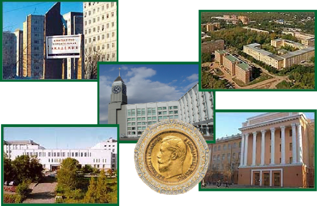

Учебная программа дисциплины Конспект лекций
Методические указания по лабораторным работам
Методические указания по самостоятельной работе Банк тестовых заданий в системе UniTest

Академбург Красноярск ИПК СФУ 2008
УДК 574/577
ББК 28.57
Ф48
Авторы:
В. М. Гольд, Н. А. Гаевский, Т. И. Голованова, Н. П. Белоног, Т. Б. Горбанева
Электронный учебно-методический комплекс по дисциплине «Физиология расте- ний» подготовлен в рамках инновационной образовательной программы «Создание и развитие департамента физико-химической биологии и фундаментальной экологии», реализованной в ФГОУ ВПО СФУ в 2007 г.
Рецензенты:
Красноярский краевой фонд науки;
Экспертная комиссия СФУ по подготовке учебно-методических комплексов дис- циплин
Ф48 Физиология растений. Версия 1.0 [Электронный ресурс] : конспект лекций / В. М. Гольд, Н. А. Гаевский, Т. И. Голованова и др. – Электрон. дан. (2 Мб). – Красноярск : ИПК СФУ, 2008. – (Физиология растений : УМКД № 165-2007 / рук. творч. коллектива В. М. Гольд). – 1 электрон. опт. диск (DVD). – Систем. требования : Intel Pentium (или аналогичный процессор других производителей) 1 ГГц ; 512 Мб оперативной памяти ; 2 Мб свободного дискового пространст- ва ; привод DVD ; операционная система Microsoft Windows 2000 SP 4 / XP SP 2 / Vista (32 бит) ; Adobe Reader 7.0 (или аналогичный продукт для чте- ния файлов формата pdf).
ISBN 978-5-7638-1275-6 (комплекса)
ISBN 978-5-7638-1488-0 (конспекта лекций)
Номер гос. регистрации в ФГУП НТЦ «Информрегистр» 0320802725 от 20.12.2008 г. (комплекса)
Настоящее издание является частью электронного учебно-методического комплекса по дисципли- не «Физиология растений», включающего учебную программу, методические указания по лаборатор- ным работам, методические указания по самостоятельной работе, контрольно-измерительные материа- лы «Физиология растений. Банк тестовых заданий», наглядное пособие «Физиология растений. Презен- тационные материалы».
Изложены закономерности жизнедеятельности растений, биохимические, молекулярные и генети- ческие основы взаимозаменяемости сложных функций и механизмов их регуляции в системе целого организма. Представлены особенности физиологических процессов, структурно-функциональной орга- низации растений, а также современные методы их исследования.
Предназначен для студентов направления подготовки бакалавров 020200.62 «Биология» укруп- ненной группы 020000 «Естественные науки».
© Сибирский федеральный университет, 2008
Рекомендовано к изданию Инновационно-методическим управлением СФУ
Редактор В. Р. Наумова
Разработка и оформление электронного образовательного ресурса: Центр технологий элек- тронного обучения информационно-аналитического департамента СФУ; лаборатория по разработке мультимедийных электронных образовательных ресурсов при КрЦНИТ
Содержимое ресурса охраняется законом об авторском праве. Несанкционированное копирование и использование данного про- дукта запрещается. Встречающиеся названия программного обеспечения, изделий, устройств или систем могут являться зарегистрирован- ными товарными знаками тех или иных фирм.
Подп. к использованию 10.09.2008 Объем 2 Мб
Красноярск: СФУ, 660041, Красноярск, пр. Свободный, 79
Оглавление
МОДУЛЬ 1 8
Физиология растений – наука о жизнедеятельности растительного организма 8
История становления физиологии растений как науки 8
Предмет, цели и задачи курса 9
Методы исследования 9
Место физиологии растений в системе биологических наук 9
Место зеленого растения в экономике природы 13
Население Земли и энергетические (пищевые) ресурсы 13
Общая схема организации растительной клетки 13
Методы исследования растительных клеток 14
Основные закономерности поглощения воды клеткой 15
Химический потенциал воды и водный потенциал клетки 17
Значение воды для жизнедеятельности растений 19
Формы воды в клетке 19
Корневая система как орган поглощения воды 20
Корневое давление: значение, механизм и методы определения.
Гуттация и плач растений 21
Формы воды в почве. Водные характеристики почвы 22
Физиологическая засуха и ее причины. Коэффициент завядания 22
Механизмы передвижения воды по растению. Теория сцепления 23
Транспирация: ее формы и физиологическое значение 23
Количественные показатели транспирации 24
Кутикулярная транспирация 25
Устьичная транспирация и механизм ее регулирования 26
Особенности водного обмена у растений разных экологических групп 28
Роль растений в круговороте воды в биосфере 30

Физиология растений. Конспект лекций
-3-
Роль растений в круговороте минеральных элементов в биосфере 31

ОГЛАВЛЕНИЕ
Потребность растений в элементах минерального питания 31
Содержание и соотношение минеральных элементов в почве и в растениях
и факторы, их определяющие 31
Классификации элементов, необходимых для растений 32
Физиологическая роль макро- и микроэлементов 33
Поглощение веществ клетками корня 38
Ближний и дальний транспорт ионов в тканях растения 40
Перераспределение и реутилизация ионов в растении.
Взаимодействие ионов (антагонизм, синергизм, аддитивность) 41
Корневое питание как важнейший фактор управления продуктивностью и качеством урожая 42
МОДУЛЬ 2 44
Определение процесса клеточного дыхания. Общая схема процесса дыхания44 Типы окислительно-восстановительных реакций 44
Каталитические системы дыхания. Механизмы активации водорода субстрата
и молекулярного кислорода 45
Специфика дыхания у растений 46
Гликолиз 47
Превращение пирувата 48
Цикл Кребса 48
Глиоксилатный цикл 50
Апотомический путь 50
Структурная организация ЭТЦ дыхания 51
Комплексы переносчиков электронов 52
Образование трансмембранного потенциала протонов 53
Немитохондриальные ЭТЦ 53
Субстратное фотофосфорилирование 53
Окислительное фосфорилирование 55
Хемиосмотический принцип сопряжения 55
АТФ-синтаза 56
Факторы, влияющие на окислительное фосфорилирование 56
Взаимосвязь дыхания с другими процессами обмена 57
Составляющие дыхания: дыхание роста, дыхание поддержания 57
Влияние внешних факторов на процесс дыхания 59

Физиология растений. Конспект лекций
-4-
Изменение интенсивности дыхания в онтогенезе 60

ОГЛАВЛЕНИЕ
Определение понятия «фотосинтез» 60
Развитие учения о фотосинтезе 61
Краткий систематический обзор фотосинтетиков 63
Основные балансовые уравнения фотосинтеза 64
Структурная организация фотосинтетического аппарата прокариот и эукариот65 Роль фотосинтеза в процессах энергетического и пластического обмена растительного организма 66
Масштабы фотосинтетической деятельности в биосфере. Эволюция биосферы и фотосинтез 67
Хлорофиллы: химическая структура, спектральные свойства, функции 68
Основные этапы биосинтеза молекулы хлорофилла 70
Хлорофилл-белковые комплексы 73
Фикобилины: распространение, химическое строение, спектральные свойства, роль в фотосинтезе 73
Каротиноиды: химическое строение, спектральные свойства, функции 73
Поглощение света и передача энергии возбуждения 74
Возбужденное состояние электронов и пути дезактивации 74
Представление о фотосинтетической единице 75
Антенные комплексы 76
Преобразование энергии в реакционных центрах 77
Представление о совместном функционировании двух фотосистем. Эффекты Эмерсона 77
Электрон-транспортная цепь фотосинтеза 78
Основные функциональные комплексы ЭТЦ 79
Системы фотоокисления воды и выделения кислорода при фотосинтезе 79
Типы функциональной организации ЭТЦ: нециклический, циклический и псевдоциклический потоки электронов и фотофосфорилирование 80
Стехиометрия сопряжения электронного транспорта и образования АТФ 81
Регуляция электрон-транспортной цепи фотосинтеза 82
Природа первичных акцепторов углекислого газа (углекислоты) 83
Фиксация углекислого газа в цикле Кальвина-Бенсона, ключевые ферменты 84
Первичные продукты фотосинтеза 86
Фотодыхание 86
Фиксация углекислого газа в цикле Хэтча-Слэка-Карпилова 87
Особенности углекислотного метаболизма у С3-, С4-, и САМ-растений 88

Физиология растений. Конспект лекций
-5-
Эволюция механизма концентрирования СО2 89

ОГЛАВЛЕНИЕ
Влияние на фотосинтез температуры, условий освещения, содержания углекислоты, условий минерального питания, водоснабжения 90
Показатели эффективности работы фотосинтетического аппарата (квантовый выход, ассимиляционное число) 93
Фотосинтез в онтогенезе растения 94
МОДУЛЬ 3 95
Общие представления о росте и развитии растений 95
Закономерности, типы роста 97
Кинетика ростовых процессов 98
Основные этапы развития растений 99
Клеточные основы роста 101
Особенности роста органов растений 103
Корреляции ростовых процессов различных органов, регенерация 105
Влияние внутренних и внешних факторов на рост и развитие растений 108
Физиологические основы действия фитогормонов 109
Фитохромная и криптохромная системы. Электрофизиологические процессы роста 110
Электротонические поля и токи 112
Потенциал действия (ПД) 112
Процессы раздражимости и возбудимости 113
Типы движения растений и их механизмы 115
Основные этапы онтогенеза 119
Морфологические, физиологические и метаболические особенности этапов онтогенеза 119
Состояние покоя у растений. Типы покоя и их значение для жизнедеятельности растений 124
МОДУЛЬ 4 126
Общие понятия: стресс, адаптация, устойчивость 126
Типы ответных реакций растений на действие неблагоприятных факторов 129
Характеристика факторов внешней среды 131
Механизмы устойчивости и пути адаптации растений к различным неблагоприятным факторам 131

Физиология растений. Конспект лекций
-6-
Закаливание растений 134

ОГЛАВЛЕНИЕ
Радиоустойчивость растений и ее механизмы 135
Общие принципы адаптивных реакций растений на экологический стресс 136
Изменение экспрессии генов. Синтез стрессовых, мембранных, структурных белков. Перестройка мембранных систем 137
Биохимическая адаптация 139
Пути повышения устойчивости растений 140
Физиология растений – теоретическая основа растениеводства и новых отраслей биотехнологии 141
Физиологические основы продуктивности растений 143
Главные проблемы современной фитофизиологии 143

Физиология растений. Конспект лекций
-7-
БИБЛИОГРАФИЧЕСКИЙ СПИСОК 148
МОДУЛЬ 1
Физиология растений – наука о жизнедеятельности растительного организма
Курс физиологии растений справедливо считают одним из самых сложных и трудных среди биологических дисциплин.
Растения отличаются от других организмов автотрофным питанием, которое основано на использовании энергии света, наличием у клеток плот- ных состоящих в основном из целлюлозы оболочек. Ж. Б. Ламарк первым выделил способ питания в качестве главного отличительного признака рас- тений и животных. Кроме того, растения не способны к мгновенному сокра- щению своих твердых частей и к произвольному перемещению с одного мес- та на другое.
Физиология растений – интенсивно развивающаяся наука, о чем свиде- тельствуют многочисленные научные общества, издания, симпозиумы и конференции.
История становления физиологии растений как науки
Трудно выделить какую-либо из работ прошлого в области биологии, которая легла бы в основу физиологии растений. В.В. Полевой, автор базово- го учебника по физиологии растений, в качестве таковой рассматривает ра- боту Я.Б. Ван Гельмонта (1634), в которой ученый сделан вывод о том, что вода используется для построения органической массы растения. В большин- стве учебников становление физиологии растений как самостоятельной нау- ки относят к 18 веку.
В 1727 г. С. Гейлс установил, что движение воды по растению вызыва- ют корневое давление и транспирация. В 1771 г. Дж. Пристли открыл спо- собность зеленых растений выделять на свету кислород. В 1782 г. Ж. Сенебье назвал поглощение СО2 на свету «углекислотным дыханием». В 1797–1804 гг. Н. Т. Соссюр открыл дыхание у растений и рассчитал баланс газов при фотосинтезе. В 1800 г. Ж. Сенебье опубликовал пятитомный трактат

Физиология растений. Конспект лекций
-8-
«Physiologie vegetale», в котором впервые определил физиологию растений как самостоятельную науку, собрал, обработал и осмыслил известные к тому времени данные, сформулировал основные задачи физиологии растений, оп- ределил ее предмет и используемые методы.
МОДУЛЬ 1
Раздел 1. Физиология растений как наука. задачи физиологии растений

В России основателем физиологии и биохимии растений справедливо считается Андрей Сергеевич Фаминцын (1835–1918) – автор первого учебни- ка (1887), создатель первой университетской кафедры и академической лабо- ратории физиологии растений (1889), которая в последующем была преобра- зована в Институт физиологии растений. А.С. Фаминцын основал ряд на- правлений в области эволюционной физиологии и биохимии растений. Наи- более известны его взгляды на симбиотическую эволюцию, единство прин- ципов жизнедеятельности растительных и животных организмов.
Список имен известных ученых-физиологов растений с кратким указа- нием тем и направлений их работы мог бы составить несколько сотен страниц.
Предмет, цели и задачи курса
Физиология растений изучает общие закономерности жизнедеятельно- сти растительных организмов и является частью биологической науки. Цель дисциплины «Физиология растений» – раскрыть сущность этих процессов, показать пути их регуляции и управления. «Физиолог не может довольство- ваться пассивной ролью наблюдателя, как экспериментатор, он является дея- телем, управляющим природой», – писал К. А. Тимирязев.
Студенты-биологи, используя свою физико-математическую и физико- химическую подготовку, должны на основе лекционного курса, лаборатор- ных занятий и самостоятельной работы вникнуть в суть основных физиоло- гических процессов растений, быть в курсе современных тенденций развития науки и ее достижений. Курс «Физиология растений» предполагает форми- рование у студентов общенаучных, профессиональных и инструментальных компетенций.
Методы исследования
Исследователю в области физиологии растений приходится решать за- дачи количественного определения показателей роста и развития растений, энергетического и пластического обмена (фотосинтеза и дыхания), водного и минерального обмена и др. на разных уровнях организации живой материи. В арсенал современных методов входят методы культивирования растений, спектрофотометрические методы, оптико-акустические, хроматографиче- ские, электрохимические, методы световой и электронной спектроскопии и мн. др.
Место физиологии растений в системе биологических наук

Физиология растений. Конспект лекций
-9-
Физиология растений наравне с ботаникой является основополагающей наукой при изучении растительного мира. Сравнительная физиология расте- ний выполняет связующую роль между царством растений и животных. Структурной единицей, позволяющей производить сравнение функций раз-
МОДУЛЬ 1
Раздел 1. Физиология растений как наука. задачи физиологии растений

личающихся живых систем, является клетка с ее внутренней организацией, особенностями хранения и передачи наследственной информации.
Основные направления современной физиологии растений сформиро- вались в конце XIX – начале XX вв. Среди них: фотосинтез (Ж. Б. Буссенго, Ю. Сакс, А. С. Фаминцын, К. А. Тимирязев, М. С. Цвет, М. Ненцкий, Л. Мархлевский, А. Н. Бах); дыхание (А. С. Фаминцын, И. П. Бородин, Л. Пастер, А. Н. Бах, Г. Э. Бертран); водный режим (Г. Дютроше, Г. де Фриз, Ю. Сакс); минеральное питание (Ю. Либих, Ж. Б. Буссенго, Г. Гельригель, И. Кноп, С. Н. Виноградский, М. В. Бейеринк, Д. Н. Прянишников); транс- порт веществ (В. Пфеффер, Е. Ф. Вотчал); рост и развитие (Ю. Сакс, А. С. Фаминцын, О. В. Баранецкий, А. Ф. Баталин, Н. Ф. Леваковский, Г. Фехтинг, Г. Клебс); движение растений (Т. Найт, Ю. Сакс, Ч. Дарвин, Ю. Визнер, В. А. Ротерт, В. Пфеффер); раздражимость (Б. Сандерсон, Ч. Дарвин, Н. Ф. Леваковский); устойчивость растений (Д. И. Ивановский, К. А. Тимирязев, Г. Молиш); эволюционная физиология растений (Ч. Дарвин, К. Бернар, А. С. Фаминцын, К. А. Тимирязев).
В ХХ веке возникли новые направления: биохимия, биотехнология, молекулярная биология растений, генная инженерия, биофизика растений, эволюционная и экологическая физиология растений. Наблюдается опреде- ленная дифференциация науки на молекулярное и экологическое направле- ния. Научный рынок труда уже сейчас нуждается в специалистах в области физиологии растений, о чем свидетельствуют объявления в зарубежных из- даниях о вакансиях.
Основой для развития физиологии растений в СССР послужили труды К. А. Тимирязева, В. И. Палладина, С. П. Костычева и др. Плодотворно изу- чались зимостойкость, засухо- и солеустойчивость растений (Н. А. Макси- мов, И. И. Туманов, П. А. Генкель и др.). Успешной была разработка теоре- тических основ питания растений в связи с проблемой повышения урожайно- сти (Д. Н. Прянишников, Д. А. Сабинин, Я. В. Пейве и др.). Начиная с 50-х гг. ХХ века на первое место вышли исследования обмена веществ и тонкой электрон-микроскопической организации клеток.

Физиология растений. Конспект лекций
-10-
Сделан вклад в выяснение фотохимической стадии фотосинтеза, обна- ружение разнокачественности его продуктов, выяснение путей биосинтеза фотосинтетических пигментов, а также в создание теории, связывающей фо- тосинтетическую деятельность растений с их продуктивностью (А. А. Рих- тер, А. А. Ничипорович, Т. Н. Годнев, А. А. Красновский, А. А. Шлык, В. Б. Евстигнеев и др.). Ведутся работы по выяснению физиологических и биохи- мических основ дыхания, азотистого обмена, транспорта метаболитов, био- синтеза веществ вторичного происхождения (А. Л. Курсанов, М. Н. Запроме- тов, О. В. Заленский, Б. А. Рубин). Есть успехи в изучении факторов, опреде- ляющих рост и развитие растений, фотопериодизма, гормональных систем (М. X. Чайлахян, О. Н. Кулаева и др.). В 70-х гг. в результате использования культуры растительных тканей были получены новые гибридные формы рас- тений табака (Р. Г. Бутенко). Метод, основанный на слиянии протопластов двух клеток, открыл новые возможности преодоления несовместимости рас-
МОДУЛЬ 1
Раздел 1. Физиология растений как наука. задачи физиологии растений

тительных тканей и получения отдалённых гибридов. Неоценимый вклад в развитие физиологии растений и подготовку нового поколения физиологов растений сделал Всеволод Владимирович Полевой (1931–2001) – крупней- ший ученый, ведущий физиолог, биохимик и биофизик растений.
Состояние науки на рубеже двух тысячелетий обсудили участники IV съезда Общества физиологов России (Москва, 1999). Президент Общества академик А.Т. Мокроносов обратился к делегатам съезда со словами:
«Дорогие коллеги!
Приближается 200-летний юбилей физиологии растений. За этот пери- од она накопила огромный материал по физико-химической организации, ин- теграции, саморегуляции функциональных систем и адаптации растительно- го организма и стала теоретической основой высокоэффективного земледе- лия. Вместе с другими биологическими науками физиология растений стала фундаментальной основой трех “зеленых революций”, каждая из которых приводила к удвоению урожая….
XXI век мы встречаем на пороге новой постгеномной эры в биологии. Ее появление обязано стремительным успехам в дешифровке первичной структуры ДНК, в создании рекомбинантных молекул и в развитии генной инженерии. В наши дни секвенирование нуклеиновых кислот стало хотя и дорогим, но тривиальным и рутинным делом. Оно приобрело форму товар- ного продукта, интерес к которому интенсивно растет… В 2004 г. будет пол- ностью секвенирован геном первого высшего организма – растения араби- допсиса. Когда … первичная структура генома будет записана в цифровой или иной системе, когда разрыв между потоком информации и уровнем его осмысления достигнет угрожающих размеров, неизбежно встанет ключевой вопрос гносеологии: “Ну и что?”. На поставленный вопрос суждено ответить лишь наукам синтетическим, таким, как физиология, способным к интегра- ции сложных структур и систем, вплоть до процессов дифференцировки кле- ток.
Не исключено, что широкие возможности генной инженерии станут ба- зой для новых “зеленых революций”. Однако прежде чем это произойдет, должен быть просчитан возможный риск от массового распространения ре- комбинантных технологий …. Вполне вероятно, что наши дети познакомятся с последствиями освобождения “геномного джинна” уже в середине XXI века.
Важно отметить еще одну существенную смену ориентиров, которая произошла в 50-х годах XX столетия. До этого времени абсолютным приори- тетом физиологии растений являлась разработка теории продуктивности сельскохозяйственных культур. Однако сегодня уровень знаний и технологий настолько высок, что величина и качество урожая лимитируются не развити- ем фундаментальной науки, а факторами экономического и социального ха- рактера.

Физиология растений. Конспект лекций
-11-
Начиная с 50–60-х годов все более приоритетными для физиологии становятся проблемы локальной, региональной и глобальной экологии. Предстоит на физико-химической основе расшифровать последовательность
МОДУЛЬ 1
Раздел 1. Физиология растений как наука. задачи физиологии растений

всех этапов адаптационного синдрома растений применительно к множеству природных и техногенных стрессоров. Потребуется поиск методов и техно- логий решения различных проблем промышленной экологии, включая зоны экологических катастроф. Физиологии растений предстоит внести свой вклад в исследование биологического разнообразия, сохранение и изучение при- родных экосистем, таких как сибирская тайга, полярная тундра, джунгли Юго-Восточной Азии и уникальная экосистема Амазонии... Поведение рас- тенияв нестабильной среде станет центральной проблемой экологической физиологии предстоящего столетия.
Нет сомнения, что физиология растений в III тысячелетии будет, по- прежнему, играть ключевую роль в исследовании жизни зеленого растения, будет активно востребована человеческой цивилизацией и займет свое дос- тойное место в поддержании стабильного состояния биосферы и ноосферы, а также в глобальной информационной паутине Интернета и компьютерных технологий и их оптимального использования. Решение столь необычных по своим масштабам и сложности проблем во многом будет определяться объе- динением усилий и тесной координацией физиологов растений и специали- стов смежных наук».
Прогнозы А.Т. Мокроносова полностью подтвердились. На очередном, шестом, съезде Общества физиологов растений России (Сыктывкар, 2007) были представлены следующие направления: энергетика и метаболизм рас- тительной клетки; геном растений и регуляция его экспрессии; гормоны и онтогенез; стресс, адаптации и выживание растений; физиология фотосинте- за и глобальная экология; клеточная биология и биотехнология, биология трансгенных растений; продукционный процесс; преподавание физиологии и биохимии растений. Их можно сгруппировать в три модуля: 1 – изучение за- кономерностей жизнедеятельности растений (механизмы питания, роста, движения, размножения и др.); 2 – разработка теоретических основ получе- ния максимальных урожаев сельскохозяйственных культур; 3 – разработка установок для осуществления процессов фотосинтеза в искусственных усло- виях.

Физиология растений. Конспект лекций
-12-
Первый модуль заложен в определении самой физиологии растений. Второй модуль по-прежнему остается наиболее актуальным, так как рост на- селения нашей планеты и сокращение посевных площадей оставляют лишь один путь – путь интенсификации сельскохозяйственного производства не только пищевых, технических, лекарственных и декоративных культур, но и растений для получения топлива. Третий в настоящее время кажется фанта- стическим. Однако вряд ли люди, овладев тайнами, не попытаются осущест- вить эти процессы в лабораторных, а затем в промышленных установках.
МОДУЛЬ 1
Раздел 1. Физиология растений как наука. задачи физиологии растений

Место зеленого растения в экономике природы
Автотрофные растения Мирового океана за год способны превращать в органическое вещество 20–155 109 т углерода. Наземные растения фиксиру- ют 16–24 109 т углерода. Для сравнения в угольном эквиваленте ежегодно на Земле освобождается 3–4 109 т углерода. Ежегодная продукция кислорода со- ставляет 1011 тонн. На протяжении миллиардов лет в атмосфере Земли сфор- мировалось равновесие кислорода (20 %) и углекислого газа (0,033 %). Еже- годно регистрируется увеличение концентрации углекислого газа на1,5 % от исходного значения.
Население Земли и энергетические (пищевые) ресурсы
Объем производимой растениями биомассы распределяется между во- дорослями и наземными растениями. Только наземные растения накаплива- ют ежегодно в форме углеводов 5-1017 ккал. Даже 1 % этой энергии доста- точно для питания 5 млрд. человек. Тем не менее, рост населения Земли и рост энергопотребления может нарушить исторически сложившийся баланс вещества и энергии в биосфере.
Общая схема организации растительной клетки
Высшие растения являются многоклеточными организмами, состоя- щими из множества клеток, выполняющих специализированные функции. Несмотря на то, что дифференцированные клетки могут сильно отличаться друг от друга, все они как клетки эукариотического организма имеют ядро, цитоплазму, ряд клеточных органелл и систему мембран, которая не только отделяет клетку от окружающей среды, но и разделяет на компартменты ее внутреннее содержимое.
Специфической особенностью строения растительной клетки является наличие системы пластид, крупной центральной вакуоли, а также прочной полисахаридной клеточной стенки. Растительная клетка содержит три отно- сительно автономные, но тесно взаимодействующие генетические системы: ядерную, митохондриальную и пластидную. Для растительных клеток харак- терен особый тип роста – рост растяжением. У делящихся растительных кле- ток отсутствуют центриоли.

Физиология растений. Конспект лекций
-13-
Поскольку клеточные стенки клеток одной ткани или органа непосред- ственно контактируют друг с другом, то возникает единая система клеточных
МОДУЛЬ 1
Раздел 2. Физиология растительной клетки

стенок, которая называется апопластом.
Протопласты растительной клетки через поры клеточных стенок связа- ны между собой плазмодесмами, которые соединяют их в цитоплазматиче- ское целое – симпласт. Каждая плазмодесма представляет собой тяж гиало- плазмы, окруженный плазмалеммой, центральную часть которого занимает десмотрубка, которая связывает эндоплазматический ретикулум соседних клеток. Непрерывную систему эндоплазматического ретикулума растения называют эндопластом.
Таким образом, растительный организм представляет собой единую систему дифференцированных клеток, выполняющих определенные функции и имеющих обусловленные этими функциями особенности строения. Диффе- ренцировка клеток обусловлена изменением активности генома клетки, эк- прессией одних генов и подавлением активности других. Специфической особенностью растительных клеток является тотипотентность – способность к дедифференцировке и реализации всей имеющейся в клетке генетической информации, способность дедифференцированной клетки дать начало ново- му организму. Дифференцированные животные клетки, как правило, тотипо- тентностью не обладают.
Методы исследования растительных клеток
Основными методами изучения структуры растительной клетки явля- ются методы визуального наблюдения с помощью увеличительных прибо- ров.
Световая микроскопия – изучение объекта с использованием световых микроскопов. Так как в этих оптических приборах используются источники видимого света (400–700 нм), они повышают разрешающую способность че- ловеческого глаза в 1000 раз, что позволяет видеть объекты величиной 0,2–0,3 мкм. Метод «темного поля» позволяет различать объекты величиной менее 0,2 мкм.
Фазово-контрастная, интерференционная и поляризационная микро- скопия позволяют изучать детальную структуру живых клеток.
С помощью световой микроскопии можно увидеть многие органоиды клетки: клеточную стенку, ядро, хлоропласты, митохондрии.
Электронная микроскопия – изучение ультраструктуры клеток, зафик- сированных специальным образом. Разрешающая способность электронных микроскопов – 0,1 нм.

Физиология растений. Конспект лекций
-14-
Электронная микроскопия позволяет изучать особенности мембранных структур органоидов, зависимость их изменений от влияния различных фак- торов.
МОДУЛЬ 1
Раздел 2. Физиология растительной клетки

Основные закономерности поглощения воды клеткой
Поглощение воды из внешней среды – обязательное условие функцио- нирования любого живого организма. Вода может поступать в клетки расте- ний за счет набухания биоколлоидов, увеличения степени их гидратации. Этот процесс характерен для сухих семян при помещении их во влажную среду (для прорастания). В основе перемещения молекул – диффузия, т. е. процесс, ведущий к равномерному распределению молекул газов или раство- ренного вещества и растворителя благодаря их постоянному движению. Диффузия всегда направлена от большей концентрации вещества к меньшей.
Диффузия воды через полупроницаемую мембрану называется осмо- сом. Полупроницаемая мембрана – это мембрана, хорошо проницаемая для воды и непроницаемая или плохо проницаемая для растворенных в воде ве- ществ. Осмотическая ячейка – это пространство, окруженное полупроницае- мой мембраной и заполненное каким-либо водным раствором, способным развивать определенное осмотическое давление.
Осмотическое давление (диффузное давление) – термодинамический параметр, характеризующий стремление раствора к понижению концентра- ции при соприкосновении с чистым растворителем вследствие встречной диффузии молекул растворённого вещества и растворителя. Если раствор от- делен от чистого растворителя полупроницаемой мембраной, то возможна лишь односторонняя диффузия – осмотическое всасывание растворителя че- рез мембрану в раствор. В этом случае осмотическое давление становится доступной для прямого измерения величиной. Оно равно избыточному дав- лению, приложенному со стороны раствора при осмотическом равновесии.

Физиология растений. Конспект лекций
-15-
Осмотическое давление обусловлено понижением химического потен- циала растворителя в присутствии растворённого вещества. Тенденция сис- темы выравнивать химические потенциалы во всех частях своего объёма и переходить в состояние с более низким уровнем свободной энергии вызывает осмотический (диффузионный) перенос вещества. Осмотическое давление в идеальных и предельно разбавленных растворах не зависит от природы рас- творителя и растворённых веществ; при постоянной температуре оно опреде- ляется только числом «кинетических элементов» (ионов, молекул, ассоциа- тов или коллоидных частиц) в единице объёма раствора. Осмотическое дав- ление (Р) численно равно давлению, которое оказало бы растворённое веще- ство, если бы оно при данной температуре находилось в состоянии идеально- го газа и занимало объём, равный объёму раствора.
МОДУЛЬ 1
Раздел 2. Физиология растительной клетки

Осмотическое давление измеряют с помощью специальных приборов (осмометров), определяя избыточное гидростатическое давление столба жид- кости в трубке осмометра после установления осмотического равновесия.
Осмос является основным механизмом поступления воды в раститель- ную клетку.
Все клеточные мембраны, в том числе плазмалемма и тонопласт, явля- ются полупроницаемыми мембранами. Вода проходит в клетку через водные поры в плазмалемме, образованные специальными белками – аквапоринами.
Внутри вакуоли («осмотической ячейки») клеточный сок развивает ос- мотическое давление :
= i С R T,
где С – концентрация раствора в молях; Т – абсолютная температура; R – га- зовая постоянная 0,082 л атм/град моль; i – изотонический коэффициент, равный 1 + (n–1).
Значение i находится так:
i = 1+α(n–1),
где – степень электролитической диссоциации; n – число ионов, на кото- рые распадается молекула электролита.
Благодаря осмотическому притоку воды в клетку там возникает гидро- статическое давление, называемое тургорным. Это давление прижимает ци- топлазму к клеточной стенке и растягивает ее. Клеточная стенка имеет огра- ниченную эластичность и оказывает равное противодавление. Эластическое растяжение ткани благодаря тургорному давлению ее клеток придает твер- дость неодревесневшим частям растений. Завядающие побеги становятся дряблыми, так как при потере воды тургорное давление падает. Тургорное давление противодействует притоку воды в клетку.
Давление, с которым вода осмотически притекает в клетку, равно, та- ким образом, разности осмотического давления и тургорного давления P. Эту величину называют сосущей силой S:
S = – P.

Физиология растений. Конспект лекций
-16-
Вода поступает в клетку из внешнего раствора, если его потенциальное осмотическое давление меньше сосущей силы клетки, и, наоборот, вода вы- ходит из клетки в раствор с более высоким потенциальным осмотическим давлением.
МОДУЛЬ 1
Раздел 2. Физиология растительной клетки

Химический потенциал воды и водный потенциал клетки
При термодинамической трактовке сосущая сила заменяется водным потенциалом w. Водный потенциал можно определить как работу, необхо- димую для того, чтобы поднять потенциал связанной воды до потенциала чистой, то есть свободной, воды. Термин «водный потенциал» не совсем то- чен. Правильнее, но менее употребителен термин «разность потенциалов во- ды», поскольку он определяет разность химических потенциалов воды в сис- теме w (например в вакуоли) и чистой воды ow при атмосферном давлении. Абсолютные значения w и ow неизвестны, но их разность можно опреде- лить. Она всегда отрицательна. Потенциал воды в растворе, растении, почве и атмосфере меньше нуля. Потенциал чистой воды равен нулю.
Можно также заменить и P на потенциалы, а именно на осмотический потенциал (отрицательный) и потенциал давления р (как правило, поло- жительный). В таком случае осмотическое уравнение превращается в урав- нение потенциала воды:
w = – – р ( размерность бар = эрг см–3 106).
Величину осмотического потенциала можно определить плазмолитиче- ским методом. Плазмолиз – это процесс, обусловленный потерей воды клет- кой. Он проявляется в отходе протопласта от клеточной стенки. При перено- се плазмолизированных тканей в гипотонический раствор (или чистую воду) вода поступает в клетку и происходит деплазмолиз. Количество воды в клет- ке увеличивается, объем вакуоли возрастает – и она прижимает цитоплазму к клеточной стенке. Плазмолитический метод основан на подборе изоосмоти- ческого (изотонического) раствора, то есть имеющего осмотический потен- циал, равный осмотическому потенциалу клетки. Раствор, при котором на- чался плазмолиз, имеет осмотический потенциал, примерно равный осмоти- ческому потенциалу клетки. Зная концентрацию наружного раствора в мо- лях, можно вычислить осмотический потенциал клетки.
Иногда при сильном завядании протопласт не отстает от клеточной стенки, как при плазмолизе, а сжимается и тянет ее за собой. При этом кле- точная стенка прогибается. Это явление называют циторризом. Развивается натяжение (или отрицательное давление стенки) – и потенциал тургорного давления приобретает отрицательное значение. В этом случае величина вод- ного потенциала определяется уже не разностью, а суммой осмотического потенциала и потенциала давления:

Физиология растений. Конспект лекций
-17-
–w = – + p.
МОДУЛЬ 1
Раздел 2. Физиология растительной клетки

Величина осмотического потенциала позволяет судить о способности растения поглощать воду из почвы и удерживать ее, несмотря на иссушаю- щее действие атмосферы. Осмотический потенциал колеблется у разных рас- тений в пределах от –5 до –200 баров. У водных растений осмотический по- тенциал около –1 бара. У большинства растений средней полосы осмотиче- ский потенциал колеблется от –5 до –30 баров, растения степей и пустынь имеют более отрицательный осмотический потенциал. Осмотический потен- циал различен и у разных жизненных форм. У деревьев он отрицательнее, чем у кустарников и травянистых растений. У светолюбивых растений осмо- тический потенциал отрицательнее, чем у теневыносливых растений.
Поступление воды в клетку обусловлено не только осмотическим дав- лением, но и силой набухания. Набуханием называют поглощение жидкости или пара высокомолекулярным веществом (набухающим телом), сопровож- даемое увеличением объема. Явление набухания обусловлено коллоидаль- ными и капиллярными эффектами. В протоплазме преобладает набухание на коллоидальной основе (гидратация коллоидов), а в клеточной стенке наблю- даются оба эффекта: капиллярный – накопление воды между микрофибрил- лами и в межмицеллярных пространствах; коллоидальный – гидратация по- лисахаридов, особенно гемицеллюлоз. У некоторых частей растений погло- щение воды происходит исключительно путем набухания, например у семян.
Благодаря большому сродству набухающего тела к воде при набухании может возникать давление набухания в несколько сотен атмосфер. Силу на- бухания обозначают термином «матричный потенциал» .
Таким образом, для клетки характерны следующие уравнения водного потенциала:
вакуоль: –w = – – p; протоплазма: –w = – – p – ; клеточная стенка: –w = – .

Физиология растений. Конспект лекций
-18-
Вода в клетку может поступать также в процессе пиноцитоза, когда часть плазмалеммы прогибается внутрь клетки. Внешние края такой инваги- нации смыкаются и виде пузырька – везикулы с адсорбированными частица- ми и внешним раствором, – который проходит внутрь цитоплазмы.
МОДУЛЬ 1

Значение воды для жизнедеятельности растений
Вода является одной из главных составных частей растений. Ее содер- жание неодинаково в разных органах растения (так, в листьях салата она со- ставляет 95 %, а в сухих семенах – не более 10 % от массы ткани) и зависит от условий внешней среды, вида и возраста растения. Для своего нормально- го существования растение должно содержать определенное количество во- ды, в среднем 75–80 % массы растительной ткани.
Вода – это: 1) среда, в которой протекают процессы обмена веществ;
2) субстрат и продукт биохимических процессов (реакции гидролиза, окисли- тельно-восстановительные реакции); 3) источник кислорода, выделяемого при фотосинтезе, и водорода, используемого для восстановления углекислого газа; 4) основа конформации молекул белка; 5) основа устойчивости структур цитоплазмы и оболочки клеток в упругом состоянии; 6) основа «тургорных» движений частей растений; 7) основа терморегуляции растительного орга- низма.
Свойства воды, обеспечивающие ее функции в растительной клетке:
1) молекула воды представляет собой диполь; 2) благодаря этому молекулы воды могут ассоциировать друг с другом, ионами и белковыми молекулами;
3) вода участвует в поглощении и транспорте веществ, так как является хо- рошим растворителем; гидратные оболочки, окружающие ионы, ограничи- вают их взаимодействие; 4) вода обладает высокой теплоемкостью, равной 1 кал/град, что позволяет растению воспринимать изменения температуры ок- ружающей среды в смягченном виде, испарение воды растениями, т. е. транспирация, служит основным средством терморегуляции у растений.
Формы воды в клетке
В клетках и тканях различают две формы воды: прочно связанную (связанную) и рыхло связанную (свободную).
Осмотически связанная вода гидратирует растворенные вещества – ио- ны и молекулы; коллоидносвязанная вода гидратирует коллоиды (макромо- лекулы); капиллярносвязанная вода связана со структурами клеточных сте- нок и сосудов за счет сил адгезии.

Физиология растений. Конспект лекций
-19-
Связанная вода выполняет структурную функцию, поддерживая струк- туру коллоидов и обеспечивая функционирование ферментов, органоидов и клетки в целом. Она малоподвижна, не участвует в растворении и транспорте
МОДУЛЬ 1
Раздел 3. Водный режим растений

веществ, отличается сниженной температурой замерзания и более высокой температурой кипения по сравнению со свободной водой.
Свободная вода обладает высокой подвижностью, является раствори- телем и основным транспортером веществ по растению.
Доля связанной воды в клетке составляет около 40 %, доля свободной – около 60 %. При недостатке влаги в первую очередь снижается доля свобод- ной воды.
Корневая система как орган поглощения воды
Водный баланс растений складывается из поглощения, использования и потери воды. Корневая система является органом поглощения воды из поч- вы. Сформировавшаяся корневая система представляет собой сложный орган с хорошо дифференцированной структурой. Подсчитано, что общая поверх- ность корневой системы может превышать поверхность надземных органов более чем в 150 раз. Рост корневой системы и ее ветвление продолжаются в течение всей жизни растения.
Поглощение воды и питательных веществ осуществляется в основном корневыми волосками ризодермы. Ризодерма – это однослойная ткань, по- крывающая корень снаружи. У одних видов растений каждая клетка ризо- дермы формирует корневой волосок, у других она состоит из двух типов кле- ток: трихобластов, образующих корневые волоски, и атрихобластов, не спо- собных к образованию волосков.
Из ризодермы вода попадает в клетки коры. У травянистых растений кора корня обычно представляет собой несколько слоев живых паренхимных клеток. Между клетками имеются крупные межклетники, обеспечивающие аэрацию корня. Через клетки коры возможны два пути транспорта воды и растворов минеральных солей: по симпласту и апопласту. Более быстрый транспорт воды происходит по апопласту.
Затем вода попадает в клетки эндодермы. Эндодерма – это внутренний слой клеток коры, граничащий с центральным цилиндром. Их клеточные стенки водонепроницаемы из-за отложения суберина и лигнина (пояски Кас- пари). Поэтому вода и соли проходят через клетки эндодермы по симпласту и транспорт воды в эндодерме замедляется. Это необходимо, так как диаметр стели (центрального цилиндра), куда попадает вода из эндодермы, меньше всасывающей поверхности корня.

Физиология растений. Конспект лекций
-20-
Центральный цилиндр корня содержит перицикл, паренхимные клетки и две системы проводящих элементов: ксилему и флоэму. Клетки перицикла представляют собой одно- или многослойную обкладку проводящих сосудов. Его клетки регулируют транспорт веществ как из наружных слоев в ксилему, так и из флоэмы в кору. Кроме того, клетки перицикла выполняют функцию образовательной ткани, способной продуцировать боковые корни. Клетки перицикла и паренхимные клетки активно транспортируют ионы в проводя- щие элементы ксилемы. Контакт осуществляется через поры во вторичных
МОДУЛЬ 1
Раздел 3. Водный режим растений

клеточных стенках сосудов и клеток. Между ними нет плазмодесм. Затем во- да и растворенные вещества диффундируют в полость сосуда через первич- ную клеточную стенку. Для некоторых паренхимных клеток сосудистого пучка характерны выросты – лабиринты стенок, выстланные плазмалеммой, что значительно увеличивает ее площадь. Эти клетки активно участвуют в транспорте веществ в сосуды и обратно и называются передаточными, или переходными. Они могут граничить одновременно с сосудами ксилемы и си- товидными трубками флоэмы. По сосудам флоэмы транспортируются орга- нические вещества из надземной части растения в корни.
Корневое давление: значение, механизм и методы определения.
Гуттация и плач растений
Вода пассивно диффундирует в сосуды ксилемы благодаря осмотиче- скому механизму. Осмотически активными веществами в сосудах являются минеральные ионы и метаболиты, выделяемые насосами плазмалеммы па- ренхимных клеток, окружающих сосуды. Сосущая сила у сосудов выше, чем у окружающих клеток из-за повышающейся концентрации ксилемного сока и отсутствия значительного противодавления со стороны малоэластичных кле- точных стенок. В результате поступления воды в сосудах ксилемы развивает- ся гидростатическое давление, получившее название корневого давления. Оно участвует в поднятии ксилемного раствора по сосудам ксилемы из корня в надземную часть растения. Поднятие воды по растению вследствие разви- вающегося корневого давления называют нижним концевым двигателем.
Проявлением работы нижнего концевого двигателя (корневого давле- ния) служат плач растений и гуттация. Весной у кустарников и деревьев с еще нераспустившимися листьями можно наблюдать интенсивный ксилем- ный ток снизу вверх через надрезы ствола и веток. У травянистых растений при отрезании стебля из пенька выделяется ксилемный сок, называемый па- сокой.

Физиология растений. Конспект лекций
-21-
Поступление воды через корневую систему сокращается с понижением температуры. Это происходит по следующим причинам: 1) повышается вяз- кость воды, и поэтому снижается ее подвижность; 2) уменьшается проницае- мость протоплазмы для воды; 3) тормозится рост корней; 4) уменьшается скорость метаболических процессов. Поступление воды снижается при ухудшении аэрации почвы. Это можно наблюдать, когда после сильного до- ждя почва залита водой, но при ярком солнце из-за сильного испарения рас- тения завядают. Большое значение имеет концентрация почвенного раствора. Вода поступает в корень только тогда, когда водный потенциал корня мень- ше водного потенциала почвы. Если почвенный раствор имеет более отрица- тельный потенциал, вода будет не поступать в корень, а выходить из него.
МОДУЛЬ 1
Раздел 3. Водный режим растений

Формы воды в почве. Водные характеристики почвы
По степени доступности для растения различают следующие формы почвенной влаги. Гравитационная вода заполняет промежутки между части- цами почвы и хорошо доступна растениям. Однако она быстро испаряется и легко стекает в нижние горизонты почвы под влиянием силы тяжести, вслед- ствие чего бывает в почве лишь после дождей. Капиллярная вода заполняет капилляры в почвенных частицах. Эта вода хорошо доступна для растений, она удерживается в капиллярах силами поверхностного натяжения и поэтому не только не стекает вниз, но и поднимается вверх от грунтовых вод. Пле- ночная вода окружает коллоидные частицы почвы. Вода из периферических слоев гидратационных оболочек может поглощаться корнями. Гигроскопиче- ская вода адсорбируется сухой почвой при помещении ее в атмосферу с 95 %-ной относительной влажностью. Этот тонкий слой молекул воды удер- живается с такой силой, что их водный потенциал достигает 1000 баров и она недоступна для растений.
Способность почвы удерживать воду зависит от ее состава и свойств. Для характеристики максимального запаса почвенной влаги используют по- нятие «полная полевая влагоемкость» (или «полевая влагоемкость»). Количе- ственно этот параметр отражает количество воды (выраженное в процентах), которое способны поглотить и удержать 100 граммов почвы. Чем больше в почве минеральных (глинистых) и органических (гумуса) частиц, тем выше значение полевой влагоемкости. Так как для нормальной жизнедеятельности корневой системы необходимо некоторое количество кислорода почвенного воздуха, оптимальной для большинства растений считается влажность поч- вы, равная 60% от полной полевой влагоемкости.
Физиологическая засуха и ее причины. Коэффициент завядания
Количество почвенной воды в процентах, при котором растение впада- ет в устойчивое завядание, называют коэффициентом, или влажностью, завя- дания. Завядание растений разных видов может начинаться при одной и той же влажности, но промежуток времени от завядания растения до его гибели (интервал завядания) у растений может быть различным. Так, для растений бобов он составляет несколько суток, а для растений проса – несколько не- дель. Завядание начинается позже у растений с более отрицательным осмо- тическим потенциалом и меньшей скоростью транспирации.

Физиология растений. Конспект лекций
-22-
«Мертвый запас» влаги в почве – это количество воды, полностью не- доступной растению. Он зависит от механического состава почвы. Чем больше глинистых частиц в почве, тем больше «мертвый запас» влаги. Коли- чество доступной для растения воды представляет собой разность между по- левой влагоемкостью (максимальное количество воды, удерживаемое поч- вой) и «мертвым запасом».
МОДУЛЬ 1
Раздел 3. Водный режим растений

Механизмы передвижения воды по растению. Теория сцепления
Восходящий поток воды в растении идет по сосудам ксилемы, лишен- ным цитоплазмы. Помимо работы нижнего концевого двигателя и присасы- вающего действия транспирации (верхний концевой двигатель) в передвиже- нии воды по капиллярным сосудам ксилемы участвуют силы сцепления (ко- гезии) молекул воды друг с другом и силы прилипания (адгезии) воды к стенкам сосудов. Обе силы препятствуют также образованию пузырьков воз- духа, способных закупорить сосуд. Скорость передвижения воды по ксилеме равна 12–14 м/ч.
Большая часть воды, попавшей в листья, испаряется в атмосферу, а меньшая часть (около 0,2 %) используется в метаболизме клеток на поддер- жание тургора и в транспорте органических соединений по сосудам флоэмы.
Вода из клеток листа и непосредственно из сосудов ксилемы поступает во флоэмные окончания по осмотическому градиенту, возникающему вслед- ствие накопления в клетках флоэмы сахаров и других органических соедине- ний, которые образуются в клетках листьев и переносятся в клетки флоэмы в результате активной работы транспортных насосов. Нисходящий флоэмный ток доставляет органические соединения тканям корня, где они используются в метаболизме. В корне окончания проводящих пучков флоэмы, как и в лис- те, располагаются вблизи элементов ксилемы, и вода по осмотическому гра- диенту поступает в ксилему и движется вверх с восходящим током. Таким образом, происходит обмен воды в проводящей системе корня и листьев.
Транспирация: ее формы и физиологическое значение
Транспирация – это физиологический процесс испарения воды расте- нием. Основным органом транспирации является лист. Вода испаряется с по- верхности листьев через клеточные стенки эпидермальных клеток и покров- ные слои (кутикулярная транспирация) и через устьица (устьичная транспи- рация).

Физиология растений. Конспект лекций
-23-
Эпидермис листьев растений – первичная поверхностная однослойная ткань – выполняет важную роль в осуществлении процессов водо- и газооб- мена. Клетки эпидермиса покрыты на поверхности кутикулой, часто воско- вым налетом, живыми или отмершими волосками (исполняют роль экрана, отражающего часть солнечных лучей). Эпидермис защищает внутренние ткани растений от иссушения, механических повреждений, проникновения инфекции, через систему устьиц регулирует газообмен и транспирацию рас- тения.
МОДУЛЬ 1
Раздел 3. Водный режим растений

В результате потери воды в ходе транспирации в клетках листьев воз- растает сосущая сила. Это приводит к усилению поглощения клетками листа воды из сосудов ксилемы и передвижению воды по ксилеме из корней в ли- стья. Таким образом, верхний концевой двигатель, участвующий в транспор- те воды вверх по растению, обусловлен транспирацией листьев. Верхний концевой двигатель может работать при полном отключении нижнего конце- вого двигателя, причем для его работы используется не только метаболиче- ская энергия, как в корне, но и энергия внешней среды (температура и дви- жение воздуха).
Транспирация спасает растение от перегрева. Температура сильно транспирирующего листа может примерно на 7 оС быть ниже температуры нетранспирирующего завядшего листа. Кроме того, транспирация участвует в создании непрерывного тока воды с растворенными минеральными и орга- ническими соединениями из корневой системы к надземным органам расте- ния.
Величина транспирации зависит от числа устьиц, их размещения, сте- пени открытости, строения эпидермиса, степени развития проводящей сис- темы, величины осмотического давления клеточного сока, насыщенности протоплазмы водой, а также от интенсивности освещения, температуры, влажности воздуха, силы ветра и от содержания в почве азота и др. элемен- тов питания.
Количественные показатели транспирации
Интенсивность транспирации – это количество, г, воды, испаряемой растением в единицу времени (ч) с единицы поверхности (дм2). Эта величина колеблется от 0,15 до 1,5. Иногда расчёт ведут на 1 г сухой или сырой массы в 1 час. При определении абсолютной величины транспирации рассчитывают площадь листовой поверхности растений на 1 м2 площади, учитывая и пло- щадь поверхности листа. Отношение количества воды, испаряемой с едини- цы поверхности, к единице свободной поверхности воды называется относи- тельной транспирацией; в оптимальных условиях водоснабжения она равна 0,7–0,85. При определении продукционных характеристик рассчитывают ко- личество воды, израсходованной растением за весь вегетационный период, и относят его к сухой массе всего растения.

Физиология растений. Конспект лекций
-24-
Транспирационный коэффициент – это количество воды (г), расходуе- мой растением на образование 1 г сухого вещества. Этот параметр зависит от климатических и почвенных условий и от вида растений (например у просо- видных злаков он относительно низок). Транспирационный коэффициент разных растений варьируется от 200 до 1000 и более. Зная его величину, можно приблизительно вычислять поливные нормы для орошаемых культур в разных почвенно-климатических условиях и рационализировать приёмы орошения. Транспирационный коэффициент уменьшается с улучшением ус- ловий питания, увлажнения, с повышением плодородия почвы и уровня агро-
МОДУЛЬ 1
Раздел 3. Водный режим растений

техники. Величину, обратную транспирационному коэффициенту, называют продуктивностью транспирации.
Продуктивность транспирации – количество, г, сухого вещества, нако- пленного растением за период, когда оно испаряет 1 кг воды.
Относительная транспирация – это отношение воды, испаряемой лис- том, к воде, испаряемой со свободной водной поверхности той же площади за один и тот же период времени.
Экономичность транспирации – это количество (мг) испаряемой воды на 1 кг воды, содержащейся в растении.
У растений одного вида в сходных условиях количество испаряемой воды тем выше, чем больше листовая поверхность. Так, с 1 га посева пшени- цы выделяется около 2 тыс. т воды, 3,2 тыс. т кукурузы, 8 тыс. т капусты.
Основными методами определения интенсивности транспирации от- дельных листьев и небольших растений являются весовой и потометриче- ский. Для определения транспирационных характеристик ценозов применяют методы локального определения количества испаряемой влаги участком кро- ны или посева и последующую экстраполяцию.
Кутикулярная транспирация
Кутикулярная транспирация. Снаружи листья имеют однослойный эпидермис, внешние стенки клеток которого покрыты кутикулой и воском, образующими эффективный барьер на пути движения воды. Кутикула состо- ит из кутина – бесструктурного образования, лишённого корпускулярных и фибриллярных элементов; устойчива к химическим воздействиям. Она от- сутствует на погруженных в воду органах водных растений, слабо развита у растений, обитающих в тени и на сырой почве, а особенно хорошо – у расте- ний, нуждающихся в ограничении транспирации. Гладкая и блестящая кути- кула листьев тропических растений отражает часть солнечных лучей и слу- жит защитой от чрезмерной инсоляции. У большинства ксерофитов в кути- кулярном слое откладываются бледно-жёлтые пигменты, обеспечивающие непроницаемость клеточной стенки для ультрафиолетовых лучей.
Интенсивность кутикулярной транспирации варьируется у разных ви- дов растений. У молодых листьев с тонкой кутикулой она может составлять около половины всей транспирации. У зрелых листьев с более мощной кути- кулой кутикулярная транспирация равна 1/10 общей транспирации. В ста- реющих листьях из-за повреждения кутикулы она может возрастать.

Физиология растений. Конспект лекций
-25-
Таким образом, кутикулярная транспирация регулируется главным об- разом толщиной и целостностью кутикулы и других защитных покровных слоев на поверхности листьев.
МОДУЛЬ 1
Раздел 3. Водный режим растений

Устьичная транспирация и механизм ее регулирования
Устьица представляют собой щель в подустьичную полость, окаймлен- ную двумя замыкающими клетками серповидной формы. Стенки замыкаю- щих клеток, обращенные к щели, образуют утолщения. Противоположные стенки тонкие. Устьичная щель ведёт в обширный межклетник – подустьич- ную полость. Устьице нередко бывает окружено двумя или несколькими прилегающими клетками, отличающимися по форме от основной массы кле- ток эпидермиса. В основе устьичных движений лежит обратимое изменение тургора замыкающих клеток. Тонкие участки их стенок с повышением тур- гора растягиваются и вытягиваются в направлении от устьичной щели.
В этом же направлении выгибаются и стенки, обращенные к щели. Ширина щели увеличивается – и устьице открывается. С понижением турго- ра замыкающих клеток устьице закрывается. Устьица играют важную роль в газообмене между листом и атмосферой, так как являются основным путем для водяного пара, углекислого газа и кислорода. Устьица находятся на обе- их сторонах листа. Есть виды растений, у которых устьица располагаются только на нижней стороне листа. В среднем число устьиц колеблется от 50 до 500 на 1 мм2. Транспирация через устьица идет почти с такой же скоростью, как и с поверхности чистой воды. Это объясняется законом И. Стефана: через малые отверстия скорость диффузии газов пропорциональна не площади от- верстия, а диаметру или длине окружности. Поэтому хотя площадь устьич- ных отверстий мала по сравнению с площадью всего листа (0,5–2 %), испа- рение воды через устьица идет очень интенсивно.
Транспирация слагается из двух процессов: 1) передвижение воды в листе из сосудов ксилемы по симпласту и преимущественно по клеточным стенкам, так как в стенках транспорт воды встречает меньшее сопротивле- ние; 2) испарение воды из клеточных стенок в межклетники и подустьичные полости с последующей диффузией в окружающую атмосферу через устьич- ные щели. Чем меньше относительная влажность атмосферного воздуха, тем ниже его водный потенциал. Если водный потенциал воздуха меньше водно- го потенциала подустьичных полостей, то молекулы воды испаряются нару- жу.

Физиология растений. Конспект лекций
-26-
Основным фактором, влияющим на открывание и закрывание устьиц, является содержание воды в листе, в том числе и в замыкающих клетках устьиц. Высокая оводненность замыкающих клеток приводит к открыванию устьиц. При недостатке воды замыкающие клетки выпрямляются – и устьич- ная щель закрывается. Кроме того, по мере увеличения водного дефицита в тканях растения повышается концентрация ингибитора роста абсцизовой ки- слоты. Она подавляет деятельность Н+-насосов в плазмалемме замыкающих клеток, которые участвуют в Н+/К+ обмене, вследствие чего снижается их тургор и устьица закрываются. Абсцизовая кислота также ингибирует синтез фермента -амилазы, что приводит к снижению гидролиза крахмала, поэтому сосущая сила замыкающих клеток уменьшается – и устьица закрываются.
МОДУЛЬ 1
Раздел 3. Водный режим растений

Так как замыкающие клетки устьиц содержат хлоропласты, синтез уг- леводов в процессе фотосинтеза в замыкающих клетках увеличивает их со- сущую силу и вызывает поглощение воды, способствуя этим открыванию устьиц.
При снижении концентрации СО2 в подустьичной полости ниже 0,03
%, тургор замыкающих клеток увеличивается – и устьица открываются. По- вышение концентрации СО2 в воздухе вызывает закрытие устьиц. Это проис- ходит в межклетниках листа ночью, когда в условиях отсутствия фотосинтеза и продолжающегося дыхания уровень углекислого газа в тканях повышается. Становится ясно, почему ночью устьица закрыты и открываются с восходом солнца. Сдвиг рН в щелочную сторону вследствие уменьшения концентра- ции СО2 увеличивает активность ферментов, участвующих в распаде крахма- ла, тогда как при кислом рН при повышении содержания СО2 в межклетниках повышается активность ферментов, катализирующих синтез крахмала.
На свету замыкающие клетки устьиц содержат значительно больше ка- лия, чем в темноте. При открывании устьиц содержание калия в замыкающих клетках увеличивается в 4 раза (при одновременном снижении его содержа- ния в сопутствующих клетках). Установлено повышение содержания АТФ в замыкающих клетках устьиц в процессе их открывания. АТФ, образованная в процессе фотосинтетического фосфорилирования в замыкающих клетках, используется для усиления поступления калия. Усиленное поступление ио- нов калия повышает сосущую силу замыкающих клеток. В темноте ионы ка- лия выделяются из замыкающих клеток, устьица закрываются.
Периодичность суточного хода транспирации наблюдается у многих растений, но у разных видов растений устьица функционируют неодинаково. У деревьев, теневыносливых растений, многих злаков и других гидроста- бильных видов с совершенной регуляцией устьичной транспирации испаре- ние воды начинается на рассвете, достигает максимума в утренние часы. полдень транспирация снижается и вновь увеличивается в предвечерние часы при снижении температуры воздуха. Такой ход транспирации приводит к не- значительным суточным изменениям осмотического давления и содержания воды в листьях. У видов растений, способных переносить резкие изменения содержания воды в клетках в течение дня, то есть у гидролабильных видов, наблюдается одновершинный суточный ход транспирации с максимумом в полуденные часы. В обоих случаях ночью транспирация минимальна или полностью прекращается.

Физиология растений. Конспект лекций
-27-
Ночью у большинства растений устьица закрыты и газообмен и транс- пирация минимальны. В светлый период суток при благоприятных погодных условиях устьичные щели находятся в открытом состоянии. Через открытые устьица углекислый газ легко проникает во внутренние ткани растения, а ки- слород, образовавшийся в процессе фотосинтеза, а также пары воды выделя- ются в атмосферу.
МОДУЛЬ 1
Раздел 3. Водный режим растений

Особенности водного обмена у растений разных экологических групп
Гидрофиты (гидратофиты) – растения, обитающие в воде. Они погру- жены в воду полностью или частично, регулируют постоянство состава внут- ренней среды с помощью механизмов защиты от избыточного поступления воды. У монадных форм зеленых водорослей, заселяющих в основном пре- сные воды, клеточные стенки замкнуты не полностью (из-за наличия вырос- тов цитоплазмы – жгутиков, с помощью которых они передвигаются). У всех монадных форм имеются пульсирующие вакуоли, посредством которых из клеток удаляются избыток воды и отходы жизнедеятельности. У гидрофитов с замкнутой клеточной стенкой ее противодавления достаточно для предот- вращения поступления излишков воды в клетку. Первичными гидрофитами являются водоросли. Водные цветковые растения – это вторичные гидрофи- ты, происходящие от наземных форм.
По способности приспосабливать водный обмен к колебаниям водо- снабжения различают две группы наземных растений: пойкилогидрические и гомойгидрические.
Пойкилогидрические организмы (бактерии, синезеленые водоросли, низшие зеленые водоросли, грибы, лишайники и др.) приспособились пере- носить значительный недостаток воды без потери жизнеспособности. При этом у них снижается интенсивность обмена веществ, клетки равномерно сжимаются. Протопласт их клеток при сильном обезвоживании переходит в состояние геля. Увеличение количества воды в среде приводит к возобновле- нию активного метаболизма в клетках. По характеру изменения таких пока- зателей водного режима, как интенсивность транспирации, осмотическое давление, содержание воды, в течение суток они относятся к гидролабиль- ным растениям, так как у них значительно изменяются содержание воды и испарение.
Гомойгидрические растения (наземные папоротникообразные, голосе- менные, цветковые) составляют большинство обитателей суши. Они облада- ют механизмами регуляции устьичной транспирации, а также корневой сис- темой, обеспечивающей доставку воды. Поэтому даже при значительных из- менениях влажности среды у этих растений не наблюдается резких колеба- ний содержания воды в клетках, в которых, как правило, развита вакуолярная система. Их клетки не способны к обратимому высыханию. У этих растений
– гидростабильный тип водного режима. Стабилизации водного режима у многих видов растений способствуют запасы воды в корнях, стеблях и запа- сающих органах. Гомойгидрические растения делятся на три экологические группы:
гигрофиты (тонколистные папоротники, некоторые фиалки и другие), произрастающие в условиях повышенной влажности и недостаточной осве- щенности. Теневыносливые гигрофиты с почти всегда открытыми устьицами имеют гидатоды, через которые выделяют избыток воды в капельножидком состоянии. Гигрофиты плохо переносят почвенную и воздушную засуху;

Физиология растений. Конспект лекций
-28-
мезофиты (лиственные деревья, лесные и луговые травы, большинство культурных растений), которые обитают в среде со средним уровнем обеспе-
МОДУЛЬ 1
Раздел 3. Водный режим растений

ченности водой и не имеют ясно выраженных приспособлений к избытку или недостатку воды;
ксерофиты, живущие в местах с жарким и сухим климатом и приспо- собленные к атмосферной и почвенной засухе. Ксерофиты делят на четыре группы.
Первые – избегающие засухи (эфемеры и эфемероиды). Эти растения обладают коротким вегетационным периодом, приурочивая весь жизненный цикл к периоду дождей; засуху они переносят в форме семян. Эфемеры – это однолетники, срок жизни которых (от всходов до вызревания семян) сокра- щен до продолжительности влажного сезона в пустыне. Они очень быстро развиваются с началом дождей, быстро отцветают и завязывают плоды. С на- ступлением засухи они полностью отмирают, оставляя для воспроизводства жаростойкие семена. Некоторые виды эфемеров сократили продолжитель- ность своего жизненного цикла до полутора месяцев. Среди эфемеров преоб- ладают мезофиты.
Эфемероиды – многолетние растения. Подобно эфемерам, они разви- ваются только во влажный сезон года. Однако с наступлением сухого сезона они, в отличие от эфемеров, отмирают не полностью, а лишь сбрасывают фо- тосинтезирующие органы (листья или безлистные однолетние побеги).
Многолетние органы являются одновременно и запасающими органами эфемероидов, накапливающими воду и питательные вещества. Во внетропи- ческих пустынях с морозными зимами это, как правило, подземные органы: клубни, луковицы, корневища. В тропических пустынях многолетние органы могут быть и надземными, в том числе луковицы, каудексы и древесные стволы (например хоризии, баобабы и др.). Но во всех случаях отмирают ас- симилирующие органы, листья или заменяющие их молодые зеленые побеги. Вторая группа – растения, запасающие влагу (ложные ксерофиты).
К этой группе растений относятся суккуленты (кактусы и растения семейства толстянковых). Эти растения живут в районах, где засушливые периоды сме- няются периодами дождей. Они имеют толстые и мясистые стебли. Листья часто редуцированы, вся поверхность растений покрыта толстым слоем ку- тикулы, что существенно снижает их транспирацию. Суккуленты обладают неглубокой, но широко распространяющейся корневой системой.
Клетки корня характеризуются сравнительно низкой концентрацией клеточного сока. Вода, запасаемая в мясистых органах, тратится очень мед- ленно. Суккуленты обладают своеобразным обменом веществ. Днем их усть- ица закрыты, а ночью открываются, что обеспечивает снижение расходова- ния воды в процессе транспирации. Для суккулентов характерен САМ-тип фотосинтеза. Углекислый газ поступает через устьица ночью и усваивается с образованием органических кислот. В дневные часы углекислый газ вновь освобождается и используется в процессе фотосинтеза. Поэтому эти растения фотосинтезируют при устьицах, закрытых днем. Растения этой группы не ус- тойчивы к длительному водному стрессу.

Физиология растений. Конспект лекций
-29-
Третья группа – гемиксерофиты, или полуксерофиты. Это растения, у которых сильно развиты приспособления к добыче воды. У них глубоко идущая, сильно разветвленная корневая система. Клетки корня обладают вы-
МОДУЛЬ 1
Раздел 3. Водный режим растений

сокой концентрацией клеточного сока и очень отрицательным водным по- тенциалом. Растения этой группы обладают хорошо развитой проводящей системой. Листья у них тонкие, с очень густой сетью жилок, что сокращает путь передвижения воды к клеткам листьев. Даже в очень жаркие дни они держат устьица открытыми. Благодаря высокой интенсивности транспирации температура листьев значительно понижается, что позволяет осуществлять фотосинтез при высокой температуре воздуха. Листья некоторых растений покрыты волосками, которые создают «экран», дополнительно защищающий листья от перегрева.
Четвертая группа – эуксерофиты, или настоящие ксерофиты. Это рас- тения, обладающие способностью резко сокращать транспирацию в условиях недостатка воды. Они имеют приспособления к сокращению потерь воды (подземные органы). Иногда и стебли покрыты толстым слоем пробки, ли- стья – толстым слоем кутикулы. Многие имеют волоски. Устьица располо- жены в углублениях, устьичные щели закупорены восковыми и смолистыми пробочками, листья свернуты в трубочку, где создается свой микроклимат и уменьшается контакт устьичных щелей с атмосферой. Для растений этой группы характерна способность переносить обезвоживание и состояние дли- тельного завядания. Особенно хорошо переносят потерю воды растения с жесткими листьями (склерофиты), которые и в состоянии тургора имеют сравнительно мало воды. Эти растения характеризуются большим развитием механических тканей и распространяют свои корни в глубине почвы, там, где в течение всего года сохраняется хотя бы минимальное количество доступ- ной им влаги.
Роль растений в круговороте воды в биосфере
Воды планеты, нагреваемые солнцем, испаряются. Выпадающая живи- тельным дождем влага возвращается обратно в океан в качестве речных вод или очищенных фильтрацией грунтовых вод, перенося огромное количество неорганических и органических соединений. Живые организмы активно уча- ствуют в круговороте воды, являющемся необходимым компонентом процес- сов метаболизма. На суше большая часть воды испаряется растениями, уменьшая водосток и препятствуя эрозии почвы. Поэтому при вырубке лесов поверхностный сток увеличивается сразу в несколько раз и вызывает интен- сивный размыв почвенного покрова. Лес замедляет таяние снега – и талая вода, постепенно стекая, хорошо увлажняет поля. Уровень грунтовых вод повышается, а весенние наводнения редко бывают разрушительными.

Физиология растений. Конспект лекций
-30-
Влажные тропические леса смягчают жаркий экваториальный климат, задерживая и постепенно испаряя воду (это явление называют транспираци- ей). Вырубка тропических лесов вызывает в близлежащих районах катастро- фические засухи. Хищническое уничтожение лесов способно превратить в пустыни целые страны, как это уже случилось в Северной Африке. Кругово- рот воды, регулируемый растительностью, – важнейшее условие поддержа- ния жизни на Земле.
МОДУЛЬ 1

Роль растений в круговороте минеральных элементов в биосфере
В процессе жизнедеятельности растения, являясь автотрофными орга- низмами, поглощают минеральные элементы в форме неорганических соеди- нений, ассимилируют их, включая в состав органических веществ. Продуци- руемые ими органические вещества распространяются в экосистемах по це- пям питания. Органические остатки в море и на суше минерализуются реду- центами. В течение 6–8 лет живые существа пропускают через себя весь уг- лерод атмосферы. Примеры: круговороты углерода, азота, серы, фосфора.
Потребность растений в элементах минерального питания
Биогенные элементы – это химические элементы, постоянно входящие в состав организмов и имеющие определённое биологическое значение. Прежде всего это кислород, составляющий 70 % всей массы организмов, уг- лерод (18 %), водород (10 %), кальций, азот, калий, фосфор, магний, сера, хлор, натрий, железо и др. В пересчете на сухую массу организмы содержат по 45 % углерода и кислорода, 6 % – водорода, 4% – остальных минеральных элементов. Эти элементы входят в состав всех живых организмов, составля- ют их основную массу и играют большую роль в процессах жизнедеятельно- сти.
Успехи аналитической химии и спектрального анализа расширили пе- речень биогенных элементов. Ученые находят всё новые элементы, входящие в состав организмов в малых количествах (микроэлементы), и открывают биологическую роль многих из них. В. И. Вернадский считал, что все хими- ческие элементы, постоянно присутствующие в клетках и тканях организмов, в естественных условиях играют определенную физиологическую роль. Многие элементы имеют большое значение только для определённых групп живых существ (например, бор необходим для растений, ванадий – для асци- дий и т.п.). Содержание тех или иных элементов в организмах зависит не только от их видовых особенностей, но и от состава среды, пищи (в частно- сти, для растений – от концентрации и растворимости тех или иных почвен- ных солей), экологических особенностей организма и других факторов.
Содержание и соотношение минеральных элементов в почве и в растениях и факторы, их определяющие

Физиология растений. Конспект лекций
-31-
Растения получают углерод и кислород преимущественно из воздуха, а остальные элементы – из почвы. Элементы минерального питания – это хи- мические элементы, которые необходимы растению и не могут быть замене-
МОДУЛЬ 1
Раздел 4. Минеральное питание растений

ны никакими другими. Элементы минерального питания содержатся в почве в четырех формах: прочно фиксированные и недоступные для растения (на- пример, ионы калия и аммония в некоторых глинистых минералах); трудно- растворимые неорганические соли (сульфаты, фосфаты, карбонаты) и в такой форме недоступные для растения; адсорбированные на поверхности коллои- дов, доступные для растений благодаря ионному обмену на выделяемые рас- тением ионы; растворенные в воде и поэтому легкодоступные для растений.
Ионы поступают в клетки ризодермы либо из почвенного раствора, ли-
3
бо за счет контактного обмена Н+, НСО- и анионов органических кислот,
адсорбированных на клеточных стенках корневых волосков, на ионы мине- ральных веществ почвенных частиц.
Выделяя различные вещества (углекислый газ, аминокислоты, сахара и др.), корневая система увеличивает доступность минеральных элементов для растения непосредственно в прикорневой зоне (например путем выделения СО2):
СО2 + Н2О Н+ + НСО-3.
Повышение растворимости фосфатов и (карбонатов) косвенно создает благоприятные условия для микрофлоры ризосферы, которая играет боль- шую роль в превращении почвенных минералов.
Классификации элементов, необходимых для растений
Растения способны поглощать из окружающей среды практически все элементы. Однако для нормальной жизнедеятельности растительному организму необходимы лишь 19 питательных элементов. Среди них – углерод (около 45 % сухой массы тканей), кислород (45%), водород (6%) и азот (1,5 %). Их называют органогенами. Несколько процентов приходится на зольные элементы, которые остаются в золе после сжигания растения. Содержание минеральных элементов обычно выражают в процентах от массы сухого вещества.
Все минеральные элементы, в зависимости от их количественного со- держания в растении, принято делить на макроэлементы, содержание кото- рых – более 0,01 % от сухой массы (к ним относятся азот, фосфор, сера, ка- лий, кальций, магний), и микроэлементы, содержание которых – менее 0,01
% (железо, марганец, медь, цинк, бор, молибден, кобальт, хлор). Ю. Либихом было установлено, что все перечисленные элементы равнозначны и полное исключение любого из них приводит растение к глубокому страданию и ги- бели. Ни один из перечисленных элементов не может быть заменен другим, даже близким по химическим свойствам. Макроэлементы при концентрации 200-300 мг/л в питательном растворе еще не оказывают вредного действия на растение. Большинство микроэлементов при концентрации 0,1–0,5 мг/л угне- тают рост растений.
Основные функции элементов в метаболизме: структурная и каталити- ческая (регуляторная).

Физиология растений. Конспект лекций
-32-
Особенностями минерального обмена растений являются следующие:
МОДУЛЬ 1
Раздел 4. Минеральное питание растений

избирательное накопление элементов в тканях растений в значительно больших концентрациях, чем в окружающей среде;
видовая специфичность в потребности, накоплении и распределении элементов по органам у разных растений.
Физиологическая роль макро- и микроэлементов
М а к р о э л е ме н ты
Азот входит в состав белков, нуклеиновых кислот, пигментов, кофер- ментов, фитогормонов и витаминов. В почве от 0,5 до 2 % почвенного азота
3
4
доступно растениям в форме NO- и NH+ -ионов. Запасы азота в почве могут
пополняться разными путями: внесение в почву минеральных и органиче- ских азотных удобрений; азотфиксация молекулярного азота атмосферы спе- циализированными группами микроорганизмов; минерализация почвенными бактериями органического азота растительных и животных остатков.
Следует подчеркнуть, что растения являются автотрофами не только по углероду, но и по минеральным элементам, в том числе и по азоту (что отли- чает питание растительных организмов от животных). В органические соеди- нения азот включается в восстановленной форме; поэтому ионы нитрата, по- глощенные растением, восстанавливаются в клетках до аммиака. Редукция нитрата в растениях осуществляется в два этапа. Сначала происходит восста- новление нитрата до нитрита, сопряженное с переносом двух электронов и катализируемое ферментом нитратредуктазой:
3 2 2
NO- + НAД(Ф)Н + Н+ + 2 е NO- + НАД(Ф)+ + Н О.
Нитриты, образующиеся на первом этапе редукции нитратов, быстро восстанавливаются до аммиака ферментом нитритредуктазой. Она в качестве донора электронов использует восстановленный ферредоксин:
2 восст. 4 окисл. 2
NO- + 6 Фд + 8 Н+ + 6е NH+ + 6 Фд + 2 Н О.
Обе эти реакции происходят в листьях и корнях. В зеленых частях растения нитритредуктаза локализована в хлоропластах. Восстановитель ферредоксин получает электроны прямо из фотосинтетической электрон- транспортной цепи. В корнях нитрит восстанавливается в пропластидах. Так как в корнях ферредоксин отсутствует, то источником электронов служит НАДФН, образующийся в пентозофосфатном пути дыхания.

Физиология растений. Конспект лекций
-33-
Аммиак, поступивший в растение из почвы, образовавшийся при вос- становлении нитратов, усваивается растениями с образованием аминокислот и амидов. Фермент глутаматдегидрогеназа катализирует восстановительное аминирование -кетоглутаровой кислоты с образованием глютаминовой ки-
МОДУЛЬ 1
Раздел 4. Минеральное питание растений

слоты. На первом этапе реакции субстраты соединяются с образованием иминокислоты, которая затем восстанавливается в глютаминовую кислоту при участии НАД(Ф)Н.
Глютаминсинтетаза катализирует реакцию, в которой глютаминовая кислота функционирует как акцептор NH3 для образования амида глютамина.
Для этой реакции необходима АТФ. Ионы марганца, кобальта, кальция и магния являются кофакторами глютаминсинтетазы. Фермент обнаружен во всех органах растений и локализован в цитоплазме. Этот путь у большинства растений является основным.
Глютамин и аспарагин, наряду с глутаматом, являются транспортными формами ассимилированного азота в растении.
Фосфор. Растения поглощают из почвы свободную ортофосфорную кислоту и ее двух- и однозамещенные соли, растворимые в воде, а также и некоторые органические соединения фосфора, такие, как фосфаты сахаров и фитин.
Содержание фосфора в растениях составляет около 0,2 % на сухую массу. Фосфор входит в состав нуклеиновых кислот, нуклеотидов, фосфоли- пидов и витаминов. Многие фосфорсодержащие витамины и их прозводные являются коферментами. Для фосфора характерна способность к образова- нию химических макроэргических связей с высоким энергетическим потен- циалом (АТФ и др.). Фосфорилирование, то есть присоединение остатка фосфорной кислоты, активирует клеточные белки и углеводы и необходимо для таких процессов, как дыхание, синтез РНК и белка, деление и дифферен- цировка клеток, защитные реакции против патогенов и т.д.
Основной запасной формой фосфора у растений является фитин – кальций-магниевая соль инозитфосфорной кислоты. Содержание фитина в семенах достигает 2 % от сухой массы, что составляет 50 % от общего со- держания фосфора.
Сера. В почве находится в органической и неорганической формах. Ор- ганическая сера входит в состав растительных и животных остатков. Основ- ные неорганические соединения серы в почве – сульфаты (CaSO4, MgSO4, Na2SO4). В затопляемых почвах сера находится в восстановленной форме в виде FeS, FeS2 или H2S.
Растения поглощают из почвы сульфаты и в очень незначительных ко- личествах серосодержащие аминокислоты. Содержание серы в растениях со- ставляет около 0,2 %. Однако в растениях семейства крестоцветных ее со- держание значительно выше. Сера содержится в растениях в двух основных формах: окисленной (в виде неорганического сульфата) и восстановленной (аминокислоты, глутатион, белки). Процесс восстановления сульфата проис- ходит в хлоропластах. Восстановление сульфатов – проявление автотрофного типа питания растений; у гетеротрофов не обнаружен.

Физиология растений. Конспект лекций
-34-
Одна из основных функций серы в белках – это участие SH-группы в образовании ковалентных, водородных и меркаптидных связей, поддержи- вающих трехмерную структуру белка. Дисульфидные мостики между поли- пептидными цепями и двумя участками одной цепи (по типу S-S-мостика в
МОДУЛЬ 1
Раздел 4. Минеральное питание растений

молекуле цистеина) стабилизируют молекулу белка. Сера входит в состав важнейших аминокислот – цистеина и метионина, – которые могут находить- ся в растениях в свободной форме или в составе белков. Метионин относится к числу 10 незаменимых аминокислот и благодаря наличию серы и метиль- ной группы обладает уникальными свойствами и входит в состав активных центров многих ферментов. Сера входит в состав многих витаминов и ко- ферментов, таких, как биотин, коэнзим А, глутатион, липоевая кислота.
Калий поглощается растениями в виде катиона. Его содержание в рас- тениях составляет в среднем 0,9 %. Концентрация калия высока в огурцах, томатах и капусте, но особенно много его в подсолнечнике. В растениях ка- лий больше сосредоточен в молодых, растущих тканях. Около 80 % калия содержится в вакуолях и 1 % калия прочно связан с белками митохондрий и хлоропластов. Калий стабилизирует структуру этих органелл.
Калию принадлежит исключительная роль в поддержании гомеостаза клетки – регуляции осмотического давления, трансмембранного потенциала, равновесия зарядов, катионно-анионного баланса, рН и т.д. Свойство неток- сичности высоких концентраций ионов калия (в отличие от натрия) является определяющим в выполнении его функций в растительной клетке.
Калий в значительной мере определяет коллоидные свойства цито- плазмы, так как способствует поддержанию состояния гидратации коллоидов цитоплазмы, повышая ее водоудерживающую способность. Тем самым калий увеличивает устойчивость растений к засухе и морозу.
Калий участвует в создании разности электрических потенциалов меж- ду клетками. Он нейтрализует отрицательные заряды неорганических и орга- нических анионов. Калий необходим для работы устьичного аппарата. Из- вестны более 60 ферментов, активируемых калием. Он необходим для вклю- чения фосфата в органические соединения, реакций переноса фосфатных групп, синтеза рибофлавина – компонента всех флавиновых дегидрогеназ. Под влиянием калия увеличивается накопление крахмала в клубнях картофе- ля, сахарозы – в сахарной свекле, целлюлозы, гемицеллюлоз и пектиновых веществ – в клеточных стенках различных растений.
Кальций. В почве содержится много кальция, и кальциевое голодание встречается редко, например при сильной кислотности или засоленности почв и на торфяниках. Общее содержание кальция у разных видов растений составляет 5–30 мг на 1 г сухой массы. Много кальция содержат бобовые, гречиха, подсолнечник, картофель, капуста, гораздо меньше – зерновые, лен, сахарная свекла. В тканях двудольных растений кальция больше, чем одно- дольных. Кальций накапливается в старых органах и тканях.

Физиология растений. Конспект лекций
-35-
Это связано с тем, что реутилизация кальция затруднена, так как он из цитоплазмы переходит в вакуоль и откладывается в виде нерастворимых со- лей щавелевой, лимонной и других кислот. В растениях имеется два запас- ных пула ионов кальция: внеклеточный (апопластный) и внутриклеточный в вакуоли и эндоплазматическом ретикулуме. Большое количество кальция связано с пектиновыми веществами срединной пластинки и клеточной стен- ки. Он содержится также в хлоропластах, митохондриях и ядре в комплексах
МОДУЛЬ 1
Раздел 4. Минеральное питание растений

с биополимерами в виде неорганических фосфатов и в форме иона.
Взаимодействуя с отрицательно заряженными группами фосфолипи- дов, кальций стабилизирует клеточные мембраны. При недостатке кальция увеличивается проницаемость мембран и нарушается их целостность. Недос- таток кальция приводит к нарушению формирования клеточных мембран и клеточных стенок при делении клеток.
Регулирующее действие кальция на многие стороны метаболизма оп- ределяется его взаимодействием с внутриклеточным рецептором кальция – белком кальмодулином. Это кислый с изоэлектрической точкой при рН 3,0– 4,3 термостабильный низкомолекулярный (мол. масса 16,7 кДа) белок. Он обладает большим сродством к кальцию. Его комплекс с кальцием активиру- ет многие ферменты, например протеинкиназы (фосфорилирование белков), фосфоэстеразу, транспортную Са2+-АТФазу и др. Кальмодулин может связы- ваться с мембранами в клетке и легко переходит в цитозоль. Влиянием каль- ция на сборку и разборку элементов цитоскелета объясняется его необходи- мость для митоза, так как комплекс кальция с кальмодулином регулирует сборку микротрубочек веретена. Кальций участвует в слиянии везикул Голь- джи при формировании новой клеточной стенки.
Магний. Недостаток в магнии растения испытывают на песчаных и подзолистых почвах. Много магния в сероземах, черноземы занимают про- межуточное положение. Водорастворимого и обменного магния в почве 3–10
%. Магний поглощается растением в виде иона Mg2+. При снижении рН поч- венного раствора магний поступает в растения в меньших количествах. Кальций, калий, аммоний и марганец действуют как конкуренты в процессе поглощения магния растениями.
У высших растений среднее содержание магния составляет 0,02–3 %. Особенно много его в растениях короткого дня (кукурузе, просе, сорго, а также в картофеле, свекле и бобовых). Много магния в молодых клетках, а также в генеративных органах и запасающих тканях.
Около 10–12 % магния находится в составе хлорофилла. Магний необ- ходим для синтеза протопорфирина IX – непосредственного предшественни- ка хлорофиллов. Магний активирует ряд реакций переноса электронов при фотофосфорилировании, он необходим для передачи электронов от фотосис- темы I к фотосистеме II. Магний является кофактором почти всех ферментов, катализирующих перенос фосфатных групп. Это связано со способностью магния к комплексообразованию.

Физиология растений. Конспект лекций
-36-
Для 9 из 12 реакций гликолиза требуется участие металлов- активаторов, и 6 из них активируются магнием. За исключением фумаразы, все ферменты цикла Кребса активируются магнием или содержат его как компонент структуры. Для двух из семи (глюкозо-6-фосфат-дегидрогеназа и транскетолаза) ферментов пентозофосфатного пути необходим магний. Он требуется для работы ферментов молочнокислого и спиртового брожения. Магний усиливает синтез эфирных масел, каучука, витаминов А и С. Ионы магния необходимы для формирования рибосом и полисом, связывая РНК и белок, а также для активации аминокислот и синтеза белка. Он активирует
МОДУЛЬ 1
Раздел 4. Минеральное питание растений

ДНК- и РНК-полимеразы, участвует в формировании пространственной структуры нуклеиновых кислот.
М и к р о э л ем ен т ы
Железо. Среднее содержание железа в растениях составляет 20–80 мг на 1 кг сухой массы. Ионы Fe3+ почвенного раствора восстанавливаются ре- докс-системами плазмалеммы клеток ризодермы до Fe2+ и в такой форме по- ступают в корень. Железо необходимо для функционирования основных ре- докс-систем фотосинтеза и дыхания, синтеза хлорофилла, восстановления нитратов и фиксации молекулярного азота клубеньковыми бактериями. При этом оно входит в состав нитратредуктазы и нитрогеназы.
Медь поступает в клетки в форме иона Сu2+. Среднее содержание меди в растениях 0,2 мг на кг сухой массы. Около 70 % всей меди, находящейся в листьях, сосредоточено в хлоропластах, и почти половина ее – в составе пла- стоцианина (переносчика электронов между фотосистемами II и I). Она вхо- дит в состав ферментов, катализирующих окисление аскорбиновой кислоты, дифенолов и гидроксилирование монофенолов (аскорбатоксидазы, полифе- нолоксидазы, ортодифенолоксидазы и тирозиназы). Два атома меди функ- ционируют в цитохромоксидазном комплексе дыхательной цепи митохонд- рий. Медь входит в состав нитратредуктазного комплекса и влияет на синтез легоглобина. Для биосинтеза этилена также необходим медьсодержащий фермент. Влияя на содержание в растениях ингибиторов роста фенольной природы, медь повышает устойчивость растений к полеганию, повышает за- сухо-, морозо- и жароустойчивость.
Марганец поступает в клетки в форме ионов Mn2+. Среднее его содер- жание составляет 1 мг на 1 кг сухой массы. Марганец накапливается в листь- ях. Он необходим для фоторазложения воды с выделением кислорода и вос- становления углекислого газа при фотосинтезе. Марганец способствует уве- личению содержания сахаров и их оттоку из листьев. Два фермента цикла Кребса (малатдегидрогеназа и изоцитратдегидрогеназа) активируются иона- ми марганца. Он также необходим для функционирования нитратредуктазы при восстановлении нитратов. Марганец является кофактором РНК- полимеразы и ауксиноксидазы, разрушающей фитогормон 3- индолилуксусную кислоту.

Физиология растений. Конспект лекций
-37-
4
Молибден. Наибольшее содержание молибдена характерно для бобовых (0,5–20 мг на 1 кг сухой массы), злаки содержат от 0,2 до 2 мг на 1 кг сухой массы. Он поступает в растения в форме аниона МоО2- , концентрируется в молодых, растущих органах. Его больше в листьях, чем в корнях и стеблях, а в листе он сосредоточен в основном в хлоропластах. Молибден входит в со- став нитратредуктазы и нитрогеназы. Молибден необходим для биосинтеза легоглобина. Как металл-активатор молибден участвует в реакциях аминиро- вания и переаминирования, для включения аминокислот в пептидную цепь, работы таких ферментов, как ксантиноксидаза и различные фосфатазы.
МОДУЛЬ 1
Раздел 4. Минеральное питание растений

Цинк. Содержание цинка в надземных частях бобовых и злаковых рас- тений составляет 15–60 мг на 1 кг сухой массы. Повышенная концентрация отмечается в листьях, репродуктивных органах и конусах нарастания, наи- большая – в семенах. В растение цинк поступает в форме катиона Zn2+. Он необходим для функционирования ферментов гликолиза (гексокиназы, ено- лазы, триозофосфатдегидрогеназы, альдолазы), а также входит в состав алко- гольдегидрогеназы. Цинк активирует карбоангидразу, катализирующую ре- акцию дегидратации гидрата оксида углерода:
Н2СО3 СО2 + Н2О.
Это помогает использованию углекислого газа в процессе фотосинтеза. Цинк участвует в образовании триптофана. Именно с этим связано влияние катионов цинка на синтез белков, а также фитогормона 3-индолилуксусной кислоты, предшественником которой является триптофан. Подкормка цин- ком способствует увеличению содержания ауксинов в тканях и активирует их рост.
Бор. Его среднее содержание составляет 0,1 мг на кг сухой массы. В боре наиболее нуждаются двудольные растения. Много бора в цветках. В клетках большая часть бора сосредоточена в клеточных стенках. Бор усили- вает рост пыльцевых трубок, прорастание пыльцы, увеличивает количество цветков и плодов. Без него нарушается созревание семян. Бор снижает ак- тивность некоторых дыхательных ферментов, оказывает влияние на углевод- ный, белковый и нуклеиновый обмен.
Поглощение веществ клетками корня
Все неорганические питательные вещества поглощаются в форме ио- нов, содержащихся в водных растворах. Поглощение ионов клеткой начина- ется с их поступления в апопласт и взаимодействия с клеточной стенкой. Ио- ны могут частично локализоваться в межмицеллярных и межфибриллярных промежутках клеточной стенки, частично связываться и фиксироваться в клеточной стенке электрическими зарядами.

Физиология растений. Конспект лекций
-38-
Поступившие в апопласт ионы легко вымываются. Объем клетки, дос- тупный для свободной диффузии ионов, получил название свободного про- странства. Свободное пространство включает межклетники, клеточные стен- ки и промежутки, которые могут возникать между клеточной стенкой и плазмалеммой. Иногда его называют кажущимся свободным пространством (КСП). Этот термин означает, что его рассчитываемый объем зависит от объ- екта и природы растворенного вещества. Так, для одновалентных ионов объ-
МОДУЛЬ 1
Раздел 4. Минеральное питание растений

ем КСП будет больше, чем для двухвалентных. Кажущееся свободное про- странство занимает в растительных тканях 5–10 % объема.
3
Поглощение и выделение веществ в КСП – физико-химический пас- сивный процесс, независимый от температуры (в интервале +15 – +35о С) и ингибиторов энергетического обмена. Клеточная стенка обладает свойствами ионообменника, так как в ней адсорбированы ионы Н+ и НCO- , обмениваю- щиеся в эквивалентных количествах на ионы внешнего раствора. Из-за преоб- ладания отрицательных фиксированных зарядов в клеточной стенке происходит первичное концентрирование катионов (особенно двух- и трехвалентных).
Второй этап поступления ионов – транспорт через плазмалемму.
Транспорт ионов через мембрану может быть пассивным и активным.
Пассивное поглощение не требует затрат энергии и осуществляется пу- тем диффузии по градиенту концентрации вещества, для которого плазма- лемма проницаема. Пассивное передвижение ионов определяется не только химическим потенциалом , как это имеет место при диффузии незаряжен- ных частиц, но и электрическим потенциалом . Оба потенциала объединяют в виде электрохимического потенциала :
= + nF,
где – химический, – электрический, – электрохимический потенциалы; n – валентность иона; F – константа Фарадея.
Любая разность электрических потенциалов, которая возникает на мембранах, вызывает соответствующее перемещение ионов.
Пассивный транспорт может идти с участием переносчиков с большей скоростью, чем обычная диффузия, и этот процесс носит название облегчен- ной диффузии. Известны высокоспецифические транслоказы – белковые мо- лекулы, переносящие адениловые нуклеотиды через внутреннюю мембрану митохондрий: Nа+/Са2+-обменник – белок, входящий в состав плазматических мембран многих клеток; низкомолекулярный пептид бактериального проис- хождения валиномицин – специфический переносчик для ионов К+. Процесс облегченной диффузии имеет ряд особенностей: 1) описывается уравнением Михаэлиса-Ментен и имеет определенные Vmax и Km; 2) селективен (обладает специфичностью к определенному иону); 3) подавляется специфическими ингибиторами.
Диффузионным путем идет также и транспорт ионов через селектив- ные ионные каналы – интегральные белковые комплексы мембран, образую- щие гидрофильную пору. Основной составляющей движущей силы этого транспорта является градиент электрохимического потенциала иона. Актив- ность каналов модулируется мембранным потенциалом, рН, концентрацией ионов и др.

Физиология растений. Конспект лекций
-39-
Активный транспорт веществ осуществляется против концентрацион- ного градиента и должен быть сопряжен с энергодающим процессом. Основ- ным источником энергии для активного транспорта является АТФ. Поэтому,
МОДУЛЬ 1
Раздел 4. Минеральное питание растений

как правило, активный транспорт ионов осуществляется с помощью транс- портных АТФаз.
В сопрягающих мембранах имеются протонные насосы, работающие как Н+-АТФ-азы. В результате их функционирования на мембране возника- ют разность концентраций протонов (ΔрН) и разность электрических потен- циалов, в совокупности образующие протонный электрохимический потен- циал, обозначаемый ΔμН+. За счет работы Н+-АТФ-азы создается кислая среда в некоторых органеллах клетки (например лизосомах). В митохондри- альной мембране Н+-АТФ-аза работает в обратном направлении, используя ΔμН+, создаваемый в дыхательной цепи, для образования АТФ.
Наконец, в клетках широко представлен вторично-активный транспорт, в процессе которого градиент одного вещества используется для транспорта другого. С помощью вторично-активного транспорта клетки аккумулируют сахара, аминокислоты и выводят некоторые продукты метаболизма, исполь- зуя градиент Н+.
Пройдя через плазмалемму, ионы поступают в цитоплазму, где вклю- чаются в метаболизм клетки. Внутриклеточный транспорт ионов осуществ- ляется благодаря движению цитоплазмы и по каналам эндоплазматического ретикулума. Ионы попадают в вакуоль, если цитоплазма и органеллы уже на- сыщены ими, или для пополнения пула осмотически активных частиц. Для того, чтобы попасть в вакуоль, ионы должны преодолеть еще один барьер – тонопласт. Транспорт ионов через тонопласт совершается также с помощью переносчиков и требует затраты энергии. Переносчики, расположенные в то- нопласте, имеют меньшее сродство к ионам и действуют при более высоких концентрациях ионов по сравнению с переносчиками плазмалеммы. В тоно- пласте была идентифицирована особая Н+-АТФаза. Она не тормозится ди- этилстильбэстролом – ингибитором Н+-АТФазы плазмалеммы.
Ближний и дальний транспорт ионов в тканях растения
Различают ближний и дальний транспорт веществ по растению. Ближ- ний транспорт – это передвижение ионов, метаболитов и воды между клет- ками по симпласту и апопласту. Дальний транспорт – передвижение веществ между органами в растении по проводящим пучкам. Он включает транспорт воды и ионов по ксилеме (восходящий ток от корней к органам побега) и транспорт метаболитов по флоэме (нисходящий и восходящий потоки от ли- стьев к зонам потребления веществ или отложения их в запас).

Физиология растений. Конспект лекций
-40-
Загрузка сосудов ксилемы наиболее интенсивно происходит в зоне корневых волосков. В паренхимных клетках проводящего пучка, примы- кающих к трахеидам или сосудам, функционируют насосы, выделяющие ио- ны, которые через поры в стенках сосудов попадают в их полости. В сосудах в результате накопления ионов увеличивается сосущая сила, которая притя-
МОДУЛЬ 1
Раздел 4. Минеральное питание растений

гивает воду. В сосудах развивается гидростатическое давление и происходит подача жидкости в надземные органы.
Разгрузка ксилемы, то есть выход воды и ионов через поры сосудов ксилемы в клеточные стенки и в цитоплазму клеток мезофилла листа или клеток обкладки, обусловлена гидростатическим давлением в сосудах, рабо- той насосов в плазмалемме клеток и влиянием транспирации, повышающей сосущую силу клеток листа.
Перераспределение и реутилизация ионов в растении.
Взаимодействие ионов (антагонизм, синергизм, аддитивность)
Известные исследователи (И. Кноп, Ю.Сакс, Д.Н.Прянишников и др.) установили, что потребность растения в отдельных зольных элементах изме- няется на разных фазах его развития. Более высокие потребности связаны с активным метаболизмом, ростом и новообразованиями. При дефиците мно- гих минеральных элементов симптомы голодания проявляются, в первую очередь, на старых органах. Это обусловлено тем, что регуляторные системы растения мобилизуют необходимые минеральные элементы и они транспор- тируются в молодые, активно растущие ткани. Очень подвижны азот, фос- фор, калий. Плохо или совсем не реутилизируются бор и кальций.
Для нормальной жизнедеятельности растений должно соблюдаться оп- ределенное соотношение различных ионов в окружающей среде. Чистые рас- творы одного какого-либо катиона оказываются ядовитыми. Так, при поме- щении проростков пшеницы на чистые растворы KCL или CaCL2 на корнях сначала появлялись вздутия, а затем корни отмирали. Смешанные растворы этих солей не обладали ядовитым действием. Смягчающее влияние одного катиона на действие другого называют антагонизмом ионов. Антагонизм ио- нов проявляется как между разными ионами одной валентности, например между ионами натрия и калия, так и между ионами разной валентности, на- пример ионами калия и кальция. Одной из причин антагонизма ионов являет- ся их влияние на гидратацию белков цитоплазмы. Двухвалентные катионы (кальций, магний) дегидратируют коллоиды сильнее, чем одновалентные (натрий, калий). Следующей причиной антагонизма ионов является их кон- куренция за активные центры ферментов. Так, активность некоторых фер- ментов дыхания ингибируется ионами натрия, но их действие снимается до- бавлением ионов калия. Кроме того, ионы могут конкурировать за связыва- ние с переносчиками в процессе поглощения. Действие одного иона может и усиливать влияние другого. Это явление называется синергизмом. Так, под влиянием фосфора повышается положительное действие молибдена.

Физиология растений. Конспект лекций
-41-
Изучение количественных соотношений необходимых элементов по- зволило создать сбалансированные питательные смеси, растворы минераль- ных солей для выращивания растений. Хорошо известны смеси Кнопа, Пря-
МОДУЛЬ 1
Раздел 4. Минеральное питание растений

нишникова, Гельригеля и др.
Исследования ученых школы Д. Н. Прянишникова показали, что каж- дый вид растения предъявляет специфические требования к количественным комбинациям отдельных зольных элементов. Было также установлено, что потребность растения в отдельных зольных элементах изменяется на разных фазах его развития. Таким образом, наилучшим питательным раствором для растения должен считаться раствор не постоянного, а переменного состава, изменяемый соответственно изменению потребностей растения на разных стадиях его развития. Это положение имеет громадное практическое значе- ние, являясь основой нового метода искусственного поднятия урожайности. Работы Д. А. Сабинина позволили выяснить механизмы поступления воды и минеральных веществ в клетки корней растений, антагонизма и синергизма во взаимодействии ионов.
Корневое питание как важнейший фактор управления продуктивностью и качеством урожая
В естественных биоценозах поглощенные из почвы соединения час- тично возвращаются с опавшими листьями, ветками, хвоей. С убранным урожаем сельскохозяйственных растений поглощенные вещества изымаются из почвы. Величина выноса минеральных элементов зависит от вида расте- ния, урожайности и почвенно-климатических условий. Овощные культуры, картофель, многолетние травы выносят больше элементов питания, чем зер- новые.
Для предотвращения истощения почвы, а также для получения высоких урожаев сельскохозяйственных культур необходимо внесение удобрений. Сопоставив количество элементов в почве и растении с величиной урожая, Ю. Либих сформулировал закон минимума, или закон ограничивающих фак- торов. Согласно этому закону величина урожая зависит от количества того элемента, который находится в почве в относительном минимуме. Увеличе- ние содержания этого элемента в почве за счет внесения удобрений будет приводить к возрастанию урожая до тех пор, пока в минимальном составе не окажется другой элемент. Установлена различная чувствительность растений к недостатку того или иного элемента на определенных этапах онтогенеза. Это позволяет регулировать соотношение питательных веществ в зависимо- сти от фазы развития и условий среды. Так, известно, что в осенний период для озимых культур не рекомендуется вносить азотные удобрения, так как они усиливают ростовые процессы, снижая устойчивость растений. В осен- ний период надо проводить подкормки фосфором и калием, а весной – азо- том.

Физиология растений. Конспект лекций
-42-
С помощью удобрений можно регулировать не только величину уро-
МОДУЛЬ 1
Раздел 4. Минеральное питание растений

жая, но и его качество. Для получения пшеницы с высоким содержанием белка надо вносить азотные удобрения; для получения продуктов с высоким содержанием крахмала (например пивоваренного ячменя или картофеля) важны фосфор и калий. Внекорневая подкормка фосфором незадолго до уборки усиливает отток ассимилятов из листьев сахарной свеклы к корне- плодам и тем самым увеличивает ее сахаристость.
Система внесения удобрений – это программа их применения в сево- обороте с учетом растений-предшественников, плодородия почвы, климати- ческих условий, биологических особенностей растений, состава и свойств удобрений. Эта система создается с учетом круговорота веществ и их баланса в земледелии. Баланс питательных веществ учитывает поступление их в поч- ву с удобрениями, суммарный расход на формирование урожаев и непродук- тивные потери в почве. Необходимое условие функционирования системы удобрений – это предотвращение загрязнения окружающей среды вносимы- ми в почву химическими соединениями. Удобрения подразделяют на мине- ральные и органические, промышленные (азотные, калийные, фосфорные, микроудобрения, бактериальные) и местные (навоз, торф, зола), простые (со- держат один элемент питания, например азотные, калийные, борные) и ком- плексные (содержат два или более питательных элементов). Среди ком- плексных удобрений выделяют сложные и комбинированные. Сложные удобрения в составе одного химического соединения содержат два или три питательных элемента, например калийная селитра (KNO3), аммофос (NH4H2PO4) и др. Одна гранула комбинированных удобрений включает два или три основных элемента питания в виде различных химических соедине- ний (нитроаммофоска и др.).

Физиология растений. Конспект лекций
-43-
До посева вносят 2/3 общей нормы удобрений. Они должны обеспечить растение на весь период развития элементами питания и повысить плодоро- дие почвы. Припосевное удобрение в виде хорошорастворимых соединений вносят малыми дозами (одновременно с посевом или посадкой растений) для обеспечения минерального питания молодых растений. Послепосевные вне- корневые подкормки, основанные на способности листьев поглощать мине- ральные соли в растворе, проводятся для усиления питания растений в наи- более важные периоды их развития.
МОДУЛЬ 2
Определение процесса клеточного дыхания.
Общая схема процесса дыхания
Клеточное дыхание – универсальный процесс, присущий всем орга- низмам, тканям, клеткам, не прекращающийся в течение всего периода жиз- недеятельности и обеспечивающий энергией и пластическими веществами.
Дыхание – сложная многозвенная система последовательных сопря- женных ферментативных окислительно-восстановительных реакций, в ходе которых происходят постепенное изменение химической природы органиче- ских соединений, трансформация и использование их внутренней энергии.
Дыхание относится к категории катаболических процессов.
Процесс клеточного дыхания включает несколько этапов и осуществ- ляется последовательно и скоординированно в нескольких компартментах клетки.
Подготовительный этап – гидролиз полимеров и сложных соединений (полисахариды, белки, жиры) – происходит в основном в лизосомах.
Гликолиз – первый этап окисления субстрата – осуществляется в гиа- лоплазме (хлоропласты).
Цикл Кребса локализован в матриксе митохондрий. Это заключитель- ный этап превращения субстрата.
Электрон-транспортная цепь дыхания – заключительный этап транс- формации энергии окисляемого субстрата с участием кислорода.
Типы окислительно-восстановительных реакций
Несмотря на сложность реакций процесса клеточного дыхания, их объ- единяют несколько типов окислительно-восстановительных реакций:
1. При окислении донор отдает, а акцептор принимает только электроны:
Fe 2+ - ē ↔ Fe 3+ + ē (цитохромы, железосерные белки и т. п.).
2. При окислении донор отдает, а акцептор принимает электроны и протоны:
АН2 + В ↔ А + ВН2
(дегидрогеназы, оксидазы).

Физиология растений. Конспект лекций
-44-
Часто в таких реакциях участвует предварительно фосфорилированный или гидратированный донор.
МОДУЛЬ 2
Раздел 5. Дыхание растений

3. Окисление связано с включением одного или двух атомов кислорода в молекулу окисляемого субстрата с образованием окисей и перекисей (окси- геназы).
Каталитические системы дыхания.
Механизмы активации водорода субстрата и молекулярного кислорода
Ферменты, участвующие в процессе дыхания, можно разделить на не- сколько функциональных групп: оксидоредуктазы (дегидрогеназы, оксида- зы); изомеразы; карбоксилазы; трансферазы; оксигеназы. Изомеразы, карбок- силазы, трансферазы и некоторые другие ферменты не участвуют непосред- ственно в окислительных реакциях, но они преобразуют окисляемый суб- страт таким образом, что он становится более «удобным» для окислительных ферментов.
Основную функциональную группу ферментов дыхания – оксидоре- дуктазы – традиционно делят на дегидрогеназы, активирующие водород суб- страта, и оксидазы, активирующие молекулярный кислород.
Дегидрогеназы, в свою очередь, по природе кофакторов, акцепторов и окисляемых группировок молекулы субстрата делят на две подгруппы.
Первая – анаэробные, или пиридиновые, дегидрогеназы. Это двухком- понентные ферменты, коферментом которых являются НАД или НАДФ. Они передают электроны различным акцепторам, но не кислороду, и отнимают два электрона и протона от субстрата. Окисляемая группировка – СНОН-. Два электрона и один протон присоединяются к коферменту, а другой протон выделяется в среду. В зависимости от апофермента, определяющего специ- фичность фермента к субстрату, различают более 150 ферментов.
Вторая – аэробные, или флавиновые, дегидрогеназы. Они катализиру- ют отнятие двух электронов и протонов от субстратов и передают их от ана- эробных дегидрогеназ разным акцепторам (хиноны, цитохромы), в том числе и кислороду. Простетической группой служат производные витамина В2 – флавинадениндинуклеотид и флавинмононуклеотид. Окисляемая группиров- ка –СН2-СН2-.
Оксидазы. Эти ферменты передают электроны от субстрата только на кислород. При этом образуются вода (на О2 переносятся 4 электрона – цито- хромоксидаза), перекись водорода (Н2О2 , на О2 переносится 2 электрона –
2
флавиновые оксидазы) или супероксидный анион кислорода (на О- перено-
сится 1 электрон – ксантиноксидаза). Перекись водорода и супероксидный анион кислорода весьма токсичны и поэтому быстро превращаются в воду и кислород под действием каталазы и супероксиддисмутазы соответственно.
Большинство оксидаз являются металлсодержащими белками и делятся на железосодержащие и медьсодержащие белки.
Железосодержащие оксидазы – сложные ферменты, коферментом ко- торых является железопорфириновые производные.

Физиология растений. Конспект лекций
-45-
К железопорфиринам относятся цитохромы групп а, в, с, пероксидазы и каталаза.
МОДУЛЬ 2
Раздел 5. Дыхание растений

Коферментные части различных групп цитохромов различаются незна- чительно, но эти различия и специфика апоферментов определяют величину их окислительно-восстановительного потенциала. В дыхательной цепи цито- хромы осуществляют транспорт электронов по градиенту окислительно- восстановительного потенциала переносчиков:
b→ c1 → c → aa3 → O2.
Пероксидазы не участвуют в основном пути клеточного дыхания, но выполняют важную роль при инактивации перекиси водорода, которая обра- зуется при работе флавиновых оксидаз. Пероксидазы используют перекись водорода в качестве акцептора электронов и протонов при окислении разно- образных субстратов:
АН2 + Н2О2 → А + 2 Н2О.
Каталаза использует перекись не только в качестве акцептора, но и в качестве донора электронов и протонов; при этом одна молекула перекиси окисляется до молекулярного кислорода, вторая – восстанавливается до во- ды:
Н2О2 +Н2О2 → О2 + 2Н2О.
Медьсодержащие оксидазы являются простыми ферментами. К ним относятся полифенолоксидазы и аскорбатооксидаза. Эти оксидазы могут вы- полнять функции альтернативных терминальных оксидаз в электрон – транс- портной цепи растительных клеток. Аскорбатооксидаза в комплексе с глута- тион-редуктазной системой может обеспечивать регенерацию окисленной формы НАД при блокировании основного пути транспорта электронов по ЭТЦ.
Оксигеназы активируют кислород и катализируют его присоединение к различным органическим соединениям (аминокислоты, фенолы, ненасыщен- ные жирные кислоты, ксенобиотики – чужеродные токсичные вещества). В качестве доноров электронов оксигеназы используют NAD(P)H, FADH2 и др.
Специфика дыхания у растений

Физиология растений. Конспект лекций
-46-
Дыхание растений намного сложнее, чем дыхание животных. Разнооб- разие каталитических механизмов дыхания у растений представляет собой адаптивный механизм, позволяющий растению сохранять необходимый уро- вень дыхательного метаболизма в непрерывно меняющихся условиях внеш- ней среды. Гетерогенность ферментативной системы дыхания растений оп- ределяется не только разнообразием ферментов, но и большим набором изо- ферментов, синтез которых индуцируется при изменении комплекса физико- химических параметров в клетке.
МОДУЛЬ 2
Раздел 5. Дыхание растений

Гликолиз
Реакции гликолиза идут в цитозоле и в хлоропластах. Есть три этапа гликолиза: 1 – подготовительный (фосфорилирование гексозы и образование двух фосфотриоз); 2 – первое окислительное субстратное фосфорилирование;
3 – второе внутримолекулярное окислительное субстратное фосфорили- рование.
Сахара подвергаются метаболическим превращениям в виде сложных эфиров фосфорной кислоты. Глюкоза предварительно активируется путем фосфорилирования. В АТФ-зависимой реакции, катализируемой гексокина- зой, глюкоза превращается в глюкозо-6-фосфат.
После изомеризации глюкозо-6-фосфата в фруктозо-6-фосфат послед- ний вновь фосфорилируется с образованием фруктозо-1,6-дифосфата. Фос- фофруктокиназа, катализирующая эту стадию, является важным ключевым ферментом гликолиза. Таким образом, на активацию одной молекулы глюко- зы расходуются две молекулы АТФ.
Фруктозо-1,6-дифосфат расщепляется альдолазой на два фосфорили- рованных С3-фрагмента. Эти фрагменты – глицеральдегид-3-фосфат и дигид- роксиацетонфосфат – превращаются один в другой триозофосфатизомеразой. Глицеральдегид-3-фосфат окисляется глицеральдегид-З-фосфатдегид- рогеназой с образованием НАДН + Н+. В этой реакции в молекулу включа- ется неорганический фосфат с образованием 1,3-дифосфоглицерата. Такое промежуточное соединение содержит смешанную ангидридную связь, рас- щепление которой является высокоэкзоэргическим процессом. На следую- щей стадии, катализируемой фосфоглицераткиназой, гидролиз этого соеди-
нения сопряжен с образованием АТФ.
Следующий промежуточный продукт, гидролиз которого может быть сопряжен с синтезом АТФ, образуется в реакции изомеризации 3- фосфоглицерата, полученного в результате реакции окисления 3ФГА, в 2- фосфоглицерат (фермент фосфоглицератмутаза) и последующего отщепле- ния воды (фермент энолаза). Продукт представляет собой сложный эфир фосфорной кислоты и энольной формы пирувата и потому называется фос- фоэнолпируватом (ФЭП). На последней стадии, которая катализируется пи- руваткиназой, образуются пируват и АТФ.
Наряду со стадией окисления ФГА и тиокиназной реакцией в цитрат- ном цикле это третья реакция, позволяющая клеткам синтезировать АТФ, независимо от дыхательной цепи. Несмотря на образование АТФ, она высо- ко-экзоэргична и потому необратима.

Физиология растений. Конспект лекций
-47-
В результате гликолиза из одной молекулы глюкозы образуется 2 мо- лекулы пировиноградной кислоты и 4 молекулы АТФ. Поскольку макроэрги-
МОДУЛЬ 2
Раздел 5. Дыхание растений

ческая связь формируется прямо на окисляемом субстрате, такой процесс об- разования АТФ получил название субстратного фосфорилирования. Две мо- лекулы АТФ покрывают расход на первоначальное активирование субстрата за счет фосфорилирования. Следовательно, накапливаются 2 молекулы АТФ. Кроме того, в ходе гликолиза 2 молекулы НАД восстанавливаются до НАДН. В процессе гликолиза молекула глюкозы деградирует до двух молекул пирувата. Кроме того, образуется по две молекулы АТФ и НАДН + H+
(аэробный гликолиз).
Превращение пирувата
В анаэробных условиях пируват претерпевает дальнейшие превраще- ния, обеспечивая при этом регенерацию НАД+. При этом образуются продук- ты брожения, такие, как лактат или этанол (анаэробный гликолиз). В этих ус- ловиях гликолиз является единственным способом получения энергии для синтеза АТФ из АДФ и неорганического фосфата. В аэробных условиях об- разовавшиеся 2 молекулы пировиноградной кислоты вступают в аэробную фазу дыхания.
Аэробная фаза дыхания локализована в митохондриях. Пировиноград- ная кислота окисляется до воды и углекислого газа в дыхательном цикле, по- лучившем название цикла ди- и трикарбоновых кислот, или цикла Кребса, в честь английского биохимика Г. Кребса, описавшего этот путь. В этом цикле окисляется не сама пировиноградная кислота, а ее производное – ацетилкоэн- зим А. Он образуется в результате окислительного декарбоксилирования пи- ровиноградной кислоты. Процесс этот состоит из ряда реакций и катализиру- ется сложной мультиферментной системой, состоящей из трех ферментов и пяти коферментов и названной пируваткарбоксилазой:
CH3-CO-COOH + КоA-SH + НАД+ → CH3-CO~S-КоA + НАД-H +Н+ + CO2.
Подобный мультиферментный комплекс участвует в окислении α- кетоглутаровой кислоты в цикле Кребса. Процесс окислительного декарбок- силирования кетокислот сопровождается образованием ацил-коэнзима А с макроэргическим групповым потенциалом (схема к субстратному фосфори- лированию).
Цикл Кребса
Цикл Кребса дан на слайде 8.3, где Ф1 – цитратсинтаза (конденсирую- щий фермент); Ф2 – аконитаза; Ф3 – изоцитратдегидрогеназа; Ф4 – a-кетоглутаратдегидрогеназа; Ф5 – сукцинилтиокиназа; Ф6 – сукцинатдегид- рогеназа; Ф7 – фумараза; Ф8 – малатдегидрогеназа; Ф9 – изоцитратлиаза; Ф10

Физиология растений. Конспект лекций
-48-
– малатсинтетаза. Включение углеродных атомов ацетильного остатка в мо-
МОДУЛЬ 2
Раздел 5. Дыхание растений

лекулу лимонной кислоты помечено «звездочками». Пунктирными линиями изображены реакции глиоксилатного шунта.
Собственно ЦТК начинается с конденсации ацетил-КоА с молекулой щавелевоуксусной кислоты, катализируемой цитратсинтазой. Продуктами реакции являются лимонная кислота и свободный кофермент А.
Лимонная кислота с помощью фермента аконитазы последовательно превращается в цис-аконитовую и изолимонную кислоты. При этом за счет перемещения гидроксила и протона при присоединении воды в молекуле изолимонной кислоты появляется группировка, -НСОН-, которой не было в молекуле лимонной кислоты и которую способна окислить НАД-зависимая дегидрогеназа.
Изолимонная кислота превращается в α-кетоглутаровую кислоту в ре- акции, катализируемой изоцитратдегидрогеназой. На первом этапе реакции имеет место дегидрирование изолимонной кислоты, в результате которого образуются щавелевоянтарная кислота и НАД-H +Н+. На втором этапе щаве- левоянтарная кислота, все еще, вероятно, связанная с ферментом, подверга- ется декарбоксилированию. Продукты реакции – α -кетоглутаровая кислота, освобождающаяся от фермента, и CO2.
Далее α-кетоглутаровая кислота подвергается далее окислительному декарбоксилированию, катализируемому α-кетоглутаратдегидрогеназным комплексом, в результате чего образуется сукцинил-КоА. Эта реакция – единственная необратимая реакция из десяти, составляющих ЦТК. Один из продуктов реакции – сукцинил-КоА – представляет собой соединение, со- держащее высокоэнергетическую тиоэфирную связь.
Следующий этап – образование янтарной кислоты из сукцинил-КоА, катализируемое сукцинилтиокиназой, в результате которого энергия, осво- бождающаяся при разрыве тиоэфирной связи, запасается в фосфатной связи ГТФ. ГТФ затем отдает свою фосфатную группу молекуле АДФ, что приво- дит к образованию АТФ. Следовательно, на данном этапе ЦТК идет суб- стратное фосфорилирование.
Янтарная кислота окисляется в фумаровую с помощью фермента сук- цинатдегидрогеназы. Кофактором фермента является ФАД.
Далее фумаровая кислота гидратируется под действием фумаразы, в результате чего образуется яблочная кислота.
Яблочная кислота подвергается окислению, приводящему к образова- нию ЩУК. Реакция катализируется НАД-зависимой малатдегидрогеназой.
Этой реакцией завершается ЦТК, так как вновь регенерируется моле- кула-акцептор (ЩУК), запускающая следующий оборот цикла.
Энергетическим «топливом», перерабатываемым в ЦТК, служат не только углеводы, но и жирные кислоты (после предварительной деградации до ацетил-КоА), а также многие аминокислоты (после удаления аминогруппы в реакциях дезаминирования или переаминирования).

Физиология растений. Конспект лекций
-49-
В результате одного оборота цикла Кребса происходят два декарбокси- лирования, четыре дегидрирования и одно фосфорилирование. Итогом 2-х декарбоксилирований является выведение из цикла 2-х атомов углерода
МОДУЛЬ 2
Раздел 5. Дыхание растений

(2 молекулы CO2), т. е. их выводится ровно столько, сколько поступило в виде ацетильной группы. В результате 4-х дегидрирований образуются 3 молекулы НАД-H2 и 1 молекула ФАД-H2. Как видно, в процессе этих превращений весь во- дород оказывается на определенных переносчиках, а потому встает задача пере- дать его через другие переносчики на молекулярный кислород.
При окислении одной молекулы пировиноградной кислоты образуются 3 молекулы НАДН, 1 молекула НАДФН и 1 молекула ФАДН2, при окислении которых в дыхательной электрон-транспортной цепи синтезируются 14 мо- лекул АТФ. Кроме того, 1 молекула АТФ образуется в результате субстрат- ного фосфорилирования.
ЦТК можно рассматривать как выработанный клеткой механизм, имеющий двоякое назначение. Основная функция его заключается в том, что это совершенный клеточный «котел», в котором осуществляются полное окисление вовлекаемого в него органического субстрата и отщепление водо- рода. Другая функция цикла – снабжение клетки рядом предшественников для биосинтетических процессов. Обычно ЦТК является дальнейшей «над- стройкой» над анаэробными энергетическими механизмами клетки.
Глиоксилатный цикл
Поскольку из цикла Кребса происходит постоянный отток метаболитов для биосинтеза различных соединений, приводящий к понижению уровня ЩУК, возникает необходимость в ее дополнительном синтезе.
Это обеспечивается как в реакциях карбоксилирования пирувата или фосфоенолпирувата (см. схему гликолиза), так и с помощью последователь- ности из двух реакций, получивших название глиоксилатного шунта.
Он является модификацией цикла Кребса и локализован не в митохон- дриях, а в глиоксисомах. В этих органеллах образуется изолимонная кислота, как и в цикле Кребса. Затем под действием изоцитратлиазы она распадается на глиоксиловую и янтарную кислоты. Глиоксиловая кислота реагирует со второй молекулой ацетилкоэнзима А с образованием яблочной кислоты, т. е. в результате двух новых реакций происходит синтез C4-кислоты из двух C2- остатков. Затем яблочная кислота окисляется до щавелевоуксусной. Янтарная кислота выходит из глиоксисомы и превращается в щавелевоуксусную кислоту. В первой из них изолимонная кислота под действием изоцитратлиазы расщепляется на янтарную и глиоксиловую кислоты. Во второй реакции, ка- тализируемой малатсинтетазой, глиоксиловая кислота конденсируется с аце-
тил-КоА с образованием яблочной кислоты, превращающейся далее в ЩУК.
Апотомический путь

Физиология растений. Конспект лекций
-50-
Апотомический путь катаболизма гексоз (пентозофосфатный путь окисления глюкозы, гексозомонофосфатный цикл, пентозный шунт) проис- ходит в цитоплазме и при отсутствии света в хлоропластах. Он состоит из двух этапов:
МОДУЛЬ 2
Раздел 5. Дыхание растений

1. Окислительный этап. Глюкоза фосфорилируется при участии гексо- киназы до глюкозо-6-фосфата. Он окисляется глюкозо-6-фосфатдегидро- геназой. Образуются восстановленный НАДФН и лактон фосфоглюконовой кислоты. Лактон произвольно или при участии глюконолактозы гидролизу- ется до 6-фосфоглюконовой кислоты. Она под действием фосфоглюконатде- гидрогеназы с коферментом НАДФ декарбоксилируется с образованием вос- становленного НАДФН и пятиуглеродного сахара рибулозо-5-фосфата. От- сюда и название апотомический путь (апотомия – усекновение).
2. Этап регенерации. Последующие реакции представляют собой цикл регенерации исходного субстрата – глюкозо-6-фосфата. Из шести молекул глюкозо-6-фосфата образуются 6 молекул СО2 и 6 молекул рибулозо-5- фосфата, из которых восстанавливаются 5 молекул глюкозо-6-фосфата. При этом также образуются 12 молекул НАДФН, которые при окислении в дыха- тельной электрон-транспортной цепи (ЭТЦ) могут дать 36 молекул АТФ, что не уступает энергетическому выходу гликолитического пути, но, как прави- ло, НАДФН используется в клетке в восстановительных реакциях при синте- зе различных соединений. Метаболиты апотомического пути участвуют в обмене веществ.
Структурная организация ЭТЦ дыхания
Дыхательная электрон-транспортная цепь состоит из переносчиков электронов, которые передают электроны от субстратов на кислород. Распо- ложение переносчиков определяется величиной их окислительно- восстановительного потенциала. Цепь начинается с НАДН, имеющего по- тенциал –0,32 В, и кончается кислородом с потенциалом +0,82 В. Переносчи- ки расположены по обеим сторонам внутренней мембраны митохондрий и пересекают ее. На внутренней стороне мембраны, расположенной к матриксу митохондрии, два протона и два электрона от НАДН переходят на флавин- мононуклеотид и железосерные белки. Флавинмононуклеотид, получив про- тоны, восстанавливается и переносит их на внешнюю сторону мембраны, где отдает протоны межмембранному пространству. Железосерные белки, нахо- дящиеся внутри мембраны, передают электроны от НАДН окисленному уби- хинону Q. Он, присоединив еще два протона, диффундирует в мембране к цитохромам. Цитохром b560 отдает два электрона убихинону, который, при- соединив еще два протона из матрикса, передает два электрона цитохрому b556 и два электрона цитохрому c1, а протоны выходят в межмембранное про- странство. На наружной стороне мембраны цитохром с, получив два элек- трона от цитохрома c1, передает их цитохрому а, который переносит их через мембрану на цитохром а3. Цитохром а3, связывая кислород, отдает ему элек- троны. Кислород присоединяет два протона с образованием воды.

Физиология растений. Конспект лекций
-51-
ЭТЦ митохондрий растений, в отличие от животных, включает альтер- нативную цианидустойчивую терминальную оксидазу, локализованную на
МОДУЛЬ 2
Раздел 5. Дыхание растений

внутренней мембране, альтернативную ротенонустойчивую НАД(Ф)Н- дегидрогеназу в матриксе митохондрий, а также НАД(Ф)Н-дегидрогеназу в межмембранном пространстве, которая способна принимать электроны от НАД(Ф)Н, образующихся в цитозоле.
Комплексы переносчиков электронов
Дыхательная цепь включает четыре белковых комплекса (комплексы I, II, III и IV), встроенных во внутреннюю митохондриальную мембрану, и две подвижные молекулы-переносчики – убихинон (кофермент Q) и цитохром с. Сукцинатдегидрогеназа, принадлежащая собственно к цитратному циклу, также может рассматриваться как комплекс II дыхательной цепи.
Комплексы дыхательной цепи построены из множества полипептидов и содержат ряд различных окислительно-восстановительных коферментов, связанных с белками. К ним принадлежат флавин (ФМН (FMN) или ФАД (FAD) в комплексах I и II), железо-серные центры (в I, II и III) и группы гема (в II, III и IV).
Электроны поступают в дыхательную цепь различными путями. При окислении НАДН + Н+ комплекс I переносит электроны через ФМН и Fe/S- центры на убихинон. Электроны, образующиеся при окислении сукцината, ацил-КоА и других субстратов, переносятся на убихинон комплексом II или другой митохондриальной дегидрогеназой через связанный с ферментом ФАДН2 или флавопротеин. При этом окисленная форма кофермента Q вос- станавливается в ароматический убигидрохинон. Последний переносит элек- троны в комплекс III, который поставляет их через два гема b, один Fe/S- центр и гем с1 на небольшой гемсодержащий белок цитохром с. Последний переносит электроны к комплексу IV, цитохром – с-оксидазе. Для осуществ- ления окислительно-восстановительных реакций цитохром – с-оксидаза со- держит два медьсодержащих центра (CuA и CuB) и гемы а и а3, через которые электроны наконец поступают к кислороду. При восстановлении О2 образу- ется сильный основной анион О2-, который связывает два протона и перехо- дит в воду. Поток электронов сопряжен с протонным градиентом, образован- ным комплексами I, III и IV.

Физиология растений. Конспект лекций
-52-
Для импорта восстановительных эквивалентов в форме НАДН+Н+ (кофермент-связанного водорода), образующихся в цитоплазме путем глико- лиза, в митохондриях имеются несколько челночных систем, например пара малат-оксалоацетат. Основной функцией этого механизма является перенос восстановительных эквивалентов в составе малата. Малат, попадая в матрикс при посредстве переносчика, окисляется до оксалоацетата (под действием малатдегидрогеназы). Оксалоацетат переносится обратно в цитоплазму лишь после трансаминирования в аспартат. Поскольку оксалоацетат может образо- вываться в избыточном количестве, в реакции трансаминирования и после- дующем транспорте принимает участие глутамат и 2-оксоглутарат.
МОДУЛЬ 2
Раздел 5. Дыхание растений

Малатный челнок функционирует в обоих направлениях, обеспечивая перенос восстановительных эквивалентов от цитоплазматического НАДН в митохондрии без переноса НАД+.
Особенностью клеточного дыхания растений является наличие альтер- нативных путей транспорта электронов.
Образование трансмембранного потенциала протонов
Таким образом, самопроизвольный транспорт электронов по градиенту окислительно-восстановительного потенциала переносчиков сопряжен с век- торным переносом протонов из матрикса в межмембранное пространство. В интактных митохондриях только АТФ-синтаза позволяет осуществить об- ратное движение протонов в матрикс. На этом основано важное в регулятор- ном отношении сопряжение электронного переноса с образованием АТФ. Возникающая разность потенциалов по обеим сторонам внутренней мембра- ны митохондрий используется для синтеза АТФ (окислительное фосфорили- рование). В результате прохождения двух электронов по цепи образуются три молекулы АТФ.
Синтез АТФ сопряжен с обратным потоком протонов
(из межмембранного пространства – в матрикс).
Немитохондриальные ЭТЦ
В растительных клетках дыхательные электрон-транспортные цепи ло- кализованы не только во внутренней мембране митохондрий, но и в других мембранах: плазмалемме, ЭПР, мембранах микросом и т.д. Эти ЭТЦ способ- ны окислять восстановленный НАД(Ф)Н, генерировать протонный градиент на мембранах, энергия которого используется на транспорт веществ через эти мембраны. Данные цепи укорочены, включают, как правило, флавиновый кофермент, цитохромы группы в, систему окисления глутатиона и аскорбата, полифенолоксидазы.
Субстратное фотофосфорилирование

Физиология растений. Конспект лекций
-53-
Так как синтез АТФ является высокоэндоэргической реакцией, он дол- жен сопрягаться с другим высокоэкзоэргическим процессом. В ходе эволю- ции сформировались два важных способа синтеза АТФ, которые реализуются по всех клетках. Наиболее эффективный способ синтеза АТФ использует энергию градиента электрохимического потенциала для образования АТФ из АДФ (ADP) и неорганического фосфата. Энергия для создания такого гради- ента выделяется в результате окислительно-восстановительного процесса. Этот механизм называют окислительным фосфорилированием. Транспорти- рующая H+ АТФ-синтаза использует для синтеза АТФ энергию градиента по-
МОДУЛЬ 2
Раздел 5. Дыхание растений

тенциала. У эукариот окислительное фосфорилирование происходит только в присутствии кислорода, т. е. в аэробных условиях.
Второй, эволюционно более ранний, способ синтеза АТФ осуществля- ется без участия кислорода. Он основан на переносе фосфатных остатков на АДФ через метаболит с высоким потенциалом переноса фосфатных групп.
Такие процессы называют субстратным фосфорилированием, посколь- ку они являются частью метаболического пути («субстратной цепи»). Один из таких промежуточных этапов – образование ГТФ в цитратном цикле; вто- рая такая реакция, ответственная за образование макроэргических связей, осуществляется в процессе гликолиза. Для растительной клетки характерны три типа реакций, в ходе которых осуществляется субстратное фосфорилиро- вание: окисление 3ФГА, энолазная реакция и окислительное декарбоксили- рование кетокислот. Первые две – реакции гликолиза, последняя – реакция цикла Кребса.
1. Рассмотрим реакцию, катализируемую глицеральдегид-3-фосфатде- гидрогеназой. Сначала SH-группа остатка цистеина молекулы фермента при- соединяет карбонильную группу глицеральдегид-3-фосфата. Этот промежу- точный продукт окисляется НАД+ с образованием макроэргической тиол- сложноэфирной связи. На третьей стадии неорганический фосфат замещает тиол с образованием смешанного ангидрида 1,3-дифосфоглицерата. В этом соединении фосфатный остаток обладает настолько высоким потенциалом, что на следующей стадии может переноситься на АДФ.
2. Образование макроэргического группового потенциала в реакции превращения 2-фосфоглицериновой кислоты в фосфоэнолпируват связано с внутримолекулярными изменениями степени окисленности двух и трех ато- мов углерода при отщеплении воды.
3. Функционирование мультиферментных комплексов, катализирую- щих сложную многостадийную реакцию окислительного декарбоксилирова- ния 2-кетокислот и переноса образующегося ацильного остатка на кофермент А. В качестве акцептора электронов выступает НАД+. Кроме того, в реакции участвуют тиаминдифосфат, липоамид и ФАД. К дегидрогеназам кетокислот относятся:
а) пируватдегидрогеназный комплекс (ПДГ, пируват →ацетил-КоА);
б) 2-оксоглутаратдегидротеназный комплекс цитратного цикла (ОГД,
2-оксоглутарат→сукцинил-КоА).

Физиология растений. Конспект лекций
-54-
В пируватдегидрогеназной реакции участвуют три различных фермен- та. Пируватдегидрогеназа (Е1) катализирует декарбоксилирование пирувата, перенос образованного гидроксиэтильного остатка на тиаминдифосфат (TPP), а также окисление гидроксиэтильной группы с образованием ацетиль- ного остатка. Этот остаток и полученные восстановительные эквиваленты переносятся на липоамид. Следующий фермент, дигидролипоамидацетил- трансфераза (Е2), переносит ацетильный остаток с липоамида на кофермент А, при этом липоамид восстанавливается до дигидролипоамида. Последний
МОДУЛЬ 2
Раздел 5. Дыхание растений

снова окисляется до липоамида третьим ферментом, дигидролипоамиддегид- рогеназой (Е3), с образованием НАДН + Н+ (NADH + Н+). Электроны перено- сятся на растворимый НАД+ через ФАД и каталитически активный дисуль- фидный мостик субъединицы Е3.
Пять разных коферментов этой реакции различными способами ассо- циированы с белковыми компонентами ферментов. Тиаминдифосфат некова- лентно связан с Е1, липоамид ковалентно связан с остатком лизина Е2, а ФАД прочно ассоциирован в виде простетической группы на Е3. НАД+ (NAD+) и кофермент А взаимодействуют с комплексом в виде растворимых кофермен- тов.
Аналогичным способом осуществляется и окислительное декарбокси- лирование 2-оксоглутарата. Образовавшийся сукцинил-коэнзим А фосфори- лируется ортофосфорной кислотой с образованием сукцинил-фосфата и ос- вобождением КоА. Фосфатная группа с макроэргическим групповым потен- циалом передается на АДФ с образованием АТФ.
Окислительное фосфорилирование
Для объяснения механизма синтеза АТФ, сопряженного с транспортом электронов в ЭТЦ дыхания, были предложены несколько гипотез: химиче- ская (по аналогии с субстратным фосфорилированием); механохимическая (основанная на способности митохондрий изменять объем); хемиосмотиче- ская (постулирующая промежуточную форму трансформации энергии окис- ления в виде трансмембранного протонного градиента).
В настоящее время общепринятой считается хемиосмотическая теория сопряжения электронного транспорта и фосфорилирования.
Хемиосмотический принцип сопряжения
В 1961 г. П. Митчелл предложил гипотезу, согласно которой поток электронов по ЭТЦ сопровождается транспортом протонов из матрикса в межмембранное пространство митохондрий. В результате на внутренней мембране митохондрий формируется электрохимический градиент протонов, который и является непосредственным источником энергии для синтеза АТФ. Синтез АТФ осуществляется в процессе транспорта протонов по гра- диенту концентрации через протонный канал АТФ-синтетазного комплекса.
Доказательства правильности гипотезы:
1) действие разобщителей;
2) синтез АТФ в условиях искусственно созданного градиента;

Физиология растений. Конспект лекций
-55-
3) транспорт ионов через внутреннюю мембрану митохондрий по гра- диенту заряда;
МОДУЛЬ 2
Раздел 5. Дыхание растений

4) эксперименты Рэкера с «химерами» – модельными системами, вклю- чающими фосфолипидную мембрану из соевых бобов, мембранные везикулы с АТФ-азой митохондрий сердца быка и бактериородопсин галофильной бак- терии, – генерирующими протонный градиент на мембране за счет энергии света и т. д.
В настоящее время хемиосмотическая теория сопряжения окисления в ЭТЦ и фосфорилирования является общепризнанной.
АТФ-синтаза
Н+-транслоцирующая АТФ-синтаза состоит из двух частей: встроенно- го в мембрану протонного канала (F0) из по меньшей мере 13-ти субъединиц и каталитической субъединицы (F1), выступающей в матрикс. «Головка» ка- талитической части образована тремяα - и тремяβ -субъединицами, между которыми расположены три активных центра. «Ствол» структуры образуют полипептиды F0-части и γ-, δ- и ε-субъединиц «головки».
Каталитический цикл подразделяется на три фазы, каждая из которых проходит поочередно в трех активных центрах. Вначале идет связывание АДФ (ADP) и Ρi, затем образуется фосфоангидридная связь и наконец осво- бождается конечный продукт реакции. При каждом переносе протона через белковый канал F0 в матрикс все три активных центра катализируют очеред- ную стадию реакции. Предполагается, что энергия протонного транспорта прежде всего расходуется на поворотγ -субъединицы, в результате которого циклически изменяются конформации α- и β-субъединиц.
Факторы, влияющие на окислительное фосфорилирование
Ниже представлены эти факторы. Среди них:
1) действие ингибиторов дегидрогеназ, которое выражается в препятст- вовании окислению субстратов, что снижает выделение водорода в дыха- тельную цепь. Эти ингибиторы – производные NAD, FAD; тяжелые металлы и мышьяк (III) (блокирование SH- групп дегидрогеназ); малонат – конкурент сукцинатдегидрогеназы;

Физиология растений. Конспект лекций
-56-
2) блокирование звеньев образования протонного потенциала; барба- мил, ротенон прерывают поступление Н от NADH, т. е. от субстратов, окис- ляющихся NAD- зависимыми дегидрогеназами (возможно и FAD- зависимы- ми); CN-, азиды, СО- блокируют цитохромоксидазы, передачу водорода на кислород. Возникает ситуация кислородного голодания, хотя кислород нали- чествует в избытке. Выключаются протонный градиент и связанное с ним фосфорилирование. Наступает энергетический голод и прекращается жизне- деятельность (пример – ядовитость KCN);
МОДУЛЬ 2
Раздел 5. Дыхание растений

3) действие разобщителей окислительного фосфорилирования, что способ- ствует транспорту протонов в обход АТФ-синтетазы, прекращает фосфорилиро- вание, но не прерывает электронный транспорт, а идет только одно дыхание (с выделением тепла). Среди таких разобщителей: протонофоры (динитрофенол и т. п.) R-COO- + H+ —>R-COOH —>(мембрана) —> R-COO- + H+; ионофоры (полипептидные антибиотики), которые создают дыры в мембране, проходи- мые для ионов и протонов (валиномицин, грамицидин А и др.);
4) действие ингибиторов фосфорилирования (олигомицин), что нару- шает проток протонов по каналу Fo, одновременно ингибируя синтез АТФ в активном центре F1. Фосфорилирование прекращается, а с ним прекращается и дыхание. Протонофоры снимают угнетающее влияние ингибиторов на ды- хание, хотя фосфорилирование остается подавленным.
Взаимосвязь дыхания с другими процессами обмена
В качестве субстратов для дыхания нужны углеводы, которые образу- ются в ходе фотосинтеза. Многие промежуточные продукты дыхания необ- ходимы для биосинтеза важнейших соединений. Триозофосфат, превращаясь в глицерин, может использоваться при синтезе жиров. Пировиноградная, ке- тоглутаровая и щавелевоуксусная кислоты путем аминирования превраща- ются в аланин, глютаминовую и аспарагиновую аминокислоты. Они исполь- зуются при синтезе белков. Янтарная кислота дает основу для формирования порфиринового ядра хлорофилла. Ацетилкоэнзим А является исходным ма- териалом для образования жирных кислот. Пентозы, образующиеся в ходе апотомического пути окисления, входят в состав нуклеотидов, нуклеиновых кислот, никотинамидных и флавиновых коферментов. Эритрозо-4-фосфат, реагируя с фосфоэнолпировиноградной кислотой, образует шикимовую ки- слоту, которая необходима для образования ароматических аминокислот, на- пример триптофана. Триптофан участвует в синтезе белков и является пред- шественником фитогормона 3-индолилуксусной кислоты.
Составляющие дыхания: дыхание роста, дыхание поддержания

Физиология растений. Конспект лекций
-57-
Разделение дыхания на компоненты дает возможность выявить осо- бенности использования ассимилятов у различных генотипов, более точно определить причины увеличения дыхательных расходов в онтогенезе расте- ния и найти пути их уменьшения. Дыхание роста представляет собой ту часть темнового дыхания, которая обеспечивает энергией все звенья мно- гоступенчатых цепей биохимических синтезов, в результате которых из конечных продуктов фотосинтеза и минеральных элементов создается но- вая структурная фитомасса растения. Дыхание поддержания включает энер- гию, необходимую для ресинтеза тех веществ, которые претерпевают обнов-
МОДУЛЬ 2
Раздел 5. Дыхание растений

ление в процессе обмена веществ, а также для поддержания в клетках долж- ной концентрации ионов и величины рН, сохранения внутриклеточного фонда метаболитов против градиента концентрации, поддержания функ- ционально активного состояния структур.
Для разделения дыхания на составляющие применяют различные ме- тоды: расчетный, темновой, экстраполяционный; температурный и др. Предполагается, что скорость синтеза структурного вещества растения про- порциональна интенсивности дыхания роста, определяемого как разность между суммарным дыханием и дыханием на поддержание. Последнее счи- тается пропорциональным массе структурного вещества растения. Измене- ние содержания свободных ассимилятов рассчитывается как разность меж- ду поступлением свободных ассимилятов в процессе фотосинтеза и исполь- зованием их на процессы дыхания и синтеза структурного вещества.
На базе многочисленных экспериментальных данных было выведено уравнение расчета составляющих дыхания
R = Rm + Rg = mW + aP,
где R – суммарое дыхание; Rm – дыхание поддержания; Rg – дыхание роста. Дыхание поддержания коррелирует с массой (W), а дыхание накопления
– с продуктивностью фотосинтеза (Р).
Согласно теоретическим расчетам коэффициент дыхания роста (а) состав- ляет 0,17–0,24 г/г, коэффициент дыхания поддержания (m) равен 0,01–0,03 г/г в сутки. Коэффициент а слабо зависит от температуры, водного дефицита, влажности воздуха, интенсивности света и практически постоянен в онтогене- зе; более высокие значения (0,3—0,5 г/г) получены для листьев северных расте- ний и корней растений умеренной зоны. Значение 0,2 г/г – значение для корней северных растений и целых растений всех изученных климатических зон. Большая величина а у листьев растений Севера коррелирует с большим количеством белка в них.
Коэффициент m зависит от температуры, водного дефицита, условий ми- нерального питания. Он различен для отдельных органов и изменяется в онто- генезе. В течение вегетации соотношение Rg и Rm изменяется.

Физиология растений. Конспект лекций
-58-
Среди аспектов проблемы продуктивности растений важное место за- нимает оценка количественного соотношения дыхания и фотосинтеза. Опти- мальный баланс углерода является одним из критериев приспособленности растений к условиям местообитания; поэтому определение указанного соот- ношения дыхания и фотосинтеза широко практикуется в эколого- физиологических исследованиях. В благоприятных условиях интенсивность дыхания листа не превышает 5–15% интенсивности фотосинтеза. Определе- ние соотношения дыхания и фотосинтеза целого растения на протяжении жизненного цикла позволяет выявить основные закономерности в продуциро- вании биомассы.
МОДУЛЬ 2
Раздел 5. Дыхание растений

Влияние внешних факторов на процесс дыхания
Кислород необходим для осуществления дыхания, так как он является конечным акцептором электронов в дыхательной электрон-транспортной це- пи. Низкие концентрации кислорода (гипо- и аноксия) вызывают ингибиро- вание дыхания и нарушение многих метаболических процессов. У растений, произрастающих в условиях с низким уровнем кислорода, в зоне ризосферы выработаны механизмы адаптации к этим условиям.
Увеличение содержания кислорода в воздухе до 8–10 % сопровождает- ся повышением интенсивности дыхания. Дальнейшее увеличение концентра- ции кислорода не влияет существенно на дыхание. Однако в атмосфере чис- того кислорода интенсивность дыхания растений снижается, а при длитель- ном его действии растение погибает. Гибель растения обусловлена усилени- ем в клетках свободнорадикальных реакций и повреждением мембран вслед- ствие окисления их липидов.
Углекислый газ является конечным продуктом дыхания. При высокой концентрации газа дыхание растений замедляется по следующим причинам: ингибируются дыхательные ферменты; закрываются устьица, что препятст- вует доступу кислорода к клеткам.
Температура. Дыхание некоторых растений идет и при температуре ниже 0 оС. Так, хвоя ели дышит при –25оС. Интенсивность дыхания, как вся- кой ферментативной реакции, возрастает при повышении температуры до определенного предела (35–40 оС).
Содержание воды. Водный дефицит растущих тканей увеличивает ин- тенсивность дыхания из-за активации распада сложных углеводов (например крахмала) на более простые, которые являются субстратом дыхания. Однако при этом нарушается сопряжение окисления и фосфорилирования. Дыхание в этом случае представляет собой бесполезную трату вещества. Иная законо- мерность характерна для органов, находящихся в состоянии покоя. Повыше- ние содержания воды в семенах приводит к резкому увеличению интенсив- ности дыхания.
Свет. Трудно выявить влияние света на дыхание зеленых растений, т. к. одновременно с дыханием осуществляется противоположный процесс – фотосинтез. Освещенность, при которой интенсивность фотосинтеза равна интенсивности дыхания по уровню поглощенного и выделенного углекисло- го газа, называют компенсационным пунктом. Дыхание незеленых тканей ак- тивируется светом коротковолновой части спектра, т. к. максимумы погло- щения флавинов и цитохромов расположены в области 380–600 нм.

Физиология растений. Конспект лекций
-59-
Минеральные вещества. Такие элементы, как сера, железо, медь, мар- ганец, необходимы для дыхания, являются составной частью ферментов или (например, фосфор) промежуточным продуктом. При повышении концен- трации солей в питательном растворе, на котором выращивают проростки, их дыхание активируется (эффект «солевого дыхания»).
МОДУЛЬ 2
Раздел 5. Дыхание растений

Механическое повреждение усиливает дыхание из-за быстрого окисле- ния фенольных и других соединений, которые выходят из поврежденных ва- куолей и становятся доступными для оксидаз.
Изменение интенсивности дыхания в онтогенезе
На уровне целого растения дыхание является интегральным показате- лем, значение которого может сильно варьироваться, в зависимости от ста- дии онтогенеза растения и его органов и тканей. Наиболее высока интенсив- ность дыхания у молодых, активно растущих тканей (меристиматических и недифференцированных) и органов. После окончания роста интенсивность дыхания листьев снижается до уровня, равного половине максимального, и затем долго не меняется. При пожелтении листьев и в период, предшествую- щий полному созреванию плодов, у этих органов наблюдается активация синтеза этилена с последующим кратковременным усилением дыхания, ко- торое называют климактерическим подъемом дыхания. Этилен увеличивает проницаемость мембран и гидролиз белков, что приводит к повышению со- держания субстратов дыхания. Однако это дыхание не сопровождается обра- зованием АТФ.
Интенсивность дыхания корней, как и листьев, по мере старения расте- ний снижается. Динамика дыхания корня в онтогенезе растения аналогична динамике фотосинтеза целого растения, имеющей форму колоколообразной кривой с максимумом в фазе цветения генеративных органов.
Интенсивность дыхания в расчете на единицу массы целого растения уменьшается по мере старения, что объясняется как снижением интенсиив- ности дыхания роста в результате уменьшения скорости роста, так и умень- шением интенсивности дыхания поддержания.
Определение понятия «фотосинтез»

Физиология растений. Конспект лекций
-60-
Фотосинтез – это биологический процесс, в ходе которого энергия электромагнитного излучения превращается в химическую энергию органи- ческих соединений. Сначала свет поглощается молекулами пигментов в све- тособирающей антенне, затем происходит перенос энергии возбуждения к реакционному центру (особому связанному с мембраной молекулярному комплексу), который содержит хлорофилл (Хл) или бактериохлорофилл (БХл). Именно в реакционном центре (РЦ) происходит первичная фотохими- ческая реакция — перенос электрона от первичного донора, обозначаемого символами D или Р, к акцептору А. Энергию света, запасаемую при разделе-
МОДУЛЬ 2
Раздел 6. Фотосинтез растений

нии зарядов, растение использует для осуществления реакций электронного транспорта, которые дают энергию для синтеза устойчивых высокоэнергети- ческих соединений (АТФ, НАДФН+Н, углеводов).
Развитие учения о фотосинтезе
Процесс приобретения знаний в области фотосинтеза начался с первых количественных экспериментов Ван Гельмонта (начало XVII в.) по выращи- ванию ивы на песке, работ С. Гельса в 1727 г. и его труда «Статика расте- ний», в котором утверждалось, что часть необходимого питания растения по- лучают при помощи листьев из воздуха, исследования М. И. Ломоносова
«Слово о явлениях воздушных» (1753). М. И. Ломоносов писал: «..ращение тучных дерев, которые на бесплодном песку корень свой утвердили, ясно изъявляет, что жирными листами жирный тук из воздуха впитывают». Опы- ты Дж. Пристли в 1771 г. показали способность зеленых растений выделять на свету кислород, а опыты голландского врача И. Ингенхауза (1778–1779) доказали исключительную роль зеленых частей растений и света в выделе- нии кислорода. В 1782 г. Ж. Сенебье установил факт выделения растениями кислорода только при условии наличия в воздухе углекислого газа.
В начале XIX в. Н. Соссюр количественно показал, что синтез органи- ческого вещества растениями осуществляется за счет углекислого газа и во- ды, и составил балансовое уравнение:
двуокись углерода + вода + свет органическое вещество + кислород.
Французский химик, физиолог Ж. Б. Буссенго в 1840 г. усовершенство- вал методы количественного анализа фотосинтеза. Немецкий ботаник Ю. Сакс (1832–1897) показал, что образование крахмала на свету идет за счет поглощенного углекислого газа. Немецкий ботаник В. Пфеффер (1845–1920) заложил основы энергетики фотосинтеза. Добени (1836) применил цветные экраны и показал неоднозначную роль различных участков света. В России А.С. Фаминцын (1835 – 1918) защитил докторскую диссертацию (1866)
«Действие света на водоросли и некоторые другие близкие к ним организ- мы», первым указал на симбиотическую природу хлоропластов.
В 70-х годах XIX в. А.М. Бутлеров обнаружил, что при полимеризации формальдегида образуются сахароподобные вещества. На основе этих опы- тов Бойер вывел стехиометрическое уравнение фотосинтеза
СО2 + Н2О НСОН (формальдегид) + О2, которое фигурировало в учебниках почти 100 лет.

Физиология растений. Конспект лекций
-61-
А. Н. Бах (1857–1946) в опытах 1893–1898 гг. установил, что фотосин- тез представляет собой серию сопряженных окислительно-восстано- вительных реакций, в результате которых происходят как усвоение углеки-
МОДУЛЬ 2
Раздел 6. Фотосинтез растений

слого газа, так и освобождение кислорода из воды с участием перекиси в ка- честве промежуточного продукта. В 1905 г. Ф. Блекман изучал световые, температурные и углекислотные кривые ассимиляции СО2 и сформулировал фундаментальное положение: «Фотосинтез состоит из световой и темновой фаз». В 1910 г. М. С. Цвет показал, что две близкие по химическому составу формы хлорофилла а и в можно разделить хроматографией.
Широко известны слова К. А. Тимирязева о роли хлорофилла в погло- щении света и космической роли зеленых растений (работы «Значение лучей различной преломляемости в процессе разложения углекислоты рутениями (1869); «Солнце, жизнь и хлорофилл» (1920). В 1881 г. русский химик И. П. Бородин получил кристаллический хлорофилл, а биохимик М. В. Ненц- кий в 90-х гг. XIX века установил близость химической структуры хлоро- филла и гема. В 1913 г. Вильштеттер расшифровал структуру хлорофилла, а в лаборатории Фишера были осуществлены основные этапы синтеза этого со- единения, блестяще завершенные Вудвордом.
Д. И. Ивановский в период 1907–1920 гг. изучал физико-химические свойства пигментов пластид и их связь с поглощением света. В 1919 г. О. Варбург применил свой известный манометрический метод для изучения фотосинтеза. В 1926–1928 гг. С. П. Костычев определил суточный ход фото- синтеза и заложил основы экологии фотосинтеза. В 1931 г. К. Ван-Ниль в опытах с пурпурными серобактериями показал, что в процессе фотосинтеза происходит фотовосстановление, а не фоторазложение СО2 и единственной фотохимической реакцией является фотолиз воды. В 1932 г. Эмерсон и Ар- нольд ввели представление о фотосинтетических реакционных центрах.
30-е годы XX века. А. А. Рихтер изучал хроматическую и световую адаптацию морских водорослей. В 1933 г. Каутский и Хирш обнаружили ин- дукцию флюоресценции у зеленой водоросли хлореллы и связали ее с индук- цией фотосинтеза. В 1935 г. В. Н. Любименко выпустил монографию «Фото- синтез, хемосинтез в растительном мире». В 1937 г. Р. Хилл выделил изоли- рованные хлоропласты и показал, что выделение кислорода можно осущест- вить без восстановления углекислого газа в восстановления солей железа (Fe3+ Fe2+) (реакция Хилла). Рубен начал изучение химизма фотосинтети- ческого восстановления углекислого газа с помощью изотопов С11. Первый этап усвоения СО2 – нефотохимическая ферментативная реакция карбокси- лирования.
40-е годы ХХ века. В 1941 г. Ван-Ниль выдвинул предположение о глу- боком сходстве фотохимических процессов у растений и бактерий. Одновре- менно А. П Виноградов и Р. В. Тейс изучили изотопный состав кислорода, выделяемого растениями при фотосинтезе. Вывод – кислород освобождается из воды, а не из углекислого газа. В 1944 г. Гаффрон со своими сотрудниками показал, что водоросли в водородной среде переходят в бактериальную фор- му фотосинтеза.

Физиология растений. Конспект лекций
-62-
50-е годы ХХ века. На русский язык переведен трехтомный обзор Е. Ра- биновича (1951). В 1952 г. Дюйзенс обнаружил перенос энергии от фикоби-
МОДУЛЬ 2
Раздел 6. Фотосинтез растений

линов к хлорофиллу. В 1954 г. Кандлер и Френкель Арнон обнаружили цик- лическое фотосинтетическое фосфорилирование. В 1954 г. Арнон постулиро- вал: весь процесс фотосинтеза происходит в хлоропластах. В 1954–1957 гг. Кальвин, Бенсон, Бассем определили последовательность реакций восстано- вительного цикла углерода. В 1956 г. Арнон показал возможность нецикли- ческого фотофосфорилирования.
60-е годы ХХ века. В 1961 г. М. В. Келдыш президент АН СССР, опре- деляя перспективы, отметил: «Наука должна достигнуть решительных успе- хов в области познания фотосинтеза и подготовки к осуществлению искусст- венных фотосинтетических процессов вне растений».
С середины ХХ века изучению фотосинтеза способствовали новые ме- тоды исследования (газовый анализ, изотопные методы, спектроскопия, элек- тронная микроскопия и др.). На их основе сформированы представления о: механизмах участия хлорофилла в фотосинтезе (А. Н. Теренин, А. А. Крас- новский, американские учёные Е. Рабинович, В. Кок, У. Арнолд, Р. Клейтон, Дж. Франк, Дж. Лаворель); окислительно-восстановительных реакциях и су- ществовании двух фотохимических реакций ( Р. Хилл, С. Очоа, В. Вишняк, Р. Эмерсон, Френч, Л. Дейсенс); фотосинтетическом фосфорилировании (Д. Арнон); путях превращения углерода (М. Калвин, Дж. Бассам, Э. Бенсон, М. Хетч и К. Слэк); механизме разложения воды (В. Кок, А. и П. Жолио, В. М. Кутюрин и др.); справедливости хемиосмотиской гипотезы Митчелла в от- ношении фотофосфорилирования хлоропластов (Ягендорф, Витт, Аврон); кооперативном фотосинтезе, или С4 – метаболизме у кукурузы, сахарного тростника, сорго (Карпилов, Коршак, М. Хэтч и К. Слэк). В 1962 г. Сисакян и Литлтон, независимо друг от друга, обнаружили в хлоропластах рибосомы. В 1966 г. Мюлеталер начал исследования ультраструктуры мембран тилакои- дов. В 1968 г. Толберт открыл пероксисомы в листьях.
К концу шестидесятых годов ХХ в. основные процессы фотосинтеза были изучены. Начался этап внедрения полученных результатов для решения пищевых, технических и биосферных проблем.
Краткий систематический обзор фотосинтетиков
Фотосинтетики – автотрофные организмы, которые встречаются в над- царстве Доядерных организмов (Procaryota), в частности в его подцарствах Бактерии (Bacteriobionta) и Цианеи (или сине-зеленые водоросли), т. е. Cya- nobionta, в надцарстве Ядерные организмы (Eucaryota), царстве Растений (Plantae), в которое входят подцарства Багрянок (Rhodobionta), Настоящих водорослей (Phycobionta) и Высших растений (Embryobionta). У всех пред- ставителей царства Растений клетки имеют плотную клеточную стенку, за- пасным веществом является крахмал.

Физиология растений. Конспект лекций
-63-
В подцарстве Бактерии (Bacteriobionta) описано более 50 видов пур- пурных и зеленых бактерий, объединенных в порядок Rhodospirillales. Под- порядок Rhodospirillineae (пурпурные бактерии) включает семейство Rhodos-
МОДУЛЬ 2
Раздел 6. Фотосинтез растений

pirillaceae (несерные пурпурные бактерии, 4 рода Rhodocyclus, Rhodomicro- bium, Rhodopseudomonas и Rhodospirillum); семейство Chromatiaceae (пур- пурные серобактерии), 9 родов Chromatium, Ectothiorhodospira, Lamprocystis, Thiocapsa, Thiocystis, Thiodictyon, Thiopedia, Thiosarcina и Thiospirillum).
Подпорядок Chlorobiineae (зеленые бактерии) включает семейство Chlorobiaceae (зеленые серобактерии, 5 родов Ancalochloris, Chlоrobium, Clathrochloris, Pelodictyon и Prosthecochloris), семейство Chloroflexaceae (не- серные зеленые бактерии, 3 рода Chloroflexus, Chloronema и Oscillochloris).
Зеленые серобактерии встречаются в сероводородных средах. Фото- синтез ограничен фоторедукцией СО2 сероводородом. Окисление происходит только до элементарной серы. Прочие соединения серы, а также органиче- ские вещества не используются в качестве водородных доноров. Эти бакте- рии не нуждаются в органических ростовых факторах.
Пурпурные серобактерии (Thiorhodoeeae) от пурпурного до красного цвета обычно встречаются в средах, содержащих сульфиды. Способны окис- лять различные неорганические соединения серы до сульфатов с одновре- менным восстановлением СО2. Могут использовать различные органические вещества, особенно низшие жирные кислоты, вместо сульфидов (в качестве водородных доноров). Некоторые виды способны также усваивать молеку- лярный водород. Не нуждаются в органических ростовых факторах.
Пурпурные несеробактерии (Athiorhodaeeae) имеют пурпурную, крас- ную или бурую окраску, в зависимости от природы каротиноидов. Встреча- ются преимущественно в средах, содержащих органические соединения. Способны к фотохимическому восстановлению СО2 большим числом раз- личных органических восстановителей; некоторые виды могут использовать молекулярный водород. Рост зависит от присутствия органических веществ (например дрожжевых экстрактов), предположительно дающих необходимые органические ростовые факторы, в небольшом количестве.
У представителей подцарства Цианей (Cyanobionta) хлорофилл пред- ставлен хлорофиллом а. Дополнительные пигменты – фикобилины.
В составе подцарства Багрянок (Rhodobionta) – растения с хлорофил- лом а, редко с хлорофиллом d, фикоэритрином и фикоцианином, но без хло- рофилла с. В составе надцарств Настоящих водорослей (Phycobionta) и Выс- ших растений (Embryobionta) растения с хлорофиллами (a+c) (a+b), но без хлорофилла d.
Основные балансовые уравнения фотосинтеза
Балансовое уравнение процесса оксигенного фотосинтеза, осуществ- ляемого зелеными растениями водорослями и цианобактериями, –

Физиология растений. Конспект лекций
-64-
СО2 + 2Н2О (СН2О) + О2 + Н2О,
МОДУЛЬ 2
Раздел 6. Фотосинтез растений

где (СН2О) – условное обозначение образующегося при фотосинтезе органи- ческого вещества (1/6 часть молекулы глюкозы). Акцептором водорода в данном уравнении выступает углекислый газ.
Балансовые уравнения бактериального фотосинтеза различаются. У пигментированных серобактерий донором водорода является сероводород:
СО2 + 2Н2S (СН2О) + 2S + Н2О (van Niel, 1949).
Когда сероводород в среде почти исчерпан, бактерии начинают окис- лять серу до сульфатов согласно реакции
3 СО2 + 2 S + 5 Н2О 3 (СН2О) + 2 Н2SО4.
В минерализованных водах, где распространены пурпурные и зеленые серные бактерии, серная кислота вступает в реакции с ионами металлов, об- разуя сульфаты. Приведенными уравнениями не исчерпывается многообра- зие возможных путей восстановления углекислого газа. В качестве донора водорода могут выступать сульфит и тиосульфат. Восстановление углекисло- го газа серными и несерными пурпурными бактериями может идти при уча- стии молекулярного водорода:
СО2 + 2Н2 (СН2О) + Н2О (Gaffron, 1935, van Niel, 1936).
Фотосинтез бактерий имеет аноксигенный характер. Ван Ниль предло- жил общую формулу для процесса усвоения углекислого газа на свету раз- ными организмами
СО2 + 2Н2А (СН2О) + 2 А + Н2О,
где Н2А – универсальный донор водорода.
Структурная организация фотосинтетического аппарата прокариот и эукариот

Физиология растений. Конспект лекций
-65-
Балансовые уравнения не раскрывают всей сложности реакций, объе- диненных понятием «фотосинтез». Процесс протекает в специализированных клетках, главным отличием которых являются фотосинтетические пигменты. Клетки прокариот – наиболее просто организованные автономные фотосин- тезирующие структуры. Мембраны, обеспечивающие протекание связанных с поглощением света процессов фотосинтеза, не обособлены в органеллы и в отсутствие света могут переключаться на дыхание. У цианобактерий тила- коиды заполняют большую часть клетки и не организованы в граны. Фико- билины в комплексе с белками образуют на тилакоидах поверхностные структуры – фикобилисомы. У фотосинтезирующих бактерий хроматофоры представляют собой везикулярные образования.
МОДУЛЬ 2
Раздел 6. Фотосинтез растений

Фотосинтезирующие клетки эукариот обязательно имеют в своем со- ставе органеллы – хлоропласты или хроматофоры. Хлоропласты способны выполнять весь комплекс процессов фотосинтеза, связанных с поглощением света, и основную часть ферментативных реакций, обеспечивающих ассими- ляцию углекислого газа. Однако весь комплекс ферментативных реакций фо- тосинтеза требует кооперации хлоропластов (кооперативный фотосинтез у С4
– растений) или хлоропластов, митохондрий, глиоксисом и пероксисом (у С3
– растений при фотодыхании).
У большинства растений хлоропласты имеют форму эллипсоида, ок- ружены двойной мембраной. Внутри хлоропласта расположены пигментсо- держащие мембраны, образующие замкнутые полости, «мешки», или тила- коиды. Свободное от тилакоидов пространство внутри хлоропласта называ- ется стромой. Собранные в «стопки» тилакоиды образуют граны и могут на- зываться тилакоидами гран. Свободно расположенные тилакоиды называют тилакоидами стромы. Хлоропласты, в которых есть граны, относят к гра- нальному типу, а те, в которых есть только тилакоиды стромы – к аграналь- ному типу. Хлоропласты имеют кольцевую ДНК и все необходимые для син- теза белка компоненты. Геном хлоропластов кодирует лишь часть необходи- мых белков; другую часть кодирует ядерный геном фотосинтезирующей клетки. Хлоропласты возникают de novo из инициальных частиц, а также мо- гут размножаться путем простого деления.
Роль фотосинтеза в процессах энергетического и пластического обмена растительного организма
У водорослей и высших растений основными конечными продуктами фотосинтеза являются углеводы. Углеводы легко вовлекаются в процесс ды- хания и таким образом обеспечивают энергетический обмен клетки. Среди продуктов фотосинтеза наиболее распространены сахароза и крахмал. Крах- мал накапливается в фотосинтезирующих клетках в виде нелабильных крах- мальных зерен. Сахароза может вовлекаться в систему дальнего флоэмного транспорта.
Ферментные системы синтеза сахарозы и крахмала конкурируют меж- ду собой за субстрат – глюкозо-6-фосфат. Кроме сахарозы и крахмала угле- род С14 из молекулы углекислого газа обнаруживают в глюкозе и фруктозе.
В условиях низких концентраций углекислого газа в атмосфере и высо- кой инсоляции в хлоропластах активируется гликолатный путь (фотодыха- ние). С участием митохондрий на этом пути образуются аминокислоты гли- цин и серин.

Физиология растений. Конспект лекций
-66-
Синтез аминокислот (аланина, серина, аспарагиновой, глутаминовой) может осуществляться на основе промежуточных продуктов восстановитель- ного цикла. В синтезе аминокислот участвует фосфоглицериновая кислота, которая превращается в ФЕП, затем – в пируват. Путем -карбоксилирования идет серия ферментативных реакций превращения четырехуглеродных ди-
МОДУЛЬ 2
Раздел 6. Фотосинтез растений

карбоновых кислот (ЩУК, янтарная, яблочная). Фиксация углекислого газа через реакции -карбоксилирования кетокислот может составлять до 20–30
% от всего ассимилированного углерода.
В целом, продукты фотосинтеза относятся к углеводам, органическим кислотам и аминокислотам. Они могут быстро использоваться в реакциях синтеза липидов, белков и нуклеиновых кислот.
Масштабы фотосинтетической деятельности в биосфере.
Эволюция биосферы и фотосинтез
В процессе фотосинтеза на Земле первично создаются органические вещества, используемые в дальнейшем в качестве пищи, кормов, горючего, промышленного сырья и т. д. Как видно из общего уравнения, фотосинтез включен в глобальный газообмен на планете, обеспечивая необходимый для жизни уровень кислорода, а также необходимый для биосферы в целом уро- вень углекислого газа.
Подсчет общего количества органического вещества, образуемого в ходе фотосинтеза, возможен с точностью до тонны, когда расчет идет на 1 км2, и до миллиарда тонн (т 109) для всей планеты. В среднем на 1 км2 суши приходится 110 т углерода в год. С поправкой на дыхание (15 %) вало- вый фотосинтез составит 130 т углерода/ км2 год. Распределение валовой первичной продукции по компонентам биосферы (суша, вода) и компонентам суши (лес, культурная земля, степь и др.) показано на слайде 12.8. В 1926 г. Костычев показал, что максимальная суточная производительность фото- синтеза (10–25 г/м2) – у пустынных ксерофитов и растений влажных субтро- пиков, минимальная – у растений средней полосы (4 – 6 г/м2).
Фотосинтетическая продукция в последние десятилетия находится под пристальным вниманием ученых в связи с угрозой развития парникового эф- фекта. Полученные за эти годы результаты позволили в ряде случаев изме- нить расчетные величины. Для глобального баланса углерода оказался важ- ным не валовый, а чистый фотосинтез.
По этому показателю тайга и растительность болот существенно опе- режают тропическую растительность. Одна тонна органического углерода аккумулирует приблизительно 107 ккал световой энергии. Это составляет 0,02–0,03 % от световой энергии в области ФАР.

Физиология растений. Конспект лекций
-67-
Очевидно, что фотосинтез с момента своего возникновения играет ключевую роль в эволюции биосферы. Определяющими состояние биосферы параметрами являются количество запасенного органического вещества (ва- ловая первичная продукция), количество выделившегося кислорода, балансо- вый уровень углекислого газа в атмосфере (глобальная температура, гло- бальный климат).
МОДУЛЬ 2
Раздел 6. Фотосинтез растений

Глобальная модель климата показывает, что после мелового периода (144–66 млн лет назад) уровень СО2 снизился от 2800 ppm до 1000 ppm и ос- тавался таким в эоцене (37–58 млн лет назад); в последующие 40 млн лет концентрация СО2 продолжала снижаться сначала до 500 ppm, а затем – до 180–220 ppm (в плейстоценовую эпоху). В 1997 г. Cerling et al. предполо- жил, что С4 – растения начали глобальную экспансию 5–7 млн лет назад, ко- гда уровень СО2 составлял 500 ppm. Современный уровень 330–360 ppm. Па- дение концентрации СО2 привело к снижению эффективности С3 фотосинте- за и усилению фотодыхания, в ходе которого может «теряться» до 50 % ас- симилированного углерода.
Это послужило эволюционным стимулом для создания СО2 – концен- трирующего механизма. Первыми проблему увеличения концентрации СО2 в клеточном пространстве, где локализован фермент Рубиско, решили циано- бактерии и водоросли. За ними последовали высшие растения. Около 13 млн лет назад в условиях тропического климата произошел переход к С4 – пути метаболизма. В результате возник механизм концентрации СО2, который обеспечил оптимальные условия для фермента Рубиско (1000–3000 ppm).
Хлорофиллы: химическая структура, спектральные свойства, функции
Хлорофилл в хлоропластах появляется в процессе зеленения пластид. У высших растений и водорослей встречаются хлорофиллы, a, b, с, d, e. Только хлорофилл а присутствует во всех перечисленных группах. Эмпири- ческая формула хлорофилла а C55H72О5N4Mg.
По химической природе молекула хлорофилла состоит из порфирино- вого кольца (тетрапиррола) в составе дикарбоновой кислоты – хлорофилли- на, этерифицированной остатком метилового спирта и высокомолекулярного одноатомного спирта – фитола:
MgN4OH30C32 – COOC20H39(COOCH3).
Пиррольные кольца в ядре хлорофилла обозначены римскими цифрами (I–IV), а углеродные атомы ядра – арабскими цифрами (1–8). Атомы углерода 9 и 10 входят в состав цикропентанового кольца. Углеродные атомы метино- вых мостиков (=С-), соединяющих пирольные кольца, обозначены гречески- ми буквами (, , , ). У хлорофилла в в пиррольном кольце II метильная группа при С3 заменена альдегидной. Его эмпирическая формула – C55H70О6N4Mg. При потере магния хлорофилл превращается в феофитин, магния и фитола – в феофорбид, только фитола – в хлорофиллид.

Физиология растений. Конспект лекций
-68-
Ядро хлорофилла обладает гидрофильными свойствами, остаток фитола – гидрофобными свойствами. Это позволяет молекуле хлорофилла
МОДУЛЬ 2
Раздел 6. Фотосинтез растений

взаимодействовать как с белками, так и с липидами. Хлорофиллы легкорас- творимы в ацетоне, серном эфире, этаноле, метаноле, сероуглероде, бензоле, плохорастворимы в петролейном эфире.
Спектры поглощения хлорофиллов а и в этиловом эфире имеют сле- дующие особенности. Их максимумы поглощения в синей части спектра (по- лоса Соре) 428,5–430 нм и 452,5–455 нм, в красной части спектра 660–662 нм и 642–649 нм. Положение красного максимума зависит от природы раствори- теля. С ростом показателя преломления максимум поглощения смещается в длинноволновую область (в метаноле с nD2C = 1,3288 максимум 665,7 нм; в сероуглероде с nD2C = 1,6295 максимум 672,2 нм).
Хлорофилл с дополняет хлорофилл а во многих отделах водорослей (диатомовых, динофитовых, хризофитовых). По химической природе он представляет собой смесь хлорофиллидов а и в, которые отличаются наличи- ем этильной или винильной группы у С4 в порфириновом кольце II. Макси- мумы поглощения хлорофилла в 80 %-ном ацетоне – 446 нм и 631 нм. Интен- сивность красной полосы слабая.
Хлорофилл d дополняет хлорофилл а у некоторых красных и хризофи- товых водорослей. Хлорофилл d можно рассматривать как производную от хлорофилла а, в молекуле которого винильная группа при С2 заменена на формильную группу. Положение максимумов поглощения в диэтиловом эфире – 445 нм и 686 нм.
Пигменты порфиринового ряда у фотосинтезирующих бактерий назы- вают бактериохлорофиллами и в зависимости от химической структуры обо- значают буквами a, b, с, d. Бактериохлорофилл а обнаружен у серных и не- серных пурпурных бактерий, а также в небольшом количестве у зеленых бак- терий. Бактериохлорофилл в – у серных и несерных пурпурных бактерий. Бактериохлорофиллы с и d у зеленых бактерий.
Бактериохлорофилл а отличается от хлорофилла а тем, что винильная группа при С2 замещена на ацетильную (прибавлен один атом кислорода), во II пиррольном кольце гидрирована двойная связь между С3 и С4 (прибавлены два атома водорода). Длинноволновый максимум поглощения в растворе на- ходится в области 770–780 нм. Подобно хлорофиллу, бактериохлорофилл да- ет производные: бактериохлорофиллид, бактериофеофитин, бактериофео- форбид.
Длинноволновый максимум поглощения бактериохлорофилла в сдви- нут на 10–20 нм по сравнению с бактериохлорофиллом а.
Бактериохлорофилл с этерифицирован не фитолом, а спиртом транс- транс – фарнезолом (С15Н25ОН). В положении С2 вместо винильной группы находится оксиэтильная группа. В положении С10 вместо карбоксильной группы – атом водорода. В спектре поглощения хлорофилла с в диэтиловом эфире максимумы расположены при 432 и 663 нм, в спектре хлорофилла d – при 425 и 653 нм.

Физиология растений. Конспект лекций
-69-
Общим свойством для всех порфириновых пигментов является способ- ность к флюоресценции в красной (ближней инфракрасной) области спектра. Максимум флюоресценции смещен в длинноволновую сторону по отноше-
МОДУЛЬ 2
Раздел 6. Фотосинтез растений

нию к длинноволновому максимуму поглощения. Квантовый выход достига- ет десятков процентов в органических растворителях и снижается до не- скольких процентов или до нуля в живых клетках.
В физиологических исследованиях важным показателем является от- ношение вспомогательных хлорофиллов (b, с, d) к хлорофиллу а, которое ха- рактеризует степень адаптации к низкому уровню облученности.
Фотохимическую функцию в составе реакционных центров выполняют хлорофилл а и бактериохлорофилл а, а также их феопроизводные. Антенную функцию (поглощение и передача энергии к пигменту реакционного центра) выполняют вышеперечисленные зеленые пигменты.
Основные этапы биосинтеза молекулы хлорофилла
Предшественником всех хлорофиллов является -аминолевулиновая кислота (АЛК). Известны два метаболических пути образования АЛК: путь Шемина и путь Биле. Оба пути функционируют в растениях. В основе пути Шемина у животных, бактерий, эвглен и грибов – конденсация сукцинил- СоА и глицина с образованием -амино--кетоадипиновой кислоты. Глицил
– радикал немедленно декарбоксилируется в АЛК. Реакцию катализирует АЛК-синтетаза. Активность АЛК-синтетазы обнаружена в хлоропластах. Однако доля АЛК, синтезированной из глицина, крайне мала по сравнению со всей АЛК, участвующей в синтезе тетрапиррола.
Путь Биле катализируют ферменты, часть которых растворены в стро- ме хлоропластов, а другие тесно связаны с мембранами. В 1974 г. Биле и Кастелфранко показали, что глутамат и -кетоглутарат являются субстрата- ми для синтеза АЛК. Путь Биле обнаружен в хлоропластах высших расте- ний, водорослях, включая эвглену, фотосинтезирующих и нефотосинтези- рующих бактериях.
Активация глутамата. Было доказано, что биосинтез АЛК зависит от tRNA. Это подтвердило гипотезу Гассмана и Богорада (1967) об участии нук- леиновых кислот в биосинтезе хлорофилла. Путем секвенирования было по- казано, что t-РНК имеет антикодон УУЦ, специфичный к глутамину. Глута- мат t-РНК-лигаза, кодируемая ядерным геном, катализирует присоединение t-РНК к первому углероду глутамата. В качестве кофакторов используется ион магния и АТФ.
Глутамил-t-РНК комплекс превращается в глутамат 1-семиальдегид (Г1СА) с участием оксидоредуктазы с кофактором НАДФН. Превращение Г1СА в АЛК катализируется витамином В6 и пиридоксальфосфатзависимым ферментом – ГСА-аминотрансферазой. Некоторые авторы допускают нали- чие промежуточных соединений. Также предполагают, что АЛК возникает в результате неферментативной конденсации двух молекул ГСА. Реакции от

Физиология растений. Конспект лекций
-70-
АЛК до протопорфирина IX являются общими при биосинтезе хлорофилла и гема.
МОДУЛЬ 2
Раздел 6. Фотосинтез растений

Порфобилиноген (ПБГ) образуется в реакции асимметричной конден- сации двух молекул АЛК с освобождением двух молекул воды. Фермент АЛК-дегидратаза связан с металлом: с цинком у бактерий и с магнием у рас- тений. Ингибируется кадмием и свинцом.
В образовании уропорфириногена III участвуют два фермента: ПБГ- деаминаза и УроIII-синтетаза. Полимеризуются четыре молекулы ПБГ с об- разованием линейного и очень лабильного тетрапиррола (первый фермент); замыкается в кольцо вторым ферментом. УроIII-синтетаза очень нестабильна даже при комнатной температуре.
Образование копропорфириногена III катализируется ферментом уро- декарбоксилазой, который кодируется геном hem12. Образование протопор- фириногена IX происходит при окислительном декарбоксилировании двух пропионовых остатков в А и В кольцах копрогена-III с участием копрогенок- сидазы, и образуется дивинилпротопорфириноген 9 (DV-протоген 9). Возмо- жен также выход моновинилпротопорфирина 9 (MV-протоген 9).
Образование протопорфирина IX происходит в результате удаления шести электронов из ППГ-IX.
На этапе от протопорфирина к протохлорофиллиду происходит захват иона магния (фермент магний-хелатаза связан с мембраной и требует АТФ). Этерификация магний-протопорфирина-9 в магний – протопорфирин-9 мо- нометиловый эфир, образование изоциклического кольца приводят к образо- ванию протохлорофилла. Свойственно хлорофиллам.
Протохлорофилл описывают в двух формах: моновинильной и диви- нильной. Выделяют следующую группу растений: накапливающие дивинил в темноте и на свету (огурцы, хвойные); содержащие моновинильную форму в темноте и дивинильную на свету (однодольные, бобы); синтезирующие ди- винильную форму в темноте и моновинильную на свету (виола, гинкго); имеющие только моновинильную форму (яблоня). По-видимому, на самом деле в каждом растении присутствуют обе формы, но в разной пропорции и в зависимости от стадий развития растений. Хорошо известно, что покрытосе- менным растениям необходим свет для синтеза хлорофилла, тогда как ос- тальные способны к его синтезу и в темноте.
На последнем этапе биосинтеза протохлорофиллид превращается в хлорофилл а.

Физиология растений. Конспект лекций
-71-
Для световой трансформации протохлорофиллида в хлорофиллид с участием НАДФН-зависимой фотооксидоредуктазы достаточно 10-микро- секундной вспышки. Кодируется ядерной ДНК. Действительным субстратом является возбужденный протохлорофиллид. Фотоактивный протохлорофил- лид существует в двух промежуточных комплексах (Р638-642 и Р650-657), причем второй преобладает. Фотоактивный протохлорофиллид имеет одну полосу флюоресценции при 657 нм. Фотонеактивный протохлорофиллид на- зван так, поскольку превращается в хлорофиллид не очень быстро.
МОДУЛЬ 2
Раздел 6. Фотосинтез растений

Первым продуктом фоторедукции является хлорофиллид (С676-688) после присоединения двух остатков водорода в 17 и 18 позициях. После его образования развиваются два различных спектральных сдвига (шифта). Пер- вый из них (коротковолновый) происходит через несколько секунд с образо- ванием С670-675, что объясняют отделением хлорофиллида от фермента. Это главный сдвиг в пропластидах.
Второй сдвиг в длинноволновую область происходит обычно за 30 се- кунд. Конечный продукт –хлорофиллид в комплексе с НАДФ и ферментом. Этот сдвиг обычно бывает у этиопластов. После длинноволнового сдвига в поглощении и флюоресценции максимум хлорофиллида претерпевает другой сдвиг в коротковолновую сторону (С672-682) в течение 30 минут. Это хоро- шо известный сдвиг Шибата (1957) за счет разделения хлорофиллида и фер- мента. Во время сдвига хлорофиллид интенсивно этерифицируется геранил- гераноил – пирофосфатом, который через дигидрогеранилгераноил и тетра- дигидрогеранилгераноил превращается в фитол (хлорофилл-синтетаза). Пре- вращением форм хлорофилла занимались Красновский, Литвин, Богорад, Шлык.
Независящая от света реакция восстановления протохлорофиллида с участием НАДФ существует у хламидомонады, родобактера, цианобактерии. Хорошо известно, что хлорофилл на свету деградирует и должен по- стоянно синтезироваться de novo. Удивительно, что образование хлорофил- лида из протохлорофиллида происходит одинаково в зеленеющих и зеленых листьях. Спектр живого листа зависит от присутствия различных форм хло-
рофилла и каротиноидов.
В полной темноте листья или проростки накапливают небольшие коли- чества протохлорофиллида. Это показывает, что все ферменты активны. Дли- тельное пребывание в темноте (более шести дней у однодольных и десяти дней у двудольных растений) приводит к постепенному уменьшению содер- жания протохлорофиллида (вероятно, в результате ингибирования реакции синтеза гема АЛК протохлорофиллидом).

Физиология растений. Конспект лекций
-72-
Во время зеленения, когда этиолированные листья попадали на свет, фотоактивный пул прохлофиллида восстанавливался до хлорофиллида. Об- разование хлорофилла на свету имеет лаг – фазу, за время которой активиру- ется АЛА-синтетаза. В зеленеющих листьях и проростках диурон ингибирует синтез хлорофилла (вероятно, опосредованно, через ТФ и окислительно- восстановительное состояние переносчиков). Абсцизовая кислота подавляет синтез хлорофилла и действует как антагонист цитокинина. Бензиладенин устраняет лаг-фазу образования хлорофилла, вероятно стимулируя синтез АЛК. В регуляции синтеза хлорофилла принимает участие фитохромная сис- тема.
МОДУЛЬ 2
Раздел 6. Фотосинтез растений

Хлорофилл-белковые комплексы
В фотосинтетические мембраны хлорофилл входит в составе хлоро- филл-белковых комплексов. В настоящее время известно около десятка хло- рофилл-белковых комплексов с различной молекулярной массой и спек- тральными характеристиками поглощения и флюоресценции. Хлорофилл- белковые комплексы двух фотосистем интегрированы в мембраны тилакоида (мембраны стромы и мембраны гран). Светособирающий хлорофилл- белковый комплекс расположен на периферии, обеспечивает гранальную структуру хлоропластов и участвует в регуляции распределения энергии воз- буждения между двумя фотосистемами.
Фикобилины: распространение, химическое строение, спектральные свойства, роль в фотосинтезе
У красных, криптофитовых водорослей и цианобактерий функцию све- тособирающих пигментов выполняют фикобилины: фикоэритрин, фикоциа- нин и аллофикоцианин. Фикоцианины и фикоэритрин, принадлежащие циа- нобактериям, обозначают буквой С, а принадлежащие красным водорослям – буквой R.
Фикобилины относятся к билипротеинам (комплекс белка с желчным пигментом). По химическому строению фикобилины – это производные тет- рапирролов, не замкнутые в кольцо и не связанные с атомом магния. Белки в составе фикобилинов относятся к глобулинам. С одной стороны, связь пиг- ментов с белками прочная и не разрывается органическими растворителями. С другой стороны, фикобилины легко извлекаются водой. Водные экстракты фикобилинов в видимой части спектра имеют характерные максимумы: фи- коэритрин – 497 и 562 нм; фикоцианин – 552 и 615 нм; аллофикоцианин – 650 нм. Фикобилины флуоресцируют как в интактных клетках, так и в экс- трактах пигмента.
Каротиноиды: химическое строение, спектральные свойства, функции
Каротиноиды представляют большую группу желтых, оранжевых, бу- рых пигментов. Это полиеновые соединения, часто с 40 атомами углерода. Различают каротины (состоят из углерода и водорода) и ксантофиллы (состо- ят из углерода, водорода и кислорода). В зависимости от строения концевых групп, различают циклические и ациклические каротиноиды.

Физиология растений. Конспект лекций
-73-
Среди них есть ациклические (ликопин), моноциклические (лютеин) и дициклические (-каротин, -каротин, зеаксантин), кислородсодержащие би-
МОДУЛЬ 2
Раздел 6. Фотосинтез растений

циклические ксантофиллы – виолоксантин и неоксантин. Количество и по- ложение максимумов во многом зависит от растворителя. Диапазон длин волн, в котором у каротиноидов имеются максимумы поглощения, от 420 до 550 нм. Состав каротиноидов и их соотношение во многом уникально. Это позволяет использовать каротиноиды в новом направлении систематики – хемосистематике.
Биосинтез каротиноидов начинается с ацетата. Начальный этап – обра- зование мевалоновой кислоты; затем следует образование изопреноидных цепей. Ключевым моментом в синтезе каротиноидов является образование фитоина. На его основе в дальнейшем происходит образование ацикличе- ских, циклических и кислородсодержащих каротиноидов.
Поглощение света и передача энергии возбуждения
Преобразование световой энергии в химическую энергию продуктов фотосинтеза происходит последовательно. Первая стадия (фотофизическая), 10–15–10–9 с, заключается в поглощении света молекулами пигмента и в ми- грации поглощенной энергии к молекулам пигмента в составе реакционных центров. В реакционных центрах происходит фотохимическая стадия, в ре- зультате которой энергия запасается в форме восстановленных первичных акцепторов электрона (10–8–10–4 с). Химический потенциал восстановленных первичных акцепторов расходуется на образование АТФ и НАДФН+Н, кото- рые считаются основными продуктами световых реакций. Энергия продуктов световых реакций используется в темновой (физиологической) фазе фото- синтеза на синтез органических соединений и регенерацию акцептора угле- кислого газа.
В фотофизических реакциях передачи энергии между пигментами и в фотохимических реакциях передачи электронов принимают участие возбуж- денные молекулы пигментов. При возбуждении происходит переход элек- тронов на более высокий энергетический уровень. У хлорофиллов, фикоби- линов и каротиноидов при поглощении кванта света в возбужденное состоя- ние переходят -электроны, участвующие в образовании двойной связи. Особенно легко возбуждаются -электроны сопряженных двойных связей. В этом случае можно говорить о делокализации -электронов. Система сопря- женных двойных связей при поглощении кванта света образует резонатор, способный обмениваться энергией с другими резонаторами (молекулами пигмента).
Возбужденное состояние электронов и пути дезактивации

Физиология растений. Конспект лекций
-74-
Основное невозбужденное состояние -электронов в молекуле хлоро- филла – синглетное. Возбужденное состояние S*2 достигается при поглоще-
МОДУЛЬ 2
Раздел 6. Фотосинтез растений

нии квантов синего света, состояние S*1 – при поглощении квантов красного света. Переход S*2 S*1 сопровождается выделениеи тепла. Переход S*1 S*0 сопровождается выделением тепла и испусканием кванта света флюорес- ценции в красной области спектра. Энергия S*1 может также расходоваться в фотохимической реакции восстановления акцептора электронов (либо на возбуждение другой молекулы пигмента). В растворе у молекулы хлорофил- ла возможен синглет-триплетный переход электрона S*1 Т*1, а из Т*1 в S*0 (с испусканием тепла или кванта фосфоресценции).
Перенос энергии возбуждения между молекулами хлорофилла, а также между молекулами фикобилинов характеризуется высокой эффективностью и скоростью. Обсуждаются экситонный и индуктивно-резонансный механиз- мы передачи энергии возбуждения между пигментами. Экситонный перенос энергии, т. е. ненаправленный (блуждающий), происходит в системе иден- тичных молекул типа молекулярных кристаллов со скоростью 1012 с–1. По индуктивно-резонансному механизму Ферстера-Галанина скорость переноса сопоставима со скоростью излучательной дезактивации энергии возбуждения (109 с–1) и направлена от коротковолновых форм пигмента к длинноволновым формам.
Эффективность индуктивно-резонансной передачи энергии возбужде- ния пропорциональна интегралу перекрытия спектров поглощения и флюо- ресценции. Эффективность переноса энергии от хлорофилла в или с на хло- рофилл а близка 100 %. В случае сложных молекул пигмента на эффектив- ность передачи энергии возбуждения большое влияние оказывают расстоя- ние и взаимная ориентация молекул. Эффективность переноса энергии от ка- ротиноидов на хлорофилл не одинакова: от 50 % у -каротина до 90 % у фу- коксантина. Перенос энергии между фикобилинами достигает 80 %. При этом часть не использованной фикобилинами энергии возбуждения расходу- ется в безызлучательном и излучательном вариантах дезактивации энергии возбуждения. Хлорофилл-белковые комплексы позволяют повысить эффек- тивность переноса энергии возбуждения.
Представление о фотосинтетической единице

Физиология растений. Конспект лекций
-75-
По степени взаимодействия пигментов между собой и с реакционным центром в составе фотосистемы № 2 выделяют уни- и мультицентральные модели. Кроме того, возможен перенос энергии от коротковолновых форм хлорофилла фотосистемы № 2 к длинноволновым формам фотосистемы № 1 и от светособирающего хлорофилл а/в комплекса к хлорофилл-белковым комплексам обеих фотосистем. Распределение энергии между хлорофилл- белковыми комплексами изменяется в ходе световых онтогенетических адап- таций (длительная регуляция) и светозависимых структурных изменений хлоропластов (быстрая регуляция). В последнем случае в процесс регуляции вовлекаются процессы образования и расходования протонного градиента,
МОДУЛЬ 2
Раздел 6. Фотосинтез растений

транспорт ионов через мембраны тилакоидов, фосфорилирование и дефос- форилиование белков светособирающего комплекса.
Представления о существовании фотосинтетических единиц (ФСЕ) сформировались на основе работ Эмерсона и Арнольда (1932). Ими впервые было показано, что в выделении одной молекулы кислорода в процессе фото- синтеза участвуют от 2000 до 2500 молекул хлорофилла. Эта величина и по- лучила название «фотосинтетическая единица». В экспериментах Эмерсона и Арнольда суспензию зеленой одноклеточной водоросли хлореллы освещали импульсным светом и сопоставляли количество выделившегося кислорода на одну вспышку и количество хлорофилла. Длина импульса составляла 10–5 с, а ее интенсивность была насыщающей.
В этих условиях фотосинтетическая единица могла прореагировать только один раз. В этих условиях число фотосинтетических единиц (ФСЕ) равно количеству выделившихся молекул кислорода. Разделив весь участво- вавший в выделении кислорода хлорофилл на количество ФСЕ, авторы полу- чили указанный выше размер ФСЕ. Действительный размер одной ФСЕ со- ставляет 200-400 молекул хлорофилла, так как для выделения одной молеку- лы кислорода требуется не менее 8 квантов.
Антенные комплексы

Физиология растений. Конспект лекций
-76-
Развитие представлений о структуре ФСЕ привело к выделению двух функциональных типов фотосинтетических пигментов: 1) поглощающие и передающие энергию возбуждения; 2) осуществляющие первичные фотохи- мические реакции. Первые формируют антенные комплексы, вторые – реак- ционные центры. Антенные комплексы, непосредственно связанные с реак- ционными центрами, называют коровыми, или ядерными. По данным рент- геноструктурного анализа, коровый комплекс ФС2 состоит из 36 молекул хлорофилла а, коровый комплекс ФС1 – из 96 молекул. Фотосистема № 2 компенсирует небольшое количество молекул хлорофилла а в коровой ан- тенне взаимодействием с надсистемным светособирающим комплексом, в состав которого кроме хлорофилла а входит один из дополнительных хлоро- филлов (b, с, d, e). По составу хлорофиллов в надсистемном светособираю- щем комплексе фотосинтетики делятся на три группы: хлорофилл а/b – бел- ковый комплекс присутствует у всех высших растений, зеленых, эвгленовых и харовых водорослей; хлорофилл а/с – комплекс содержится в диатомовых водорослях, в большинстве жгутиковых микроводорослей, бурых макрово- дорослей. Криптофитовые водоросли объединяют антенный хлорофилл а/с комплекс и фикобилиновый комплекс. Размеры светособирающего комплек- са не постоянны и зависят от условий, в которых формируется и функциони- рует фотосинтетический аппарат.
МОДУЛЬ 2
Раздел 6. Фотосинтез растений

Преобразование энергии в реакционных центрах
Реакционные центры классифицируются на основе максимума погло- щения особой формы хлорофилла а, природы первичного акцептора и донора электронов. Реакционные центры интегрированы в мембрану тилакоидов. Ре- зультатом их работы является разделение зарядов, при котором отрицатель- ный заряд локализован на внутренней поверхности, а положительный – на внешней. Максимум поглощения хлорофилла а в составе РЦ ФС2 – 680 нм. В состав РЦ ФС2 также входит молекула феофитина а, участвующая в качестве акцептора в фотохимическом разделении зарядов. Первичный акцептор элек- трона (стабильный или метастабильный восстановленный продукт) QA – убихинон в окисленном состоянии тушит флюоресценцию хлорофилла а в составе светособирающего комплекса ФС2. Реакционным центром ФС1 яв- ляется длинноволновая форма хлорофилла а с максимумом поглощения при 700 нм (Р700). Первичный акцептор ФС1 не установлен, он тесно взаимодей- ствует с железосерным переносчиком (FeS), связанным с белком. Структура РЦ ФС2 имеет черты сходства с РЦ пурпурных бактерий, а структура РЦ ФС1 – с РЦ зеленых бактерий.
Представление о совместном функционировании двух фотосистем.
Эффекты Эмерсона
Благодаря работам Эмерсона подавляющее большинство исследовате- лей считает, что перенос электронов против термодинамического градиента от воды к НАДФ+ (Е1,15 В) происходит за счет энергии двух квантов света с участием двух фотосистем, работающих последовательно. В основе обна- руженных Эмерсоном эффектов лежали опыты по определению спектров действия фотосинтеза. Спектром действия называется кривая зависимости скорости какого-либо фотохимического процесса от длины волны возбуж- дающего света. Спектральные участки могут быть выравнены по интенсив- ности, количеству падающих и количеству поглощенных квантов. Важно, чтобы скорость процесса была пропорциональна интенсивности света. При сравнении спектра действия со спектром поглощения можно получить ин- формацию о пигментах, участвующих в данной фотохимической реакции. Поскольку интенсивность фотохимической реакции зависит от количества поглощенных квантов, а не от их энергии, квантовый выход фотохимической реакции, осуществляемой одним пигментом, не зависит от длины волны воз- буждающего света.

Физиология растений. Конспект лекций
-77-
Нарушение этого правила указывает на участие различных пигментов с разной фотохимической эффективностью. Спектр действия квантового выхо- да фотосинтеза у зеленой водоросли хлореллы показан на слайде 14.5. Кван- товый выход снижается в спектральной области, которую поглощают каро- тиноиды, а также в области длин волн больше 685 нм, в которой интенсивно поглощается хлорофилл а, но не поглощается хлорофилл в. Эффект был на-
МОДУЛЬ 2
Раздел 6. Фотосинтез растений

зван «красным падением» фотосинтеза и был подтвержден в экспериментах с цианобактерией Chroococcus sp., диатомовой водорослью Navicula minuta и красной водорослью Porphyridium cruentum.
Эффект «красного падения» может быть снят при добавочном освеще- нии более коротковолновым светом, поглощаемым хлорофиллом b или каро- тиноидами. Явление получило название «эффекта усиления», или «второго эффекта Эмерсона». В результате была доказана необходимость участия в фотосинтезе дополнительных (вспомогательных) пигментов, таких, как хло- рофиллы в, с, каротиноиды, а также доказано последовательное участие двух фотохимических систем – коротковолновой фотосистемы № 2 (ФС2) и длин- новолновой фотосистемы № 1 (ФС1). Низкий квантовый выход в дальней красной области спектра объясняется тем, что единственным пигментом, по- глощающим излучение в этой области, является хлорофилл а.
Электрон-транспортная цепь фотосинтеза
Схема ЭТЦ фотосинтеза показана на слайдах 14.6–14.8. Компоненты фотосинтетической цепи переноса электронов локализованы в мембране ти- лакоидов. Последовательность переносчиков электронов в ЭТЦ фотосинтеза определяют на основе величины их окислительно-восстановительного по- тенциала. Электрон самостоятельно может переходить от донора к акцепто- ру, если разница между редокс-потенциалом донора (ЕД) и редокс- потенциа- лом акцептора (ЕА) отрицательная:
(ЕД – ЕА) 0.
В противном случае перенос электрона происходит в результате фото- химической реакции за счет энергии света. Значения редокс-потенциалов ос- новных компонентов ЭТЦ фотосинтеза показаны.

Физиология растений. Конспект лекций
-78-
Комплекс фоторазложения воды вместе с первичным донором электро- нов ФС2 расположен на внутренней поверхности, акцепторы электрона ФС2 – на внешней. Молекулы пластохинона функционируют между двумя фотосис- темами и возвращают электрон на внутреннюю поверхность мембраны. Ком- плекс цитохромов в взаимодействует с пластохиноном и цитохромом f, кото- рый вместе с пластоцианином (медьсодержащий белок) образует донорный комплекс ФС1. Пластоцианин обладает способностью к латеральным пере- мещениям вдоль внутренней поверхности тилакоидной мембраны. После первичного акцептора электронов ФС1 электрон на внешней поверхности мембраны попадает на ферредоксин (содержит железо), после чего с участи- ем фермента ферредоксин-НАДФ-редуктазы восстанавливает конечный ак- цептор фотосинтетического транспорта – НАДФ+. Таким образом, электрон, двигаясь от воды к НАДФ+, пересекает мембрану тилакоида дважды.
МОДУЛЬ 2
Раздел 6. Фотосинтез растений

Основные функциональные комплексы ЭТЦ
Изучение тонкой структуры мембран тилакоидов с помощью методов электронной микроскопии показало, что компоненты ЭТЦ фотосинтеза сгруппированы в комплексы. Структуру комплексов определяют входящие в их состав молекулы белков, а функциональные характеристики комплексов – пигменты, способные к окислительно-восстановительным превращениям, кофакторы, катионы и анионы. Латеральное распределение комплексов в мембранах имеет свои особенности, в зависимости от структурной организа- ции внутренних мембран хлоропластов и их функционального состояния, на- пример в условиях освещения и темноты. Отношение «белок/липид» на кон- тактирующих участках тилакоидов гран выше, чем на участках тилакоидов стромы (1,8 и 1,2 соответственно). Изменение положения комплексов в плос- кости мембран тилакоидов происходит при условии, если липиды находятся в жидкокристаллическом состоянии. В механизме латерального перемещения светособирающего хлорофилл-а/в-белкового комплекса участвуют ионы магния, фосфат-анион и фермент киназа.
В цепи транспорта электрона выделяют пять белковых комплексов, дифференцированных структурно и функционально: I – комплекс ФС2, включающий в свой состав белки пигментной антенны, тесно связанные с РЦ, и комплекс фотоокисления воды; II – комплекс ФС1, также включающий в свой состав белки пигментной антенны и функционально связанный с фер- редоксином и ферредоксин-НАДФ-редуктазой; III – светособирающий хло- рофилл-а/б-белковый комплекс, ответственный за образование гран и регу- ляцию передачи энергии возбуждения между двумя фотосистемами; IV – ци- тохром b6/f комплекс с Fe-S-центром Риске; V – CF0-CF1-комплекс, представ- ляющий собой АТФазную систему. Комплекс V локализован в тех частях мембраны, которые контактируют со стромой. Комплекс III расположен в зо- не «слипания» гран. Комплекс IV участвует в Q-цикле.
Системы фотоокисления воды и выделения кислорода при фотосинтезе
Комплекс фотоокисления воды интегрирован в белок в составе ФС2. Реакции фотоокисления воды протекают на внутренней стороне мембран ти- лакоида. Реакцию фотоокисления воды можно записать как:
2Н2О (4 кванта света) 4 Н+ + 4 ē + О2.

Физиология растений. Конспект лекций
-79-
Для осуществления этой реакции необходимо согласовать образование окислительных эквивалентов в реакционном центре, происходящее как одно-
МОДУЛЬ 2
Раздел 6. Фотосинтез растений

электронный процесс при поглощении каждого кванта света, с четырехэлек- тронным окислением воды до молекулярного кислорода. Кроме того, необ- ходимо предотвратить взаимодействие промежуточных продуктов фотоокис- ления воды с другими молекулами и обеспечить равномерное распределение свободной энергии по последовательным стадиям фотоокисления.
В настоящее время установлены следующие черты процесса фотоокис- ления воды. Четыре электрона отщепляются от двух молекул воды последо- вательно в результате четырех актов поглощения энергии света в одном ре- акционном центре (альтернатива кооперативной гипотезе). Молекулярный кислород образуется после удаления четырех электронов из воды, но ионы водорода высвобождаются друг за другом. Эти факты легли в основу цикли- ческой модели А. Жолио и Б. Кока (1970, 1975).
Переход из любого S-состояний в следующее происходит в момент, ко- гда фотоокисленный компонент «Z» в составе РЦ ФС2 получает электрон от комплекса фотоокисления воды. После выключения света комплексы в со- стояниях S3 и S2 в ходе обратных реакций переходят в устойчивое состояние S1. Существование S-цикла подтверждают эксперименты, в которых после темнового адаптационного периода в ходе импульсного освещения изолиро- ванных хлоропластов наблюдают повышение выхода кислорода при третьей вспышке в первом цикле, а затем при каждой четвертой вспышке в после- дующих циклах. Выделение 4-х протонов в S-цикле не является строго син- хронизированным с окислительно-восстановительными превращениями ком- понента «Z». По одному протону выделяется на этапах S0 S1 и S2 S3, по два протона – на этапе S4 S4.
Состав каталитического центра опреден как Mn4O4Ca. В качестве ко- фактора реакции фотоокисления воды выступают ионы хлора. Центр фото- окисления воды блокируют тепловая обработка при температуре выше 40 °С, трис-буфер в концентрации 0,4 М, гидроксиламин.
Типы функциональной организации ЭТЦ: нециклический, циклический и псевдоциклический потоки электронов
и фотофосфорилирование
Путь электрона от воды к НАДФ+ с участием двух фотосистем получил название нециклического транспорта электронов. В результате образуются молекулярный кислород, восстановленная форма НАДФН+Н и мембранный электрохимический градиент ионов водорода (между стромой и пространст- вом внутри тилакоида). Кроме нециклического потока электронов при опре- деленных условиях может происходить циклический транспорт электронов (с участием одной ФС1 или одной ФС2) и псевдоциклический (с участием обе- их фотосистем).

Физиология растений. Конспект лекций
-80-
Циклический транспорт с участием ФС2 защищает РЦ ФС2 от фото- разрушения при высокой интенсивности света, циклический транспорт с уча-
МОДУЛЬ 2
Раздел 6. Фотосинтез растений

стием ФС1 способствует созданию градиента ионов водорода и тем самым участвует в поддержании необходимого энергетического состояния мембра- ны.
Псевдоциклический транспорт необходим в первый момент освещения после темнового периода для активации ионного транспорта и перехода фо- тосинтетического аппарата в функциональное состояние.
В эксперименте с изолированными хлоропластами можно моделиро- вать работу нециклического транспорта электронов на участке от воды до НАДФ+(ФС2+ФС1), нециклического транспорта от воды к искусственному акцептору электронов, функционирующему между двумя фотосистемами (ФС2), циклического с участием ФС1 и псевдоциклического электронного транспорта (ФС2+ФС1).
Стехиометрия сопряжения электронного транспорта и образования АТФ
Фосфорилирование представляет собой процесс синтеза молекулы АТФ из пирофосфата и АДФ за счет свободной энергии, освобождающейся в ходе сопряженной химической реакции (субстратный тип), или за счет элек- трохимического потенциала ионов водорода. Поскольку накопление электро- химического градиента в тилакоидах происходит за счет энергии света, син- тез АТФ в хлоропластах получил название фотосинтетического фосфорили- рования, или фотофосфорилирования.
Объяснение механизма фотофосфорилирования основано на хемиосмо- тической гипотезе П. Митчелла, проверенной и дополненной в работах Ав- рона, Витта, Ягендорфа.
Реакция синтеза АТФ, катализируемая локализованной в мембране об- ратимой АТФазой, представлена ниже:
внутр 2 внешн
АДФ + Фн + 3Н+ АТФ + Н О + 3Н+ .
Направление реакции зависит от доступности неорганического фосфо- ра и отношения АТФ/АДФ. Энергетически зависимая стадия синтеза АТФ представляет собой отщепление образованной АТФ от энзимного комплекса. Образование АТФ в хлоропластах можно вызвать в темноте за счет искусст- венного создания протонного градиента в условиях кислот-основного пере- хода.

Физиология растений. Конспект лекций
-81-
Электрохимический градиент ионов водорода направлен из внутрити- лакоидного пространства в строму. Концентрационная составляющая элек- трохимического градиента существенно превалирует над электрической со- ставляющей. Это достигается выходом из тилакоидов ионов калия и магния. В единицах рН величина градиента ионов водорода, необходимая для синтеза АТФ, составляет 3–3,5 ед. При этом рН стромы составляет величину порядка 7,8–8,0, рН внутри тилакоида – 4,0–4,5 ед.
МОДУЛЬ 2
Раздел 6. Фотосинтез растений

Градиент электрохимического потенциала ионов водорода на мембране тилакоида возникает в результате выхода протонов во внутреннее простран- ство тилакоида при фотоокислении воды, связывании ионов водорода в про- странстве стромы при восстановлении акцептора электронов НАДФ+, а так- же за счет транспорта протонов посредством подвижного переносчика – пла- стохинона.
Стехиометрию сопряжения нециклического транспорта электронов и синтеза АТФ характеризует отношение Н+/2ē. В случае, когда пластохинон функционирует как одноэлектронный переносчик, отношение Н+/2ē равно 4-м, в случае, когда осуществляется двухэлектронный перенос (в условиях протекания Q-цикла переноса протонов), Н+/2ē равно шести. Отношение Н+/АТФ, что следует из приведенного уравнения, равно трем. В случае одно- электронного транспорта с участием пластохинона стехиометрию между АТФ и НАДФН+Н характеризует отношение
3(НАДФН+Н):4АТФ.
В случае двухэлектронного транспорта с участием пластохинона ак- цептор и АТФ образуются в отношении
1(НАДФН+Н):2АТФ.
Из этих стехиометрических отношений следует, что для получения не- обходимого для функционирования восстановительного цикла Кальвина от- ношения
2(НАДФН+Н):3АТФ
в случае одноэлектронного транспорта необходимо обеспечить дополнитель- ное количество АТФ за счет циклического фотофосфорилирования. При транспорте протонов с участием Q-цикла нециклический транспорт обеспе- чивает необходимое соотношение НАДФН+Н и АТФ.
Регуляция электрон-транспортной цепи фотосинтеза
Регуляция ЭТЦ осуществляется на уровнях распределения энергии возбуждения между фотосистемами (передача энергии возбуждения от све- тособирающего хлорофилл а/б-белкового комплекса к хлорофилл-белковым комплексам ФС2 и ФС1, между ФС2 и ФС1), регуляции отдельных реакций электронного транспорта, взаимодействия с процессом фотофосфорилирова- ния, а также с темновыми процессами фиксации углекислого газа.

Физиология растений. Конспект лекций
-82-
Межсистемная регуляция энергии возбуждения проявляется в перерас- пределении энергии в пользу ФС1 на свету по сравнению с темновыми усло- виями. Процесс регулирует избыток АТФ, при котором увеличивается про- тонный градиент. С ростом последнего связан также регуляторный процесс увеличения тепловой диссипации энергии возбуждения в РЦ ФС2.
МОДУЛЬ 2
Раздел 6. Фотосинтез растений

Вторичный акцептор электронов ФС2 (QB) регулирует транспорт элек- тронов между фотосистемами посредством перехода от одноэлектронного к двухэлектронному транспорту и как место действия гербицидов, блокирую- щих работу ФС2. Пул пластохинона объединяет несколько цепей переноса электрона. Скорость транспорта электронов через пластохинон снижается при увеличении протонного градиента.
Эта реакция отвечает за процесс фотосинтетического контроля скоро- сти транспорта электронов со стороны реакций синтеза АТФ, когда в отсут- ствии АДФ скорость снижается в 2–2,5 раза. Вещества, увеличивающие про- ницаемость мембран тилакоида для протонов, действуют как разобщители и увеличивают скорость транспорта электронов. Вещества-ингибиторы CF0-CF1 – комплекса препятствуют расходованию протонного градиента и тормозят электронный транспорт.
Цитохром b6/f – комплекс участвует в нециклическом и циклическом транспорте электронов, а также в работе Q-цикла, активация которого позво- ляет увеличить количество протонов, поступающих в тилакоиды при окисли- тельно-восстановительных превращениях пластохинона.
Ферредоксин играет ключевую роль в переключении нециклического, циклического и псевдоциклического транспорта электронов, а также в про- цессах, альтернативных фотосинтезу. Фередоксин-НАДФ+-оксидоредуктаза также участвует в циклическом потоке электронов от восстановленного НАДФН+Н к переносчикам, расположенным между двумя фотосистемами. Активность ФНР регулируется светом.
В последние годы появились новые данные о способности хлоропла- стов выполнять дыхательную функцию. Процесс получил название «хлоро- дыхание». В хлоропластах обнаружены следующие дыхательные ферменты: НАД(Ф)Н-пластохинон-оксидоредуктаза, пластохинол-оксидаза, комплекс цитохромов b/c1, оксидаза комплекса цитохром b/c1, оксидаза пластоцианина.
«Хлородыхание», как и митохондриальное дыхание, сопряжено с синтезом АТФ за счет освобождения свободной энергии при окислении пиридиннук- леотидов, а также с поглощением кислорода.
Природа первичных акцепторов углекислого газа (углекислоты)

Физиология растений. Конспект лекций
-83-
Акцептором углерода следует считать органическую молекулу, спо- собную ферментативным путем присоединить молекулу углекислого газа (СО2) или остаток угольной кислоты (НСО3-1, СО3-2). Процесс присоединения молекулы СО2 к органическому соединению с образованием карбоксильной группы называют карбоксилированием, а ферменты, осуществляющие этот процесс, – карбоксилазами. Карбоксилирование свойственно как гетеротроф- ным, так и автотрофным организмам. Различают - и -карбоксилирование.
МОДУЛЬ 2
Раздел 6. Фотосинтез растений

В первом случае СО2 присоединяется к атому углерода карбоксильной группы, во втором – к атому углерода, находящемуся в -положении по от- ношению к карбоксильной группе. Именно -карбоксилирование играет большую роль в метаболизме гетеротрофных и автотрофных организмов. Карбоксилирование требует свободной энергии. Восстановленные формы НАДН+Н или НАДФН+Н служат источниками свободной энергии для обра- тимой реакции карбоксилирования пировиноградной кислоты с образовани- ем яблочной кислоты.
Примером реакций карбоксилирования, в которых источником энергии служит молекула АТФ, является карбоксилирование пировиноградной ки- слоты с образованием щавелевоуксусной кислоты. В третьей группе реакций энергию для карбоксилирования поставляет акцептор углерода, например фосфоенолпировиноградная кислота (ФЕП).
В ходе изучения фотосинтеза установили, что акцепторами углерода выступают фосфорсодержащие углеводы и органические кислоты.
Фиксация углекислого газа в цикле Кальвина-Бенсона, ключевые ферменты
При исследовании фотосинтетического карбоксилирования одновре- менно решаются вопросы природы первичного акцептора углерода, природы устойчивого первичного продукта и природы фермента. Пути фиксации и превращения углерода в процессе фотосинтеза стали понятны благодаря раз- витию методов хроматографии в сочетании с применением радиоизотопа уг- лерода С14. Опытами М. Кальвина, Дж. Бассема, Э. Бенсона было доказано, что первым устойчивым продуктом фотосинтеза является 3-фосфоглице- риновая кислота.
Меченый углерод входит в состав карбоксильной группы. Акцептором углекислого газа оказалось пятиуглеродное соединение рибулезо-1,5- бифосфат, а не двухуглеродное, как предполагали вначале. Объектами иссле- дований, которые позволили добиться первых успехов в изучении реакций фотосинтетической фиксации углекислого газа, были зеленые микроводо- росли родов Chlorella и Scenedesmus. Успех обеспечили условия проведения экспериментов: включение-выключение света, быстрое снижение концентра- ции СО2 от 1 % до 0,003 %.

Физиология растений. Конспект лекций
-84-
Группа ученых во главе с М. Кальвином установила, что фотосинтети- ческая ассимиляция углерода является темновым циклическим ферментатив- ным процессом, в ходе которого расходуется энергия синтезированных во время световой стадии соединений (АТФ и НАДФН+Н), образуются конеч- ные продукты и регенерируется молекула первичного акцептора углерода. Позднее выяснилось, что по такому принципу устроены и другие пути фото- синтетического усвоения СО2 или остатка угольной кислоты.
МОДУЛЬ 2
Раздел 6. Фотосинтез растений

Различают три этапа восстановительного пентозофосфатного цикла (ВПФ-цикл) фиксации углерода: 1 – карбоксилирование; 2 – образование ко- нечных продуктов; 3 – регенерация акцептора углекислого газа.
Реакция карбоксилирования молекулы рибулозо-1,5-бифосфата с обра- зованием двух молекул 3-фосфоглицериновой кислоты (3-ФГК), по- видимому, требует превращения молекулы рибулозо-1,5-бифосфата в актив- ную енольную форму, присоединения СО2 ко второму атому углерода с обра- зованием нестойкой -кетокислоты и ее последующего гидролиза. Реакцию катализирует фермент рибулобисфосфаткарбоксилаза (Рубиско).
Путь превращения 3-ФГК считают центральным звеном в фотосинте- тическом цикле углерода. Сначала из 3-ФГК с участием фермента фосфогли- цераткиназы и АТФ образуется 1,3-дифосфоглицериновая кислота (1,3- ДФГК) с макроэргической связью. Далее фермент триозофосфатдегидрогена- за с участием НАДФН+Н восстанавливает 1,3-ДФГК до 3- фосфоглицеринового альдегида (3-ФГА). Таким образом, в реакциях пре- вращения 3-ФГК в 3-ФГА расходуются богатые энергией продукты световой фазы фотосинтеза: 2 молекулы НАДФН+Н и 2 молекулы АТФ.
Дальнейшие реакции ВПФ-цикла направлены на превращение трехуг- леродных соединений (3-ФГА и его изомера диоксиацетонфосфата (ДОАФ)) в пятиуглеродный акцептор СО2 – рибулозо-1,5-бисфосфат, а также на полу- чение продуктов фотосинтеза (сахароза, крахмал). В реакциях регенерации акцептора СО2, которые представляют собой внутримолекулярные перегруп- пировки фосфорсодержащих сахаров, участвуют трехуглеродные соединения (3-ФГА и ДОАФ), четырехуглеродное соединение (эритрозо-4-фосфат), пя- тиуглеродные соединения (рибозо-5-фосфат, рибулозо-5-фосфат, ксилулозо- 5-фосфат), шестиуглеродные соединения (фруктозо-1,6-фосфат, фруктозо-6- фосфат) и семиуглеродные соединения (седогептулезо-1,7-фосфат, седогеп- тулозо-7-фосфат). Превращения углеводов осуществляют следующие фер- менты: фосфокиназы, переносящие остаток фосфорной кислоты от АТФ к рибулозо-5-фосфату и 3-ФГК, изомераза, фосфатазы, транскетолазы, перено- сящие двухуглеродные фрагменты, альдолаза и эпимераза.
В реакции превращения рибулозо-5-фосфата в рибулозо-1,5-бисфосфат расходуется еще одна молекула АТФ, образованная в результате фотофосфо- рилирования.

Физиология растений. Конспект лекций
-85-
Из реакций ВПФ-цикла для дальнейшего превращения в продукты фо- тосинтеза необходимо вывести молекулу фосфорсодержащего сахара. Такой молекулой с минимальным числом атомов углерода является 3-ФГА (или 3-ФГК). Поэтому для баланса цикла в него необходимо ввести три молекулы СО2. Тогда при полном обороте цикла из пяти молекул 3-ФГК можно полу- чить в конечном итоге три молекулы рибулозо-1,5-бисфосфата. При этом на осуществление реакций требуется 6 молекул НАДФН+Н (если из цикла ухо-
МОДУЛЬ 2
Раздел 6. Фотосинтез растений

дит 3-ФГА) и 9 молекул АТФ. Соотношение НАДФН+Н/АТФ, равное 2/3, должно обеспечивать световые реакции фотосинтеза.
Первичные продукты фотосинтеза
Первичными можно считать продукты фотосинтеза, образующиеся из промежуточных соединений ВПФ-цикла раньше конечных углеводов. К та- ким продуктам у хлореллы относятся аминокислоты аланин, серин, аспара- гиновая кислота, глутаминовая кислота. Предполагают, что в синтезе амино- кислот участвует 3-ФГК, которая превращается в фосфоенолпируват или пи- ровиноградную кислоту.
Андреева показала, что аминокислоты, появившиеся в хлоропластах во время фотосинтеза, включаются в белок раньше и с большей эффективно- стью, чем аминокислоты, образованные в темновых реакциях превращения сахаров. ФЕП путем темнового -карбоксилирования превращается в орга- нические кислоты. На свету активируется синтез липидов, в который вовле- каются ДОАФ и двухуглеродные фрагменты, присутствующие в реакциях с участием транскетолаз.
Факторами, регулирующими пути усвоения СО2 при фотосинтезе, яв- ляются физиологическое состояние растения, освещенность, водоснабжение, минеральное питание, содержание СО2. Важным моментом в регуляции на- правленности фотосинтеза является отношение восстановленного НАДФ к АТФ. При недостатке АТФ превращение 3-ФГК в 3-ФГА может быть за- труднено и 3-ФГК будет направлена на образование ФЕП.
Фотодыхание
Фотодыхание – процесс поглощения кислорода и выделения СО2 хло- ропластами на свету. Точно измерить интенсивность фотодыхания трудно, так как при этом одновременно идут фотосинтез, фотодыхание и митохонд- риальное дыхание. Разветвление процессов фотосинтеза и фотодыхания про- исходит на уровне ключевого фермента ВПФ-цикл-Рубиско. Фермент прояв- ляет свойства оксигеназы. Конечным продуктом фотодыхания, как и ВПФ- цикла, является молекула ФГК. Поэтому фотодыхание можно рассматривать как биохимический шунт, обеспечивающий работу цикла в условиях, когда фермент Рубиско функционирует при недостатке СО2 или избытке кислоро- да.

Физиология растений. Конспект лекций
-86-
В основе фотодыхания лежит гликолатный путь С3-растений. Следует подчеркнуть следующие особенности этого пути: СО2 образуется в реакции превращения двух молекул глицина в серин; кислород расходуется как при образовании гликолата с участием фермента Рубиско, так и при окислении гликолата с участием гликолатоксидазы. Кроме того, возможно усиление ми- тохондриального дыхания при окислении НАДН+Р, образующейся при де-
МОДУЛЬ 2
Раздел 6. Фотосинтез растений

карбоксилировании глицина; образуется свободный аммиак; ФГК может рас- ходоваться на синтез сахарозы и крахмала (гликогенолиз); в гликолатном цикле расходуется энергия АТФ и НАФН+Н; цикл основан на челночном пе- реносе метаболитов между компартметами клетки – цитоплазмой, хлоропла- стами, митохондриями и пероксисомами. Фотодыхание свойственно С3- растениям и эукариотическим водорослям.
Фиксация углекислого газа в цикле Хэтча-Слэка-Карпилова
Основой для биохимических исследований фотосинтеза у С4-растений стали работы Коршака и его сотрудников (Гонолулу), в СССР – Ю.С. Карпи- лова и его сотрудников, в Австралии – Хэтча, Слэка и Джонсона. Этим рабо- там способствовало развитие методов выделения изолированных хлоропла- стов, протопластов и клеток, а также методов электронной микроскопии и иммунного анализа.
Были установлены главные черты, отличающие С4-растения от С3- растений: источником СО2 для ВПФ-цикла служат С4-органические кислоты, а не СО2 атмосферы; имеются 2 типа клеток, позволяющие пространственно разделить процессы фиксации СО2 из атмосферы (клетки мезофилла), вто- ричное включение СО2 в ВПФ-цикл с образованием сахарозы (клетки об- кладки проводящих пучков).
Первыми в список С4-растений вошли однодольные растения (кукуру- за, сорго, просо и сахарный тростник). В дальнейшем список С4-растений быстро увеличился и в настоящее время составляет около 1000 видов одно- дольных и двудольных растений. Оказалось, что принцип пространственного разделения этапа первичной фиксации СО2 и этапа включения СО2 в ВПФ- цикл может быть реализован даже в пределах одной клетки, которая разделе- на на две части вакуолью (водные растения).

Физиология растений. Конспект лекций
-87-
Акцептором углекислого газа атмосферы выступает С3-соединение фосфоенолпируват (ФЕП), которое превращается в С4-соединение щавелево- уксусной кислоты (оксалоацетат), или ЩУК, с участием цитоплазматическо- го фермента ФЕП – карбоксилазы; при образовании С4-соединений в той или иной степени расходуются продукты световой фазы фотосинтеза (АТФ и НАДФН+Н); С4-соединения выполняют роль челноков, переносящих углерод и свободную энергию в клетки обкладки проводящих пучков, где локализо- ваны ферменты ВПФ-цикла; после декарбоксилирования образующиеся С3- соединения возвращаются в клетки, где локализованы соответствующие им карбоксилазы. Карбоксилазы С3-соединений, в отличие от фермента Рубиско, не имеют оксигеназной активности и способны работать при крайне низких отношениях СО2/О2 в атмосфере. Таким образом, С4-путь позволяет увели- чить эффективность как первичной фиксации углекислого газа, так и вторич-
МОДУЛЬ 2
Раздел 6. Фотосинтез растений

ной, связанной с ферментом Рубиско (за счет увеличения концентрации СО2 и снижения концентрации О2).
Разнообразие метаболических путей у С4-растений связано с особенно- стями образования С4-соединений и реакций их декарбоксилирования.
Разнообразие метаболических путей позволяет выделить группы НАДФ-маликэнзимных, НАД-маликэнзимных и ФЕП-карбоксикиназных С4-растений. Для всех типов С4-метаболизма реакция карбоксилирования ФЕП протекает в цитоплазме клеток мезофилла, продуктом реакции является ЩУК. В дальнейшем ЩУК превращается в яблочную кислоту (малат) – у НАДФ-маликэнзимных растений (кукуруза, сорго), в аспартат – у НАД- маликэнзимных (просо) и ФЕП-карбоксикиназных (амарант) растений.
В форме малата или аспартата углерод поступает в клетки обкладки проводящих пучков, где и происходит декарбоксилирование в соответствии с их энзиматическим типом.
САМ-метаболизм стали изучать задолго до С3- и С4-фотосинтеза. Инфор- мация о накоплении органических кислот в темноте в клетках растений семей- ства толстянковых появилась сразу после того, как исследователи стали изучать их газообмен. САМ-метаболизм состоит в том, что в ночное время в цитоплаз- ме происходит восстановительное карбоксилирование ФЕП с образованием ма- лата, как у С4-растений. Малат накапливается и хранится в вакуоли.
Для образования ФЕП расходуется крахмал. Днем малат из вакуоли пе- реходит в цитоплазму, где декарбоксилируется одним из трех возможных механизмов: НАДФ-маликэнзима, НАД-маликэнзима и ФЕП- карбоксикиназы.
С экологической точки зрения, САМ-метаболизм дает преимущества в усло- виях водного дефицита. В настоящее время установлено, что к САМ- метаболизму могут переходить С3-растения при водном дефиците, засолении, т. е. это достаточно распространенное явление.
Особенности углекислотного метаболизма у С3-, С4-, и САМ-растений

Физиология растений. Конспект лекций
-88-
Потребность в энергетических эквивалентах для фиксации молекулы СО2 у растений различных групп составляет 3 АТФ/2 НАДФН+Н у С3- растений, 5 АТФ/2 НАДФН+Н у С4-растений, 10 АТФ/4 НАДФН+Н у САМ- растений. У С4-растений по сравнению с С3-растениями расходы воды на синтез органического вещества сокращены почти в два раза. Это позволяет растениям с С4-типом углеродного метаболизма успешно конкурировать с С3-растениями в условиях теплого сухого климата. Однако при продвижении на север преимущество получают С3-растения.
МОДУЛЬ 2
Раздел 6. Фотосинтез растений

Эволюция механизма концентрирования СО2
Фермент Рубиско катализирует первую реакцию восстановительного цикла фиксации углерода. Сродство фермента Рубиско к CO2 относительно низкое. Тем не менее многие фотосинтетики показывают высокие скорости фиксации CO2 благодаря внутриклеточному механизму концентрирования углерода. Этот механизм обнаружен как у бактерий, так и у высших расте- ний. Эффективность процесса можно оценить, сравнивая внутриклеточную величину Km(CO2) для фермента Рубиско с внеклеточной величиной К½ для растворенного СО2.
Отношение Km(CO2)/ К½ достигает нескольких сотен у алкалофильной цианобактерии, способной эффективно «накачивать» СО2 и НСО3- внутрь клетки; это отношение близко единице у организмов, лишенных концентри- рующего механизма. Обратная корреляция между эффективностью концен- трирующего механизма и сродством фермента Рубиско к СО2 позволила предположить, что эта обратная связь возникла в ходе коэволюции при гло- бальном изменении концентрации СО2. Спустя несколько лет после открытия того, что СО2 концентрируется цианобактериями, было доказано, что повы- шение концентрации СО2 происходит в специализированных структурах (карбоксисомах) при участии фермента карбоангидразы, превращающего на- копленные бикарбонатные ионы НСО3- в СО2. Карбоангидраза действует вблизи фермента Рубиско, также локализованного в карбоксисоме. Эта мо- дель реализуется и в эукариотических микроводорослях, у которых в хлоро- пластах есть специальная структура (пиреноид) с функциями карбоксисомы.
Выделение СО2 в непосредственной близости от фенмента Рубиско, во- первых, активирует этот фермент, во-вторых, компенсирует относительно низкое сродство фермента к СО2, снижая уровень фотодыхания, в-третьих, обеспечивает сток световой энергии и регулирует внутренний уровень рН. Степень, с которой цианобактерии и микроводоросли используют механизм, концентрирующий углерод, может определять структуру и популяционную динамику фитопланктона. Существование у многих водных микроорганиз- мов СО2 – концентрирующего механизма имеет геохимические следствия при прогнозировании участия фотосинтетиков в регуляции глобальной концен- трации СО2.

Физиология растений. Конспект лекций
-89-
Концентрирующий механизм у С4- и САМ-растений принципиально отличается от того, который действует в микроорганизмах. Он основан на двух последовательных реакциях карбоксилирования, разделенных в про- странстве или во времени, а не на активном транспорте углерода в клетку.
МОДУЛЬ 2
Раздел 6. Фотосинтез растений

Влияние на фотосинтез температуры, условий освещения, содержания углекислоты, условий минерального питания, водоснабжения
Эколого-физиологический аспект процесса фотосинтеза важен для по- нимания закономерностей формирования продуктивности растений и роли фотосинтеза в адаптации растений к условиям окружающей среды. Развитие экологического направления в изучении фотосинтеза связано с такими име- нами, как О. В. Заленский, О. А. Семихатова, П. А. Генкель, И. А. Тарчев- ский, А. Т. Мокроносов, В. Л. Вознесенский.
Влияние температуры и условий освещения на фотосинтез связано с суточными и сезонными циклами. Наиболее характерна одновершинная форма суточной кривой фотосинтетического газообмена с выраженным по- луденным максимумом в ясный день, пологим куполообразным максимумом в пасмурный день. В дни с переменной облачностью или под пологом леса кривая имеет пилообразный характер.
В условиях недостатка углекислого газа, при водном дефиците и пере- греве листовой пластинки может проявляться полуденная депрессия фото- синтеза, приводящая к двум суточным максимумам кривой фотосинтетиче- ского газообмена. Растения можно разделить на светолюбивые и тенелюби- вые. Первые растут на открытых местах при полном солнечном освещении, вторые – только при затенении. Промежуточное положение занимают тене- выносливые растения, что делает характеристику групп весьма условной.
Форма типичных световых кривых скорости согласуется с представле- ниями о том, что фотосинтез состоит из световых (фотохимических) и тем- новых (химических) реакций. У светолюбивых растений интенсивность фо- тосинтеза увеличивается линейно при возрастании облученности от нулевого значения до 20–30 % от полного солнечного света (400–500 Вт/м2 в полдень в области ФАР). Начиная со значений облученности 50–60 % от полного сол- нечного света, интенсивность фотосинтеза остается неизменной. При этом фотосинтез лимитируют темновые химические реакции, диффузия СО2 в хлоропласты, отток из них образовавшихся продуктов фотосинтеза. Более высокий уровень инсоляции может привести к снижению скорости фотосин- теза (фотоингибирование). Наклон линейного участка световой кривой в пер- вую очередь определяется содержанием пигментов. У светолюбивых видов он обычно меньше, чем у теневыносливых растений.
У светолюбивых насыщение фотосинтеза достигается при большей ос- вещенности, чем у теневыносливых растений. Так, у теневыносливых расте- ний световое насыщение фотосинтеза наблюдается при 1 кЛк, у светолюби- вых древесных растений – при 10–40 кЛк, у растений высокогорья – при 60 кЛк и выше.

Физиология растений. Конспект лекций
-90-
К числу теневыносливых относятся травянистые растения, развиваю- щиеся под пологом леса, некоторые древесные растения, а также глубоко-
МОДУЛЬ 2
Раздел 6. Фотосинтез растений

водные морские водоросли. Светолюбивыми является большинство сельско- хозяйственных и древесных растений, а также водоросли, живущие на не- большой глубине. Для светового насыщения бактериального фотосинтеза достаточно интенсивности светового потока в несколько кЛк.
В области светового насыщения интенсивность фотосинтеза значи- тельно выше интенсивности дыхания. При снижении освещенности до опре- деленной величины интенсивности фотосинтеза и дыхания становятся рав- ными. Эта точка на оси абсцисс световой кривой получила название светово- го компенсационного пункта. Его определяют при концентрации углекислого газа в 0,03 % и температуре, равной 20 °С. У одноклеточных водорослей он соответствует нескольким десяткам люксов, теневыносливых высших расте- ний – 250–300 Лк, у светолюбивых – 800–2000 Лк. Положение светового компенсационного пункта смещается в сторону низких значений освещенно- сти при повышении концентрации СО2 в воздухе и в сторону высоких значе- ний при повышении температуры.
Переход от темноты к свету так же, как и резкие колебания освещенно- сти, вызывает индукционные эффекты, во время которых скорость фотосин- теза претерпевает быстрые (в течение секунд) и медленные (в течение минут, часов) изменения. Индукционные эффекты заканчиваются стационарным уровнем фотосинтеза, который используют при экспериментальном опреде- лении влияния на фотосинтез внутренних и внешних факторов.
Сезонный ход фотосинтеза зависит от многих условий. Вечнозеленые растения южных широт фотосинтезируют круглый год, и уровень газообмена отвечает изменениям освещенности и температуры. В умеренных широтах у вечнозеленых и зимнезеленых форм в зимний период ассимиляция либо со- всем прекращается, либо снижается до минимума. У растений, защищенных от зимних холодов снежным покровом, фотосинтез с наступлением благо- приятных условий быстро активизируется и достигает максимальных вели- чин с наступлением генеративных фаз развития.
Вечнозеленые органы (хвоя) и ткани древесных и кустарниковых рас- тений (кора) теряют фотосинтетическую активность в осенний и зимний пе- риод в результате физиологических изменений, направленных на приобрете- ние криорезистентности. В весенний период, с наступлением теплой погоды, исчезает устойчивость фотосинтезирующих тканей к морозу, а их фотосин- тетическая активность возобновляется в течение нескольких дней.

Физиология растений. Конспект лекций
-91-
Действие света на структуру хлоропласта в первую очередь связано с действием света на биосинтез хлорофилла. В условиях этиоляции в хлоро- пластах развивается особая структура мембран, так называемое проламел- лярное тело. При переносе на свет первые тилакоиды появляются после на- копления достаточного количества хлорофилла (до 30 % от нормы). Особыми условиями зеленения следует считать импульсный свет (2 минуты свет – 98 минут темноты), при котором возникает дефицит хлорофилла в и слабо раз- вита гранальная структура. Подобную структуру хлоропластов демонстри- руют и мутанты зеленой водоросли хламидомонады и ячменя, лишенные хлорофилла в.
МОДУЛЬ 2
Раздел 6. Фотосинтез растений

Внутреннее строение зрелых хлоропластов зависит от интенсивности и спектрального состава света. У теневыносливых растений количество гран и число тилакоидов больше, чем у светолюбивых растений. Однако при выра- щивании кукурузы в условиях низкой облученности количество гранов в клетках мезофилла уменьшалось.
Фотосинтез большинства растений ограничен температурным интерва- лом 0–50 °С, и максимум фотосинтеза для них лежит в области 20–30 С. Часто широкое распространение определенного вида растения связано с его способностью фотосинтезировать в широком диапазоне температур. Темпе- ратурный оптимум может изменяться в течение сезона. Спад фотосинтеза с повышением температуры выше 35–40 С связан с инактивацией реакцион- ного центра ФС2. Полностью РЦ ФС2 перестают функционировать как энер- гетические ловушки при температуре 50 С. При 55 С нарушается передача энергии возбуждения от хлорофилла в к хлорофиллу а. При температуре вы- ше 60–65 С перестает функционировать ФС1. Ограничение скорости фото- синтеза в области низких температур связано с темновыми реакциями, фос- форилированием. Фотохимические реакции в реакционных центрах и мигра- ция энергии света происходят и при низких отрицательных температурах. Действие теплового и холодового стрессов может быть ослаблено или снято предварительной закалкой. Характер ответной реакции может зависеть от света и других сопутствующих факторов.
Первыми в ряду исследований взаимодействующих факторов были ис- следования влияния света и температуры на ассимиляцию углекислого газа. Эксперименты проводила Матеи в лаборатории Блэкмана. В результате Блэкман предположил существование экспоненциальной зависимости скоро- сти ассимиляции от температуры.
Важным примером взаимосвязи температуры и света служит влияние температуры на световой компенсационный пункт. С понижением темпера- туры интенсивность света, компенсирующая дыхание, также снижается. Важным экологическим следствием этого является увеличение глубины фо- тического слоя в стратифицированных водных экосистемах. Следует доба- вить, что световой компенсационный пункт сдвигается в область низких зна- чений при повышении концентрации СО2, которое слабо влияет на скорость дыхания, но увеличивает скорость ассимиляции.
Структурная организация хлоропласта. Количество гран, строение ти- лакоидов отличается большой лабильностью. Проявляется специфика изме- нений структуры ламелл при недостатке элементов минерального питания. При недостатке азота в листьях фасоли уменьшалось число гран, количество тилакоидов в них, деградировали тилакоиды стромы. Недостаток фосфора вызывал уменьшение числа гран и развитие агранальной структуры. С дру- гими многочисленными примерами вы сможете познакомиться при само- стоятельном изучении курса.

Физиология растений. Конспект лекций
-92-
Эффективность световых и темновых реакций связана с различными минеральными элементами, присутствие которых зависит от состава почвен-
МОДУЛЬ 2
Раздел 6. Фотосинтез растений

ного раствора, эффективности поглощения и транспорта. В большинстве ра- бот рассмотрено влияние дефицита минеральных веществ на состояние фо- тосинтетического аппарата. Изучение особенностей этих эффектов в рамках данного курса предусмотрено в качестве самостоятельной работы.
Водный потенциал листа определяют как меру активности воды в тка- нях по сравнению с активностью чистой воды (aw=1). Для регуляции водного потенциала в межклетниках листа растения суши используют активное дви- жение устьиц. У влаголюбивых растений устьица начинают закрываться при снижении водного потенциала до минус 4 атм, а у устойчивых к засухе поле- вых растений при минус 16–17 атм. Максимальная активность фотосинтеза наблюдается при небольшом водном дефиците (8–15 %).
На принципиальные промежуточные процессы фотосинтеза, такие, как работа реакционных центров фотосистем, транспорт электронов, фотофос- форилирование, восстановление ФГК, водный дефицит при значительном обезвоживании действует угнетающе (общая потеря воды тканями листа при этом может достигать 50–60 %). Потеря воды в большинстве случаев дейст- вует неспецифично, посредством подавления активности пластидных и цито- плазматических ферментов. Для характеристики различий взаимосвязи меж- ду водным балансом и продуктивностью у разных растений используют ко- эффициент транспирации (Н2О, л/1 кг сухого вещества). Колебания этого показателя составляют от 87 у геофитов до 600 у культурных растений. Дли- тельные периоды потери воды сопровождаются перестройкой фотосинтети- ческого аппарата, начиная с количества и размера листьев и заканчивая тон- кой структурой хлоропластов.
Показатели эффективности работы фотосинтетического аппарата (квантовый выход, ассимиляционное число)
Важным показателем, характеризующим эффективность работы фото- синтетического аппарата растений, является квантовый расход фотосинтеза – число квантов света, необходимых для усвоения одной молекулы СО2 или выделения одной молекулы О2. Обычно расчеты производятся на один моль поглощенного углекислого газа или выделенного кислорода. Часто использу- ется обратная величина – квантовый выход фотосинтеза, рассчитываемый по количеству молекул усвоенного углекислого газа или выделенного О2, отне- сенному к числу поглощенных квантов. Чем больше величина квантового расхода и меньше квантового выхода, тем ниже эффективность использова- ния световой энергии на осуществление фотосинтеза.

Физиология растений. Конспект лекций
-93-
Для получения максимального квантового выхода необходимы опти- мальные условия работы фотосинтетического аппарата (температура, кон- центрация СО2 и т. д.). Кроме того, опыты следует проводить при низкой ос- вещенности, соответствующей начальной части линейного участка световой кривой, где скорость темновых реакций еще далеко не становится фактором, лимитирующим фотосинтез. Самый низкий квантовый расход фотосинтеза водорослей и у высших растений соответствует, по-видимому, 8–10 квантам
МОДУЛЬ 2
Раздел 6. Фотосинтез растений

света на одну молекулу восстанавливаемой СО2. Другим показателем эффек- тивности работы фотосинтетического аппарата является ассимиляционное число (АЧ) или суточное ассимиляционное число (САЧ), т. е. соотношение количества усвоенного углерода (углекислого газа) и количества хлорофил- ла. Этот показатель применяют при оценке потенциального фотосинтеза планктонных водорослей и цианобактерий.
Фотосинтез в онтогенезе растения
У древесных и кустарниковых растений онтогенез листа почти не зави- сит от возраста самого растения. Весной листья распускаются практически одновременно и в течение сезона их развитие синхронизировано. У травяни- стых растений, наоборот, листья появляются последовательно друг за дру- гом, и чем больше возраст растения, тем больше различий у старых и моло- дых листьев. В пределах листовой пластинки у двудольных растений в моза- ичном порядке расположены относительно молодые и относительно старые клетки. У листьев однодольных растений возраст клеток увеличивается от основания к верхушке.
Интенсивность фотосинтеза в начале развития листа возрастает вместе с ростом концентрации хлорофилла. После полного развития листа его фото- синтетический потенциал поддерживается на высоком уровне от нескольких недель у травянистых растений до нескольких месяцев – у древесных. В ходе старения листа интенсивность его фотосинтетического газообмена быстро снижается. При этом отмечаются эффекты разобщения потока электронов и синтеза АТФ, преимущественная потеря активности у ФС2 по сравнению с ФС1. Период активного фотосинтеза у листьев зависит от общего гормо- нального статуса растений. Обрезка деревьев и кустарников продлевает пе- риод активного роста листьев и усиливает работу фотосинтетического аппа- рата.

Физиология растений. Конспект лекций
-94-
Хорошо исследовано изменение фотосинтеза в онтогенезе хвойных растений. Наиболее интенсивный фотосинтез наблюдают в период интенсив- ного роста побегов. С увеличением возраста побега показатели СО2 газооб- мена снижаются. Суточные балансы СО2 становились положительными, ко- гда в период роста хвоя достигала длины 12–13 мм.
МОДУЛЬ 3
Общие представления о росте и развитии растений
Рост и развитие – наиболее сложные процессы в жизнедеятельности организма. Они непосредственно связаны с питанием, водным режимом, транспортом веществ, двигательной активностью, механизмами коррелятив- ных взаимодействий всех частей целого растения.
Историю изучения роста и развития растений можно разделить на че- тыре периода:
1. Описание процессов роста и развития («Учение о растениях» Ари- стотеля, «О причинах растений» Феофраста, теория эпигенеза К. Ф. Вольфа,
«Опыт объяснения метаморфоза растений» И. В. Гете, клеточная теория М. Я. Шлейдена и Т. Шванна, работа К. Негели по изучению развития вер- хушечных меристем и образования из них органов и тканей, открытие чере- дования поколений у споровых, доказательство полового размножения у рас- тений, описание строения семяпочки и зародышевого мешка, процесса опло- дотворения, образования зародыша, развития эндосперма в работах В. Гоф- мейстера, С. Г. Навашина и др.);
2. Изучение влияния внешних факторов, названное К. А. Тимирязевым
«экспериментальной морфологией» (работы Т. А.Найта, А. С. Фаминцына, Ю. Сакса, Г. Фехтинга, Г. Клебса, Г. Гасснера, У. У. Гарнера и Г. А. Аллар- да);
3. Поиски внутренних факторов роста и развития (Сакс доказал, что в растительных тканях функционируют органообразующие вещества, Ч. и Ф. Дарвины доказали, что апекс стебля вырабатывает химический сти- мул, который перемещается в нижележащие зоны и вызывает ускорение их роста, Ф. Вент и Ф. Кегль определили его химическую природу, Д. Н. Нелю- бов показал, что этилен обладает сильным морфогенетическим действием. Были открыты другие фитогормоны, М. Х. Чайлахян разработал гормональ- ную теорию развития растений, предположив, что их зацветание индуциру- ется специальным гормоном – флоригеном. В середине ХХ века началось изучение роли генов в процессе роста и развития);

Физиология растений. Конспект лекций
-95-
4. Выяснение механизмов роста и морфогенеза. (Иитенсивно изучаются механизмы деления, растяжения и дифференцировки клеток, роль экспрессии генов в этих процессах; выдвинута гормональная теория тропизмов Вента – Холодного; Х. Бортвик и С. Хендрикс открыли фитохром, принимающий участие в процессах фотопериодизма и фотоморфогенеза; активно изучаются молекулярные механизмы действия фитогормонов; доказано, что поляриза- ция клеток может быть связана с функциональной активностью мембран;
МОДУЛЬ 3
Раздел 7. Рост и развитие растений

выдвинута концепция определяющей роли колебательных процессов в явле- ниях самоорганизации живых организмов и т.д.).
Рост и развитие растений – неотъемлемые свойства живого организма. Эти процессы тесно взаимосвязаны, так как обычно организм и растет, и раз- вивается. Однако темпы роста и развития могут быть разными: быстрый рост может сопровождаться медленным развитием, и наоборот.
Критерии темпов роста – скорость нарастания массы, объема, размеров растения. Критерием темпов развития служит переход растений к воспроиз- ведению и репродукции. Сказанное подчеркивает нетождественность этих понятий, но и позволяет рассматривать процессы роста и развития последо- вательно. Они находятся под контролем генома и регулируются рядом внут- ренних и внешних факторов. Для растения определяющее значение имеет со- гласованность взаимодействия внешних и внутренних факторов, участвую- щих в регулировании этих процессов.
Рост и развитие растений – сложный процесс, в основе которого лежат такие фундаментальные явления, как ритмичность, полярность, дифферен- циация, раздражимость, корреляция. Об этих явлениях поговорим в следую- щих лекциях.
Рост представляет собой одно из наиболее легкообнаруживаемых про- явлений жизнедеятельности растений, так как при этом увеличиваются раз- меры растительных органов и тканей. Однако он не всегда сопровождается увеличением размеров и массы растения. Не всякое увеличение размеров свидетельствует о росте. Д. А. Сабинин писал, что рост нельзя сводить толь- ко к увеличению растительной массы, поскольку при этом происходит «но- вообразование элементов структуры организма».
Следовательно, под термином «рост» понимают необратимое увеличе- ние размеров и массы клетки, органа или всего организма, связанное с ново- образованием элементов их структур. Данное понятие отражает количест- венные изменения, сопровождающие развитие организма или его частей. Этот процесс происходит на разных уровнях организации организма (субкле- точном, клеточном, органном и организменном), т. е. можно говорить о но- вообразовании органелл клеток, органов, росте организма и даже популяции. Определение, данное выше, подчеркивает то, что рост, как процесс, не пре- рывается в течение жизни растения, а меняются лишь его формы.

Физиология растений. Конспект лекций
-96-
Однако одновременно с новообразованием элементов структуры в рас- тении совершается противоположный процесс – деструкция. Например, в хо- де образования сосудов в соответствующих клетках постепенно разрушаются протопласты. В ходе образования бокового корня идет разрушение сформи- рованных клеток первичной коры главного корня. Как отмечают В. В. Кузне- цов, Г. А. Дмитриева, необходимо различать истинный и видимый рост. Ис- тинный рост – это новообразование структур. Видимый рост – это баланс но- вообразования и деструкции. Для роста нужны строительные материалы и вещества, регулирующие этот процесс. В качестве них используются пита- тельные вещества, поступающие в клетку извне, а также находящиеся в ней
МОДУЛЬ 3
Раздел 7. Рост и развитие растений
запасные вещества. Для роста необходимо наличие специальных веществ –
регуляторов: гормонов, витаминов и др.
Растение, в отличие от животного, постоянно сохраняет способные к росту эмбриональные ткани, и его рост продолжается в течение всей жизни организма. Высшее растение живет и питается одновременно в двух средах: побеги – в воздушной среде; корни – в почве. Так как верхушка побега и кончик корня, как правило, первыми встречаются с новой ситуацией, то на этих участках локализованы многие рецепторные системы, позволяющие воспринимать изменения во внешней среде и адекватно на них реагировать.
Закономерности, типы роста
Основой роста является образование новых клеток и их рост, сопрово- ждаемые их дифференциацией. Еще со времени Ю. Сакса рост клеток приня- то делить на три фазы: эмбриональную; растяжения; дифференцировки. Та- кое разделение носит условный характер. За последнее время внесены изме- нения в само понимание основных особенностей, характеризующих эти фазы роста. Если прежде считалось, что процесс деления клетки происходит лишь на эмбриональной фазе роста, то сейчас доказано, что клетки могут иногда делиться и на фазе растяжения.
Характерной чертой ростовых процессов растительных организмов яв- ляется их локализация в определенных тканях – меристемах. Они располо- жены по-разному в отдельных органах.
У стеблей и корней конус нарастания занимает так называемое терми- нальное положение, при котором он и молодые клетки составляют морфоло- гически верхнюю часть органа. В связи с этим и стебли, и корни растут своими верхушками.
Такой рост называют апикальным. Однако в то время как у надземных органов конус нарастания занимает довольно обширную зону, у корней ак- тивный рост сосредоточен в более ограниченной зоне. Так, если длина зоны роста у надземных органов (стебли) от 2–4 до 30 см и более, то длина зоны роста у корней, растущих в земле, как правило, не превышает 10 мм, а длина этой зоны у воздушных корней достигает 100 мм и больше. Характер роста одного и того же органа может варьироваться в зависимости от видовой спе- цифики растения. У злаков рост стебля осуществляется у оснований междо- узлий. Такой тип расположения зоны активного роста между сформировав- шимися, закончившими свое развитие тканями носит название интеркаляр- ного (вставочного) роста. Расположенная у основания междоузлий и охва- ченная листовыми влагалищами вставочная меристема у злаков остается ак- тивной на протяжении длительного времени. Этим обусловлена способность полегших злаков подниматься даже в тех случаях, когда полегание произош- ло на поздних этапах развития растений.

Физиология растений. Конспект лекций
-97-
В случае базального роста зона нарастания находится у основания ор- гана, а закончившие рост ткани – выше зоны роста. Такое расположение
МОДУЛЬ 3
Раздел 7. Рост и развитие растений

встречается у листьев злаков, трав и других однодольных растений, а также у цветочных стрелок. Все эти органы растут у своих оснований.
Иной тип роста характерен для листьев многих двудольных. Например, у табака рост осуществляется по всей периферии листа с близкой для всех его частей скоростью.
Латеральные меристемы обеспечивают рост стебля в толщину. Клетки камбия делятся в тангентальном направлении, вследствие чего они располо- жены всегда правильными радиальными слоями. В результате деления кам- бия образуются элементы ксилемы и флоэмы, причем количество ксилемных элементов значительно выше количества элементов флоэмы. Паренхимные клетки сердцевидных лучей, разделяющие камбиальные пучки, под влиянием продолжающейся деятельности пучкового камбия также становятся деятель- ными, они индуцируют клетки стеблевой паренхимы.
Итак, клетки меристемы делятся, дочерние клетки достигают размеров материнской и снова делятся. Однако размер и объем меристем остаются по- стоянными, что связано с тем, что большинство меристематических клеток- через несколько делений переходят к росту растяжением. Но есть инициаль- ные клетки, которые делятся в течение всей жизни органа. Доказано, что апикальные меристемы состоят из двух типов клеток, отличающихся функ- циями и способностью к делению.
Меристематические клетки, расположенные на самом верху стебля или корня, не прекращают деления в течение всего периода роста. Эту зону роста для корня называют покоящимся центром, для стебля – меристемой ожида- ния. Более длительная способность к делению является следствием меньшей частоты делений и большей длительности интерфазы.
Клетки характеризуются большей длительностью митотического цик- ла, большей устойчивостью к неблагоприятным воздействиям.
В них реже возникают хромосомные аберрации. Клетки меристемы ожидания стебля менее дифференцированы. На фазе деления клетки, нахо- дящиеся в нижней части меристемы, начинают дифференцироваться. В них накапливаются физиологические и морфологические различия, обусловлен- ные местоположением клетки, взаимодействием ее с другими клетками, а также генетической программой, которая в ней заложена.
Кинетика ростовых процессов
Если проследить за ростом клетки, части органа или всего растения на протяжении всего периода роста, то можно обнаружить большой период рос- та (закон Ю. Сакса, 1872 г.): медленный, постепенно ускоряющийся подъем скорости роста до максимума, который в течение того или иного времени ос- тается постоянным, затем снижение до нуля. Прирост длины, объема, веса и т. д. идет по S-образной кривой, поэтому говорят о S-образном ходе роста.

Физиология растений. Конспект лекций
-98-
На этой кривой выделяют несколько характерных участков: латентная, или лаг – фаза, во время которой отсутствует видимый рост; фаза экспонен- циального роста (лог – фаза); фаза замедленного роста.
МОДУЛЬ 3
Раздел 7. Рост и развитие растений

Во время лаг – фазы происходят процессы, подготавливающие види- мый рост. Во время лог – фазы идет активный синтез гормонов и строитель- ных материалов. Считают, что именно эта фаза и является «периодом боль- шого роста». На фазе замедления роста число клеток, участвующих в мито- зах, постепенно уменьшается, нарастает вакуолизация. Замедление роста объясняется рядом внешних и внутренних факторов. Оно генетически запро- граммировано, однако находится под влиянием внешних факторов.
Продолжительность фаз может значительно колебаться, в зависимости от внешних и внутренних факторов. Например, лаг – фаза у прорастающего семени может длиться от нескольких часов до многих месяцев. Увеличение продолжительности связывают с отсутствием стимуляторов или избытком ингибиторов роста, недоразвитием зародыша, недостатком воды или кисло- рода, отсутствием оптимальных температур.
Закон Ю. Сакса универсален. Однако наследственность и внешние факторы оказывают на него свое влияние; поэтому кривые Сакса могут иметь разную форму, то есть они специфичны. В некоторых случаях скорость роста может описываться и многовершинной кривой. Это наблюдается у косточко- вых плодов, рост которых на фазе максимального роста временно замедляет- ся или совсем приостанавливается, или у цветоножек с максимумами во вре- мя образования цветков и завязывания плодов.
С неравномерностью роста связано изменение важнейших физиологи- ческих процессов.
Интенсивность роста растения или отдельных его органов определяют, измеряя длину, объем, поверхность, вес сырой и сухой биомассы растения и т. д. Определяют абсолютную скорость роста (прирост за какой-то промежу- ток времени); относительную скорость роста (прирост, вычисленный в про- центах от исходного роста); удельную скорость роста, т. е. скорость превра- щения живой биомассы растения (или органа) за единицу времени.
Основные этапы развития растений
Развитие – это качественные изменения структуры и функциональной активности растения и его частей (органов, тканей, клеток) в процессе онто- генеза. Возникновение качественных различий между клетками, тканями и органами получило название дифференцировки. В понятие «развитие» вхо- дят также и возрастные изменения. Развитие высших растений подразделяют на четыре возрастных этапа: эмбриональный; ювенильный; репродуктивный (зрелость); старость.
Эмбриональный этап онтогенеза семенных растений – развитие заро- дыша от зиготы до созревания семени включительно.

Физиология растений. Конспект лекций
-99-
Ювенильный этап – этап молодости – включает прорастание семян или органов вегетативного размножения и характеризуется накоплением вегета- тивной массы. Растения в этот период, как правило, не способны к половому размножению.
МОДУЛЬ 3
Раздел 7. Рост и развитие растений

Репродуктивный этап – этап зрелости и размножения – характеризуется готовностью к зацветанию, заложением репродуктивных органов (цветков, органов вегетативного размножения), их ростом и развитием, формировани- ем семян и плодов.
Этап старости и отмирания – период от полного прекращения плодо- ношения до естественной смерти организма.
Каждый из этих этапов включает, как правило, несколько фаз, законо- мерно следующих друг за другом.
Развитие организма зависит от генетической программы развития и по- вторяется из поколения в поколение. Закодированы не только морфологиче- ские признаки, но и время их появления. Развитие организма – это необрати- мое явление, так как в течение жизненного цикла происходят необратимые структурные и возрастные изменения всего организма, клеток, тканей, орга- нов, усложняются взаимоотношения между частями растения. Однако в раз- личных внешних условиях генетическая программа может реализовываться разными путями, давая разные модификации.
Таким образом, можно констатировать, что высшее растение – это при- крепленный фототрофный организм, который характеризуется постоянным ростом, наличием двух основных регуляторных центров (верхушка побега, кончик корня), высокой способностью к вегетативному размножению и реге- нерации. Его процессы роста и развития находятся под контролем генома и регулируются рядом внутренних и внешних факторов.
Реализация каждой генетической программы развития осуществляется при постоянно изменяющихся условиях внешней среды. Поэтому для расте- ния определяющее значение имеет согласованность влияния внешних и внутренних факторов, участвующих в регулировании процессов роста и раз- вития каждой клетки и всего организма в целом. Наиболее важные отличия растений от животных организмов касаются особенностей их роста и разви- тия.
В связи с этим можно выделить три принципиальных различия: во- первых, растения, в отличие от большинства животных, способны размно- жаться неполовым, вегетативным, путем; во-вторых, у растений очень высо- ки скорость и способность к регенерации при повреждении (за счет клеток меристематических тканей, а также дедифференцировки некоторых клеток в меристематические, образования каллусных тканей и формирования новых очагов деления и роста); в-третьих, растения растут в течение всей своей жизни; для них особенно важно функционирование апикальных меристем верхушки побега и корня, в которых постоянно идут процессы деления кле- ток; основной тип роста, за счет которого осуществляется наращивание мас- сы растения, –растяжение.

Физиология растений. Конспект лекций
-100-
Способность клеток к дифференцировке и формированию нового орга- низма называют тотипотентностью.
МОДУЛЬ 3
Раздел 7. Рост и развитие растений

Клеточные основы роста
Рост растений происходит в течение всего онтогенеза и обеспечивается постоянным функционированием апикальных меристем, которые формируют все части растительного организма. Апикальные меристемы главного побега и корня закладываются на ранних этапах развития зародыша. Они функцио- нируют как два постоянно действующих эмбриональных центра растения. В основе роста лежит увеличение числа и размеров клеток, сопровождаемое их дифференциацией. Фазы роста – эмбриональная, растяжения и дифференци- ровки, но, как мы уже отмечали, такое деление носит условный характер, т. к. клетки могут делиться и на фазе растяжения. Важно то, что дифференциров- ка клетки (в смысле появления и накопления внутренних физиологических различий между ними) происходит на протяжении всех фаз и является важ- ной особенностью роста клеток. На третьей фазе эти физиологические разли- чия лишь получают внешнее морфологическое выражение. Все же ряд суще- ственных отличий между фазами роста имеются, и это позволяет рассматри- вать их отдельно.
На эмбриональной фазе на конце растущей зоны находится эмбрио- нальная ткань – первичная меристема. Состоит из одинаковых мелких кле- ток, имеющих тонкие оболочки, нет центральной вакуоли, сплошь заполнена протоплазмой. Клетки делятся, при этом их размеры остаются более или ме- нее постоянными. Вслед за делением происходит увеличение массы живого вещества в каждой новой клетке до тех пор, пока она не достигнет размера материнской, после чего клетка делится. Увеличение размеров на этой фазе роста невелико. Эта фаза состоит из двух периодов: периода между деления- ми (интерфаза) и собственно деления клетки. Структура клетки на интерфазе имеет ряд особенностей: густая цитоплазма с хорошо развитой ЭПС, каналы которой узки, малое количество расширений, мелкие вакуоли, большое коли- чество рибосом, многие из которых свободно располагаются в цитоплазме, много митохондрий, но у них слабо развиты кристы и густой матрикс; ядро – небольшого размера с крупным ядрышком; первичная клеточная оболочка пронизана плазмодесмами. Процессы обмена веществ интенсивны. Происхо- дит самовоспроизведение ДНК.
В этот период происходят основные синтетические и энергетические процессы. Перед делением заметны изменения в энергетическом состоянии клетки. Во время интерфазы клетка имеет высокий энергетический потенци- ал (АТФ/АМФ). При переходе к митозу, благодаря глубокой структурной пе- рестройке, наступает энергетическая разрядка – и энергия выделяется в виде коротковолнового излучения (В. Н. Жолкевич). В этот период интенсивность процессов обмена, в том числе и дыхания, падает.

Физиология растений. Конспект лекций
-101-
Таким образом, на первой фазе роста увеличение объема происходит за счет деления и возрастания массы протоплазмы. Уже на этой фазе рост со- провождается формообразовательными процессами. Процесс деления клеток
МОДУЛЬ 3
Раздел 7. Рост и развитие растений

зависит от соотношения ауксинов и цитокининов в ткани. Ключевыми фер- ментами, регулирующими вхождение клетки в клеточный цикл, переходы от одной фазы клеточного цикла к другой (G1-S-G2-митоз), являются циклинза- висимые протеинкиназы.
На фазе растяжения идут значительные структурные и физиологиче- ские изменения. Объем клетки возрастает в 20–50 раз и даже в 100 раз. Осо- бенности этой фазы: цитоплазма менее вязкая, более обводненная, каналы ЭПС расширяются; рибосомы прикрепляются к ЭР; изменяются митохонд- рии; увеличивается контакт митохондрий и ш.ЭПС. Кроме того, увеличива- ется поверхность ядра, уменьшается ядрышко. Мелкие вакуоли сливаются в одну, где накапливаются гидролитические ферменты, в вакуолях увеличива- ется содержание сахаров, аминокислот, т. е. растет содержание осмотически активных веществ. В клетке усиливаются метаболические процессы. Возрас- тание синтеза отдельных белков-ферментов происходит неравномерно, меня- ется их соотношение, что приводит к различным биохимическим и физиоло- гическим особенностям. Повышается активность протеолитических фермен- тов, что способствует обновлению белков. Возрастает количество низкомо- лекулярных веществ как в цитоплазме, так и в вакуоли. Происходит необра- тимое увеличение объема, в основном – за счет усиленного поступления во- ды. Усиливается рост клеточной оболочки за счет новообразования ее со- ставляющих.
Рост растяжением включает следующие этапы: рыхление связей между компонентами клеточной оболочки и увеличение ее пластичности (происхо- дит снижение рН, что способствует разрыву как водородных, так и ковалент- ных связей между компонентами клеточной оболочки); поступление воды, которая давит на стенки, вызывая растяжение и увеличение объема клетки; закрепление увеличения объема путем многосетчатого роста оболочки (или образовавшиеся микрофибриллы целлюлозы внедряются в промежутки меж- ду старыми микрофибриллами, или сетка вновь образовавшихся микрофиб- рилл целлюлозы накладывается на старую). Процесс растяжения клеток кон- тролируется ИУК. Это вызывает активацию локализованной в плазматиче- ской мембране Н+- АТФазы и подкисление фазы клеточных стенок, что и приводит к их размягчению и растяжению.
На фазе дифференцировки, в зависимости от концентрации гормонов, питательных веществ, энергетических зарядов и т. д., происходят дерепрес- сия или репрессия определенных участков генома и, как следствие, морфоло- гическая, биохимическая и функциональная дифференциация. Условия, спо- собствующие этому, таковы: полярность; неравномерное деление; поверхно- стные свойства клеток. Ряд авторов считают, что отдельные ткани выделяют особые морфогенетические вещества, источник которых в первую очередь – меристема. Они участвуют в дифференциации клеток.

Физиология растений. Конспект лекций
-102-
Дифференцировка – превращение эмбриональной клетки в специали- зированную. У клетки утолщаются клеточные оболочки за счет наслоения гемицеллюлозы и лигнина. Выросшие клетки дифференцируются, образуя
МОДУЛЬ 3
Раздел 7. Рост и развитие растений

различные ткани. На этой фазе клетки не увеличиваются в размере, количе- ство их остается прежним; поэтому линейный рост незначителен.
Существует три типа дифференцировки: структурная, или морфологи- ческая, – это возникновение различий по морфологическим признакам (на клеточном уровне она выражается в различной толщине и структуре клеточ- ной стенки, форме клеток, разной степени их вакуолизации, особенностях развития тех или иных органелл); биохимическая – возникновение различий по составу белков-ферментов, способности к синтезу запасных веществ или вторичных метаболитов и другие изменения в клетке, влияющие на обмен веществ; физиологическая (функциональная) – формирование различий, при- водящих к выполнению разных функций. Биохимическая дифференцировка предшествует ее другим типам. На этой фазе возникает много клеток; при этом может происходить как усложнение, так и упрощение их структуры.
Таким образом, на каждой фазе идет рост клетки и новообразование ее структур; значительное же увеличение размеров клетки характерно только для фазы растяжения.
Особенности роста органов растений
В результате деления, растяжения и дифференцировки клеток возни- кают ткани и органы. У растений эти процессы происходят в меристемах. В апикальной меристеме побега различают тунику, или мантию, и корпус. Туника состоит из одного-трех или более поверхностных рядов клеток, кото- рые делятся антиклинально (плоскость их деления и соответственно новые клеточные стенки перпендикулярны поверхности апекса). За счет антикли- нальных делений происходит рост поверхности апикальной меристемы. Ме- ристематические клетки, лежащие под туникой, называют корпусом. Его клетки делятся как антиклинально, так и периклинально (плоскость деления и новые клеточные стенки параллельны поверхности), что приводит к увели- чению объема апикальной меристемы.
На основании преимущественной ориентации клеточных делений, формы и размера клеток, содержания РНК и функционального предназначе- ния клеток в апексе выделяют три зоны: апикальную (центральную), субапи- кальную (стержневую) и периферическую (органогенную). Особенности апикальной меристемы: материнские клетки корпуса крупнее, вакуолизиро- ваны, ядро крупное, низкое содержание РНК в цитоплазме; во время вегета- тивного роста они делятся реже, чем другие клетки апикальной меристемы, заторможенность делений связана с длительностью периода G1; когда апи- кальная меристема побега получает флоральный импульс и начинает форми- ровать органы цветения, деление клеток в этой зоне активируется. На осно- вании этого французский цитофизиолог Р. Бюва назвал данную зону «мери- стемой ожидания».

Физиология растений. Конспект лекций
-103-
Особенности периферической меристемы: мелкие клетки с плотной ци- топлазмой и большим числом рибосом; зона дает начало первичной коре и прокамбию; в ней происходит закладка примордиев боковых органов вегета-
МОДУЛЬ 3
Раздел 7. Рост и развитие растений

тивного побега – листьев, пазушных почек. Особенности сердцевинной ме- ристемы: вакуолизированные клетки с низким содержанием РНК образуют вертикальные клеточные ряды; эта меристема формирует сердцевину стебля. Ни одну из этих зон (кроме первого слоя клеток туники, формирующего эпи- дерму) нельзя назвать гистогеном, т. к. они не формируют какую-либо опре- деленную систему тканей в теле растения, их границы изменчивы и не всегда различимы.
Апикальная меристема корня является гетерогенной популяцией кле- ток, отличающихся размерами и продолжительностью клеточного цикла. В апексе корня имеются три гистогена (теория И.Ганштейна), из которых фор- мируются ткани корня. Верхушечная меристема корня, в отличие от верху- шечной меристемы стебля, короче и не образует боковых органов. Однако она образует не только клетки самого корня, но и клетки корневого чехлика. Между активной меристематической зоной и корневым чехликом тоже име- ется покоящийся центр.
Особенности покоящегося центра (ПЦ): низкая скорость синтеза нук- леиновых кислот и белка; скорость деления в 10 раз меньше скорости деле- ния соседних меристематических клеток, меньшее количество плазмодесм и т. д.; клетки устойчивы к стрессовым факторам, в связи с этим ПЦ способен осуществлять регенерацию апикальной меристемы при ее повреждении. Ак- тивация делений в ПЦ происходит при выходе растений из состояния покоя, удалении корневого чехлика, гибели части клеток проксимальной меристемы клеток ПЦ.
Причина замедленного деления клеток в ПЦ: интенсивная митотиче- ская активность окружающих клеток, которые перехватывают питательные вещества и фитогормоны; действие АБК. Меристематические клетки нахо- дятся на эмбриональной фазе. Растягивающиеся клетки составляют зону рас- тяжения корня или стебля. В результате в таких органах, как стебель и ко- рень, можно выделить зону интенсивного роста органа, наличие которой яв- ляется одним из отличий роста растений от роста животных. В листе деления на зоны нет; среди растягивающихся есть делящиеся клетки, а дифференци- ровка может совпадать с растяжением.

Физиология растений. Конспект лекций
-104-
У животных в течение жизни происходит лишь увеличение размеров заложенного перед рождением органа, а у растений – заложение и увеличе- ние размеров органа идет параллельно в течение всего онтогенеза. Имеются различия и в характере роста отдельных органов самого растения. Стебли и корни растут своей верхушкой, у листьев рост происходит в основном у ос- нования. При этом рост листьев ограничен. Кстати, ограниченный рост ха- рактерен и для животных. Рост корней и стеблей растения не ограничен и продолжается в течение всей жизни.
МОДУЛЬ 3
Раздел 7. Рост и развитие растений

Корреляции ростовых процессов различных органов, регенерация
Все органы растения взаимосвязаны, влияют на рост друг друга. Влия- ние одних частей организма на скорость и характер роста других называют корреляцией. Механизмы взаимодействия частей растительного организма, сформированные в ходе развития зародыша, продолжают функционировать и усложняются в течение дальнейшего онтогенеза растения. Это взаимодейст- вие происходит с участием трофических факторов, фитогормонов и электри- ческих явлений, причем особую роль играют функциональная активность апикальных меристем побега и корня (доминирующих центров) и посылае- мые ими сигналы.
В растении осуществляется регуляция процессов роста и морфогенеза, функциональной активности и двигательных реакций. В начале развития в растение закладываются все его органы, затем идут прорастание и переход к автотрофному типу питания, формирование вегетативной массы, осуществ- ление процессов полового и вегетативного размножения.
На всех этих этапах происходит перестройка коррелятивных связей, что обеспечивает выполнение последовательно включающихся генетических программ. Важнейшим элементом этих процессов является относительный рост различных частей, т. е. коррелятивный рост.
Побег и корень – две главные части растения. Они выполняют функции воздушного и корневого питания. Главными факторами коррелятивных взаимосвязей «побег – корень» являются фитогормоны. Верхушка побега и в меньшей степени молодые листья синтезируют и экспортируют ИУК, кото- рая ответственна за включение общей генетической программы корнеобразо- вания и влияет на рост и морфогенез корня. Кончик корня вырабатывает ци- токинины, которые поступают в надземную часть; они ответственны за включение программы побегообразования, рост и функциональную актив- ность листьев. Следовательно, между верхушкой побега и кончиком корня с помощью фитогормонов устанавливается обратная положительная связь, что лежит в основе саморазвития целого растительного организма.
Цитокинин корней активирует синтез белков, хлорофилла, оказывает поддерживающее влияние на функциональную активность зрелых листьев, создавая условия для интенсивного фотосинтеза. Цитокинин способствует открыванию устьиц, что благоприятствует фотосинтезу. Из корней в надзем- ную часть транспортируются гиббереллины, затем они начинают вырабаты- ваться в формирующихся листьях, рост которых стимулируется цитокини- нами корней.

Физиология растений. Конспект лекций
-105-
Цитокинины и гиббереллины активируют синтез и транспорт ауксина. В корнях синтезируются метаболиты, необходимые для побега. Между побе- гом и корнем регистрируются электрические градиенты, генерируется потен- циал действия при изменении условий среды. Возникает сложная многофак-
МОДУЛЬ 3
Раздел 7. Рост и развитие растений

торная система взаимосвязей с участием гормональных, трофических, элек- трических компонентов и соответствующих рецепторов в клетках.
В ходе онтогенеза лидерство доминирующих центров и их взаимосвязи меняются. Между всеми органами побега также существуют коррелятивные взаимоотношения. Развивающаяся апикальная почка ингибирует рост пазуш- ных почек, т. к. апикальная почка главного побега вырабатывает большое ко- личество ИУК, что позволяет ей конкурировать с пазушными почками за трофические факторы и фитогормоны, прежде всего – за цитокинины.
Хорошо выражено явление апикального доминирования у корней. Бо- ковые корни не появляются вблизи апекса корня. Все эти ростовые корреля- ции связаны с деятельностью апикальной меристемы корня и поступлением ИУК из надземной части. Следовательно, роль ауксина в апикальной почке заключается в создании мощного аттрагирующего центра, в результате чего не только питательные вещества, но и цитокинин, образовавшийся в корнях, поступает преимущественно в апикальную почку.
Приток цитокинина к пазушным почкам после устранения апикальной усиливает в них клеточное деление. Формирующиеся в почках листовые за- чатки начинают синтезировать ауксин, необходимый для дальнейшего ста- бильного развития боковых побегов. Развивающаяся верхушечная почка также влияет на рост клеток в зонах растяжения побега и корня, индуцирует формирование проводящих пучков. Ориентация листьев, боковых побегов и корней зависит от функциональной активности верхушки.
Цитокинин синтезируется в кончике корня и с ксилемным соком пере- мещается в верхушки побегов и в листья. Он контролирует образование при- мордиев листьев, их рост и трофику. В апексе корня вырабатывается АБК, который наряду с ИУК, участвует в регуляции роста корня. Гормональное взаимодействие доминирующих центров побега и корня – важнейший эндо- генный механизм роста и морфогенеза в целом растении. К этому добавляет- ся взаимодействие доминирующих центров с листьями, вырабатывающими гиббереллины и АБК (В. В. Полевой).
Таким образом, один из важнейших механизмов коррелятивного роста
– это донорно-акцепторные отношения. В результате корреляции могут ме- няться скорость и характер роста, расположение органов в пространстве. Корреляция связана с полярностью.
Полярность организма – это специфическая ориентация активности в пространстве. Ее можно обнаружить при регенерации – восстановлении ор- ганизмом утраченных или поврежденных частей тела, органов. Регенерация возможна благодаря тотипотентности клеток. В естественных условиях реге- нерация – способ защиты растений и основа вегетативного размножения.

Физиология растений. Конспект лекций
-106-
Если исходить из физиологических механизмов, то способы регенера- ции можно классифицировать следующим образом: физиологическая; трав- матическая. Регенерация, обусловленная дедифференцировкой клеток: а) за- живление ран; б) органогенез, обусловленный образованием каллуса; в) вос-
МОДУЛЬ 3
Раздел 7. Рост и развитие растений

становление частей без образования каллуса; г) соматический эмбриогенез. Регенерация с участием меристем: а) восстановление апикальной меристемы; б) органогенез из предшествующих зачатков; в) органогенез из новообразо- ванных адвентивных зачатков.
В ходе физиологической регенерации восстанавливаются части, пре- терпевшие естественное изнашивание. Пример – постоянное восполнение слущивающихся клеток корневого чехлика, замена старых элементов ксиле- мы новыми и т.д.
Травматическая (репаративная) регенерация бывает 2-х видов: регене- рация, обусловленная дедифференцировкой клеток; регенерация с участием мерисистем. Вот примеры регенерации, обусловленной дедифференцировкой клеток, заживление ран: ткани, оказавшиеся на поверхности раны, дедиффе- ренцируются, их клетки начинают периклинально делиться, образуют фелло- ген, превращающийся в пробку; поверхность раны может затягиваться кал- лусной тканью; начальный этап дедифференцировки клеток на поверхности раны аналогичен описанному выше.
Клетки, дедифференцируясь, переходят к неорганизованному делению, возникает каллусная ткань.
При соматическом эмбриогенезе каллус на поверхности образуется так, как описано выше. Из отдельных клеток каллуса, начинающих организован- но делиться, формируются соматические зародыши, из которых может раз- виваться целый организм.
При восстановлении частей без образования каллуса идет формирова- ние адвентивных побегов из единичных эпидермальных клеток на некотором удалении от раневой поверхности, а также превращение паренхимных клеток коры в клетки ксилемы при образовании обходного участка проводящего пучка вокруг места его прерывания.
Направление регенерации проводящих элементов определяется прежде всего базипетальным транспортом ауксина, который индуцирует генетиче- скую программу ксилемообразования. Другие пути восстановления утрачен- ных частей у растений связаны с деятельностью апикальных или латераль- ных меристем.
Регенерация с участием меристем наблюдается при восстановлении апикальной меристемы. При продольном рассечении конуса нарастания из каждой половины могут регенерироваться отдельные апексы. Конус нараста- ния как побега, так и корня регенерируется при удалении небольшого участ- ка его дистального конца. У развивающегося молодого листа папоротника восстанавливается отрезанная меристематическая верхушка.
Органогенез из предшествующих зачатков осуществляется при восста- новлении надземных органов у высших растений за счет отрастания покоя- щихся почек (при устранении доминирующего влияния апикальной почки побега).

Физиология растений. Конспект лекций
-107-
Повреждение или частичное удаление дистальной части корневой сис- темы способствует росту зачатков боковых корней вследствие устранения
МОДУЛЬ 3
Раздел 7. Рост и развитие растений

действия кончика корня. Органогенез из новообразованных адвентивных за- чатков из них в стеблевых черенках идет с образованием корней благодаря активации периклинальных делений в камбии или в перицикле, выполняю- щих функции латентных меристем. Индукция деления клеток связана с дей- ствием ИУК, которая, перемещаясь базипетально, накапливается в нижней части черенка.
Для процессов эмбриогенеза и регенерации наиболее важны последо- вательная индукция определенных генетических программ и морфо-физиоло- гическая ориентация в пространстве. Запуск генетических программ осуще- ствляется специфическими химическими и физико-химическими факторами, а ориентация в пространстве создается полярностью, в основе которой лежат прежде всего мембранные процессы. Клетки получают сигналы из внешней и внутренней среды, корректируются их функциональная активность, считка генетической информации и векторы поляризации. Такая корректировка по- лучила название «эффекта положения». Регенерация возможна на разных уровнях организации живой материи.
Влияние внутренних и внешних факторов на рост и развитие растений
На рост растения оказывают влияние многие факторы внешней среды, прежде всего – физические: свет, сила тяжести, газовый состав, магнитное поле, влажность, минеральные и органические вещества и механические воз- действия. Кроме того, растение испытывает влияние продуктов жизнедея- тельности других растений, а также физиологически активных веществ мик- роорганизмов. Внешние факторы могут вызывать в организме прямые и ин- дуктивные эффекты.
При прямых эффектах, если только речь не идет об обратимых или не- обратимых повреждениях, действие внешних факторов чаще всего связано с притоком энергии или ее отнятием. Эффект продолжается до тех пор, пока действует внешний фактор. Примеры – свет как источник энергии для фото- синтеза, зависимость роста от температуры.
При индуктивных эффектах внешний фактор поставляет или отнимает лишь столько энергии, сколько нужно, чтобы привести в действие пусковой механизм, который включает процесс, происходящий за счет внутренних ис- точников энергии. Эффект нередко продолжается и тогда, когда внешний фактор больше не действует. Примеры – стимуляция прорастания семян или образование цветков под действием низких температур или света.

Физиология растений. Конспект лекций
-108-
Свет оказывает глубокое и многообразное воздействие на внешнее строение растений. Свет влияет на дыхание и прорастание семян, образова- ние корневищ и клубней, формирование цветков и сексуализацию, листопад и переход почек в состояние покоя. В отсутствие света происходит упроще- ние анатомической структуры стебля. Слабо развиваются ткани центрально-
МОДУЛЬ 3
Раздел 7. Рост и развитие растений

го цилиндра, механические ткани. Свет в явлениях фотоморфогенеза выпол- няет сигнальную роль, включает цепь событий, завершающуюся морфогене- тическим ответом. У растений обнаружены системы, рецептирующие фото- морфогенетически активный свет (фитохром и пигменты, поглощающие си- ний свет).
Эндогенная регуляция осуществляется на внутриклеточном, межкле- точном и организменном уровнях. На уровне клетки действуют: метаболиче- ская (или регуляция активности ферментов), т. е. воздействие неспецифиче- скими физико-химическими факторами, изостерическая регуляция активно- сти ферментов на уровне их каталитических центров, аллостерическая регу- ляция, активация зимогена, связывание и освобождение ферментов; генная регуляция; регуляция на уровне репликации, транскрипции, процессинга, трансляции; мембранная регуляция. Выделяют такие межклеточные системы регуляции: трофическую, гормональную, электрофизиологическую. Орга- низменный уровень организации характеризуется доминирующими центра- ми, полярностью, канализированными связями, осцилляциями, регуляторны- ми контурами. Эти системы управления мы разберем подробно в курсах «Ре- гуляция процессов жизнедеятельности растений» и «Теория гормональной регуляции».
Физиологические основы действия фитогормонов
Гормоны – это главные факторы регуляции и управления у растений. Фитогормоны – это сравнительно низкомолекулярные органические вещест- ва с высокой физиологической активностью. Они присутствуют в тканях в очень низких концентрациях; с их помощью клетки, ткани и органы взаимо- действуют друг с другом. Обычно фитогормоны вырабатываются в одних тканях, а действуют – в других, однако в ряде случаев они функционируют в тех же клетках, в которых образуются. Характерной особенностью их явля- ется то, что они включают целые физиологические и морфогенетические программы (корнеобразование, созревание плодов и др.).
Фитогормоны – это производные аминокислот (ИУК), нуклеотидов (цитокинины), полиизопренов (гиббереллины, АБК), непредельных углево- дородов (этилен).
Среди гормонов растений имеются лишь органические соединения с молекулярной массой от 28 (этилен) до 346 (гиббереллины). В растениях не найдены гормоны белковой или полипептидной природы.
В «свободном» физиологически активном состоянии фитогормоны присутствуют в крайне низких концентрациях, порядка 10-10–10-3 М, и в этих же концентрациях проявляют свое физиологическое действие.
Фитогормоны, как правило, вырабатываются в одних клетках и тканях, а действуют в других, что и позволяет использовать их для взаимодействия различных частей растения.

Физиология растений. Конспект лекций
-109-
Растительные гормоны включают и регулируют физиологические или морфогенетические программы. Способ их действия заключается, вероятно,
МОДУЛЬ 3
Раздел 7. Рост и развитие растений

в том, что в качестве эффекторов они взаимодействуют с регуляторными субъединицами в мембранах и с регуляторными белками генного аппарата.
Выделяют пять групп фитогормонов: ауксины; гиббереллины; цитоки- нины; абсцизины; этилен.
Каждый из фитогормонов – это основа системы, которая включает: ферменты, кофакторы и ингибиторы его синтеза; ферменты связывания (конъюгирования) и освобождения гормона из связанного состояния; спосо- бы мембранного и дальнего транспорта; механизмы действия, которые опре- деляются наличием рецепторов и их локализацией; ферменты, кофакторы и ингибиторы разрушения фитогормона. В свою очередь, системы отдельных фитогормонов связаны в единую гормональную систему. Эта связь осущест- вляется на уровне как метаболизма фитогормонов, так и механизма их дейст- вия.
При повышении концентрации ИУК в клетках возрастает синтез этиле- на; это же явление отмечается и при действии гиббереллинов и цитокининов, хотя и в меньшей степени. Этот эффект связан с индуцирующим действием фитогормонов на синтез фермента, участвующего в превращении предшест- венника этилена в этилен. Рост содержания тормозит полярный транспорт ауксина, увеличивает его конъюгирование, что приводит к снижению содер- жания свободного ауксина. Высокое содержание этилена способствует по- вышению концентрации АБК, что тормозит синтез этилена. Под действием цитокининов возрастает содержание ИУК и гиббереллинов, которые также способствуют увеличению ИУК.
По спектру физиологического действия все фитогормоны поливалент- ны, т. е. оказывают влияние на синтез нуклеиновых кислот, белков, актив- ность ферментов, интенсивность дыхания, деление, рост, дифференцировку клеток и др. Специфичность их действия определяется их соотношением. Например, повышение ИУК относительно цитокинина включает программу корнеобразования, а повышение цитокинина – программу побегообразова- ния.
Фитохромная и криптохромная системы. Электрофизиологические процессы роста
Фитохромная система. Для оценки качества и количества квантов в красной области у растений есть фоторецептор – фитохром, состоящий из фитохромобилина (пигмент аналогичен фикобилину водорослей) в комплек- се с белком. Фитохром может находиться в двух основных формах: красной (Ф660) и дальней красной (Ф730). При облучении красным светом (660 нм) фи- тохром Ф660 трансформируется в форму Ф730. Трансформация приводит к не- которому изменению конфигурации хромофора (фитохромобилина) и незна- чительной конформации белка.

Физиология растений. Конспект лекций
-110-
У водорослей и папоротников отмечена переориентация хромофора от- носительно белка. Доказано, что фотопревращение Ф660→ Ф730 приводит к локализованному изменению поверхности белка в домене, который обеспе-
МОДУЛЬ 3
Раздел 7. Рост и развитие растений

чивает присоединение его к мембране (увеличивается гидрофобность, дос- тупность для действия протеаз и т.д.). Переходы Ф660→ Ф730 и Ф730 → Ф660 осуществляются через ряд интермедиатов.
При определенных условиях освещенности существует динамическое равновесие между основными формами фитохрома, т. к. спектры Ф660 и Ф730 имеют перекрывающиеся участки в красной – дальней красной и синей об- ластях. На протяжении большей части дня соотношение энергии красных и дальних красных лучей составляет 3 : 1, что благоприятствует превращению Ф660 в Ф730. В темноте преобладает Ф660, т.к. именно в этой форме синтезиру- ется фитохром. Ф660 более устойчив, а активная форма Ф730 нестабильна в тканях.
Фитохром обнаружен у всех зеленых растений, даже у сине-зеленых водорослей и некоторых гетеротрофных организмов; он найден во всех орга- нах растения. К реакциям, регулируемым фитохромной системой, относятся такие: ингибирование роста стебля, открытие крючка гипокотиля, разверты- вание семядолей, дифференциация эпидермиса и устьиц, образование эле- ментов ксилемы, ориентация хлоропластов, фотопериодическая реакция рас- тения и др.
На основании сигналов фитохромной системы растение изменяет стра- тегию роста: готовится к фотосинтезу или все силы расходует на рост, его семена прорастают или «ждут» более благоприятного освещения и т. д. Все процессы, контролируемые фитохромной системой, делятся на два типа: усиливающиеся (синтез антоциана, прорастание семян и др.) и тормозящиеся (рост стебля, удлинение гипокотиля) под влиянием красного света.
Воздействие Ф730 может проявляться быстро, что связано, вероятно, с изменением свойств мембран (накопление Ф730 в мембране влияет на их про- ницаемость, изменяет электрический потенциал, вызывает определенный биологический эффект), и медленно (фитохром вызывает либо активацию, либо дерепрессию части генома). Фитохромы влияют на образование ряда ферментов и активность фитогормонов. Полагают, что действие фитохрома на геном опосредовано фитогормонами.
Многие процессы фотоморфогенеза, контролируемые фитохромом, связаны либо с кратковременным освещением малой интенсивности, т. е. с низкоэнергетическими реакциями (подавление удлинения междоузлий, уско- рение роста листа, выпрямление крючка гипокотиля и др.), либо с более дли- тельным и более интенсивным облучением, т. е. высокоэнергетическими ре- акциями (нормальный рост побегов).

Физиология растений. Конспект лекций
-111-
Криптохромная система. Многие процессы растений контролируются ближним ультрафиолетовым и синим светом (320–500 нм). Синий свет важен для фототропизма, движений устьиц, синтеза каротиноидов, антоцианов, а также явлений фотоморфогенеза. Пигмент, рецептирующий синий – ближ- ний ультрафиолетовый свет, назвали криптохромом. Этот рецептор присут- ствует у всех растений. Он локализован в ядрах. Физиологический спектр действия криптохрома совпадает как со спектром флавинов (криптохром I),
МОДУЛЬ 3
Раздел 7. Рост и развитие растений

так и со спектром птеринов (криптохром II). Криптохром I дает «приблизи- тельный» сигнал, а криптохром II – более точный.
Существует три гипотезы работы криптохрома I:
происходит самовосстановление молекулы криптохрома с изменением ее конформации, что активирует вторичные мессенджеры;
в систему передачи сигнала вовлечен промежуточный редокс-партнер; партнеру передается не электрон, а возбуждение квантом синего света,
и этот квант приводит в действие еще одну хромофорную молекулу.
Если эффективное взаимодействие не состоялось, возбужденное фла- виновое ядро теряет энергию (флюоресцирует).
Благодаря спектральным свойствам птерина, криптохромы поглощают кванты как из синей области, так и из ближней ультрафиолетовой, поэтому криптохромы рассматривают как возможные УФ – фоторецепторы.
Криптохромная и фитохромная системы дополняют друг друга. В на- стоящее время предложены три гипотезы действия света:
через генетический аппарат;
через регуляцию уровня или активности фитогормонов; путем влияния на функциональную активность мембран.
Для осуществления координации между отдельными клетками, тканя- ми в организме вырабатываются фитогормоны.
У растений для регуляции физиологических и морфогенетических про- цессов используются электрофизиологические явления. Эта регуляция осу- ществляется на базе электротонических потенциалов и потенциала действия. Клетки растения взаимосвязаны мембранной фазой через плазмодесмы. На- пример, при изменении мембранного потенциала в каких-либо клетках меж- ду этими и соседними клетками возникает разность потенциалов.
Электротонические поля и токи
Между всеми частями растения существует разность потенциалов, ко- торая изменяется сравнительно медленно. Апикальная почка двудольных растений заряжена положительно по отношению к основанию стебля.
Проростки кончика корня и зона корневых волосков заряжены положи- тельно по отношению к зоне растяжения. Между этими участками возникают токи порядка 0,1 – 0,4 мкА, которые медленно изменяются, в том числе и в ритме колебаний. Эти электротонические разности потенциалов имеют функциональное значение. Следствием всякого изменения микроструктуры электрических полей в тканях может быть перераспределение подвижных белковых компонентов в мембранах, в результате чего возникает новое фи- зиологическое состояние клеток.
Потенциал действия (ПД)

Физиология растений. Конспект лекций
-112-
При кратковременном воздействии стрессовых факторов в клетке раз- вивается ПД, который может быть местным или распространяющимся. Он обусловлен ионными потоками через плазмалемму. Из цитоплазмы выходят
МОДУЛЬ 3
Раздел 7. Рост и развитие растений

ионы Cl-, а входят в нее катионы Ca+2 и, возможно, Н+. Это обусловлено не только электрическим потенциалом, но и тем, что в клеточных стенках кон- центрации Ca+2 и Н+ на 2 – 3 порядка выше, чем в цитоплазме. Вход катио- нов и выход Cl приводит к деполяризации мембранного потенциала (МП), что способствует открытию потенциалзависимых калиевых каналов, и К+, выходя по электрохимическому градиенту из клетки, гиперполяризует мем- бранный потенциал. Затем ионные насосы возвращают ионное равновесие в исходное состояние.
Таким образом, возникает типичный ПД – электроотрицательный им- пульс. Амплитуда этого импульса достигает 100–160 мВ, а длительность – от 0,5 до нескольких десятков секунд. У высших растений распространение ПД происходит по проводящим пучкам стеблей. Скорость распространения у большинства растений – 0,08–0,5 см/с.
При действии на листья различных факторов электрический сигнал пе- редается корням, а через несколько секунд изменяется их функциональная активность, например скорость поглощения катионов. У проростков ПД воз- никает даже при сравнительно незначительных изменениях температуры (около 3–5 С). Это указывает на существование у растений быстрой элек- трической связи, однако объем информации, передаваемой таким образом, очень мал.
Все системы межклеточной регуляции растений (трофическая, гормо- нальная, электрофизиологическая) тесно взаимосвязаны. Например, ИУК, действуя на функциональную активность мембран, оказывают влияние на электрофизиологические градиенты между различными частями растения, которые, в свою очередь, участвуют в процессе транспорта как фитогормо- нов, так и трофических факторов.
Каждая из этих систем действует на клетки через системы внутрикле- точной регуляции, т. е. изменяя функциональную активность ферментов и мембран, влияя на интенсивность и направленность синтеза нуклеиновых ки- слот и белков. Создается единая иерархическая система регуляции, опреде- ляющая взаимодействие всех частей растения.
Процессы раздражимости и возбудимости

Физиология растений. Конспект лекций
-113-
Живые организмы способны реагировать на изменения в среде, но не на все. Эти изменения должны обладать определенной степенью интен- сивности – порогом действия. Изменения окружающей среды, оцениваемые живой системой, называются раздражителями, которые могут быть как внут- ренними, так и внешними. Однако во всех случаях они будут внешними по отношению к конкретной клетке. В качестве раздражителей могут выступать свет, температура, влажность, различные химические вещества, электромаг- нитные поля и др.
МОДУЛЬ 3
Раздел 7. Рост и развитие растений

Все раздражители можно разделить на три группы: физические (темпе- ратура, свет и др.); физико-химические (изменения осмотического давления, реакции среды, электролитного состава, коллоидного состояния); химические (гормоны, яды и др.); биологические (микроорганизмы, насекомые и др.).
По физиологическому значению раздражители делят на адекватные, т. е. действующие на данную биологическую структуру в естественных усло- виях, к восприятию которых она специально приспособлена и чувствитель- ность к которым у нее очень высока, и неадекватные, для восприятия кото- рых клетка, орган специально не приспособлены, а поэтому реакции на такие воздействия могут привести к повреждениям.
Возбуждение – процесс преобразования внешней энергии, происходя- щий в клетке под влиянием внешних раздражителей. Способность к возбуж- дению называется возбудимостью. Возбудимость – способность клеток пере- ходить в функционально активное состояние в ответ на действие раздражи- теля. Она является неотъемлемым компонентом раздражимости, присуща всем живым клеткам. Явление раздражимости, или возбудимости, с одной стороны, лежит в основе взаимодействия организма как целой системы с элементами его внутренней среды, а с другой – определяет реакцию организ- ма на внешние факторы. Поэтому свойство раздражимости обеспечивает и целостность растительного организма, и его адекватную реакцию на измене- ние факторов внешней среды.
Свойством возбудимости обладает цитоплазма любых клеток. Клетки, их группы или отдельные белковые структуры, обладающие повышенной чувствительностью к определенным видам раздражителей, обусловленной особенностью их строения, называются рецепторами. У растений обнаруже- ны фото-, хемо- и механорецепторы.
Функциональная активность фоторецепторов обеспечивает фототакси- сы, фототропизмы, фотонастии и восприятие фотопериодических сигналов. Хеморецепция позволяет растительным организмам реагировать на аттрак- танты, трофические факторы внешней среды (хемотаксисы, хемотропизмы) и фитогормоны. Механорецепция лежит в основе таких явлений, как геотро- пизмы, тигмотропизмы, сейсмонастии.
В целом, взаимодействие стимула внешней среды с рецепторной клет- кой происходит на плазматической мембране. В плазматической мембране рецепторных клеток локализованы особые белковые молекулы, которые пер- выми взаимодействуют с раздражителем.
Воздействие раздражителя на белковую молекулу изменяет ее связи с соседними липидами и белками и приводит к изменению проницаемости всей плазматической мембраны, ионного равновесия, деполяризации и появ- лению рецепторного потенциала.

Физиология растений. Конспект лекций
-114-
Первоначально происходит специфическое взаимодействие раздражи- теля с белком, т. е. кодирование. Кодирование стимула является пусковым (триггерным) механизмом общего возбуждения рецепторной клетки. Затем происходят изменения электропотенциалов и другие процессы. Следователь-
МОДУЛЬ 3
Раздел 7. Рост и развитие растений

но, реакция организма на изменения в окружающей среде состоит из трех этапов: возникновение возбуждения в месте действия раздражителя; переда- ча возбуждения к месту реализации ответной реакции; сама ответная реак- ция. У простейших и растений может отсутствовать второй или третий эле- мент ответной реакции организма на действие раздражителя.
В ответ на любое раздражение специализированная клетка, ткань, ор- ган реагируют неспецифически, т. е. реакциями, являющимися основными функциями этих образований. Признаки возбужденного состояния клеток: отрицательный электрический заряд, всегда появляющийся на поверхности возбужденного участка по отношению к невозбужденному; освобождение и выход из клеток некоторых ионов, например калия; резкая активация обмена веществ, сопровождающаяся повышением температуры. Механизм возник- новения и распространения возбуждения в растениях связан с изменениями ионной проницаемости и колебаниями мембранного потенциала клеток, по которым перемещается импульс ПД.
Типы движения растений и их механизмы
Изменения расположения органов растения в пространстве, обуслов- ленные разными внешними факторами, называют движениями растений. Двигательная активность необходима для питания, защиты, размножения. У большинства растений движения не удается пронаблюдать, т. к. они проис- ходят очень медленно. Некоторые растения обладают быстрыми двигатель- ными реакциями (мимоза стыдливая, мухоловка и др.). В некоторых случаях движение растений достигается за счет верхушечного роста (пыльцевые трубки и др.). Для подавляющего большинства растений характерный способ перемещения – рост растяжением.
В основе движения растений лежат осмотические процессы. Способы движения растений: внутриклеточный (движение цитоплазмы и органоидов); локомоторный с помощью жгутиков (таксисы); верхушечный (корневые во- лоски, пыльцевые трубки, протонема мха); ростовой (удлинение осевых ор- ганов, круговые нутации, тропизмы, ростовые настии); тургорной (движения устьиц, медленные тургорные движения – настии, быстрые тургорные дви- жения – сейсмонастии); механический (растрескивание плодов и т. д.).
Внутриклеточные движения. Есть несколько типов движения цито- плазмы: колебательное, циркулярное, ротационное, фонтанирующее, идущее по типу прилива, челночное. В растительной клетке цитоплазма находится в постоянном движении. Колебательное свойственно клеткам водоросли Spirogyra, водного гриба Achlya. При этом движении нет упорядоченного пе- ремещения клеточных компонентов (одни частицы движутся к центру, дру- гие – к периферии, третьи – находятся в покое).

Физиология растений. Конспект лекций
-115-
Циркуляционное характерно клеткам, у которых есть протоплазмати- ческие тяжи, пересекающие вакуоль (волоски огурцов, тычиночные нити
МОДУЛЬ 3
Раздел 7. Рост и развитие растений

традесканции и т. д.). Потоки цитоплазмы, проходящие через вакуоль, все время меняют свой вид.
Ротационное движение наблюдается в клетках с большой центральной вакуолью; при этом цитоплазма находится на периферии клетки и движется подобно приводному ремню (водные растения).
Фонтанирующее движение свойственно клеткам, обладающим верху- шечным ростом (корневые волоски, пыльцевые трубки). В толстом цен- тральном тяже протоплазма движется к кончику клетки, а постоянный слой – в обратном направлении.
При движении по типу прилива (гифы грибов) движение происходит рывками по направлению к растущей верхушке гифы.
Челночное движение наблюдается, например, у миксомицетов. В одном из направлений постепенно возрастает скорость тока цитоплазмы, после дос- тижения максимальной скорости наступает резкая остановка и начинается движение в противоположном направлении.
Полагают, что движущую силу цитоплазмы могут обуславливать взаи- модействие актиновых филаментов с миозином эндоплазма, который обла- дает АТФ-азной активностью, а также взаимодействия актиновых микрофи- ламентов с микротрубочками эктоплазмы, связи между ними возникают на границе экто- и эндоплазмы. Движение цитоплазмы идет с затратой АТФ; необходимы ионы кальция. Изменение уровня кальция в цитоплазме – важ- ный регулятор структуры сократительных белков. Однако высокие концен- трации кальция приводят к желатинизации цитоплазмы и прекращению дви- жения.
Движение органоидов. Органоиды растения не только пассивно пере- носятся с током цитоплазмы, но и обладают автономными движениями. На- пример, хлоропласты через миозин связаны с пучками цитоплазматических микрофиламентов, которые взаимодействуют с филаментами актина. Движе- ние с участием АТФ возникает при взаимодействии актина и миозина благо- даря изменению угла наклона молекул миозина по отношению к актину.
Локомоторный способ движения. В основе этого движения лежит функционирование систем сократительных белков, обеспечивающих пре- вращение энергии АТФ в механическую энергию. Локомоторные движения у растений присущи клеткам, перемещающимся с помощью жгутиков.

Физиология растений. Конспект лекций
-116-
Верхушечный рост. Это высокополяризованный тип роста, в клетках соблюдается строгая пространственная локализация интенсивности синтеза стенки вдоль ей продольной оси. Рост происходит в ходе активного локаль- ного секреторного процесса. Для верхушечного роста характерно отсутствие в цитоплазме куполообразного кончика микротрубочек, которые появляются в цилиндрической части клетки. Для процесса секреции необходим кальций. При данном типе роста важен транспорт секреторных везикул к кончику клетки. Везикулы доставляют материал для синтеза стенки, синтазы и лити- ческие ферменты.
МОДУЛЬ 3
Раздел 7. Рост и развитие растений

Ростовые движения. Удлинение осевых органов – движение за счет роста растяжением. Данный тип включает образование центральной вакуоли, накопление в ней осмотически активных веществ, поглощение воды, размяг- чение и растяжение клеточных стенок. Растяжение регулируется гормональ- ной системой, в которой основную роль играет ИУК. В комплексе с рецепто- рами активирует синтез белков и РНК. Данная активация необходима для поддержки начавшегося роста растяжением.
Усиление дыхания обеспечивает энергетические затраты на все эти процессы.
Круговые нутации. Нутации – круговые или колебательные движения органов растения, в ряде случаев имеющие эндогенный (автономный) харак- тер. Растущий побег качается, его верхушка колеблется относительно про- дольной оси. Аналогичные колебания наблюдаются при росте корня. Это круговые нутации. Они осуществляются за счет идущих по кругу местных ускорений роста клеток в зоне растяжения. В основе ростовых нутаций стеб- лей и корней лежат геотропическая корректировка в гравитационном поле и автотропизм. Круговые нутации хорошо выражены у стеблей вьющихся рас- тений. Движение вьющихся растений зависит от присутствия гиббереллинов и флавоноидов. Усики лазающих растений тоже совершают круговые нута- ции, однако они носят эндогенный характер.
Тропизмы – изменения положения органов, вызываемые односторонне действующим раздражителем. Тропизмы связаны с более быстрым ростом растяжением клеток на одной стороне стебля, корня, листа, черешка. Соглас- но теории Холодного-Вента, под влиянием односторонне действующих раз- дражителей в органах индуцируется поперечная электрополяризация тканей, в результате чего транспорт ИУК, а следовательно, и рост, становятся асим- метричными.
В механизме тропизмов принимают участие и другие фитогормоны (например, абсцизовая кислота в корнях). В зависимости от природы раздра- жителя различают фото-, гео-, хемо-, тигмо-, электро-, гидро-, аэро-, термо-, авто- и травмотропизмы.
При положительных тропизмах движение направлено в сторону раз- дражающего фактора, при отрицательных – от него. Органы, располагаю- щиеся вдоль градиента раздражителя, называются ортотропными, под пря- мым углом – диатропными, под любым другим углом – плагиотропными.

Физиология растений. Конспект лекций
-117-
С помощью тропизмов осуществляется такая ориентация органов в пространстве, которая обеспечивает наиболее эффективное использование факторов питания, служит для защиты от вредных воздействий. В природных условиях на растение одновременно действуют несколько факторов. Реакция организма возникает в ответ на более сильное раздражение. Следовательно, возможно доминирование одного из раздражителей. Растение способно не только воспринимать раздражения и проводить возбуждение к эффектору, но и оценивать значение этого раздражителя.
МОДУЛЬ 3
Раздел 7. Рост и развитие растений

Ростовые настии. Настии – это обратимое движение органов растения, вызываемое раздражителем, не имеющим строгого направления, а дейст- вующим равномерно на все растение. Название настий, как и тропизмов, за- висит от природы раздражителей. К настическим движениям способны лишь двусторонне-симметричные органы (листья, лепестки). Настические движе- ния обеспечивают защиту органов от повреждающих воздействий, захват предметов. Направленность настий определяется структурой органа, совер- шающего движение. Предполагают, что данный тип движения происходит благодаря неравномерному росту разных сторон лепестков: если быстрее растет верхняя сторона, происходит эпинастия, если нижняя – гипонастия. При открывании и закрывании цветков идет рост клеток соответственно верхней или нижней стороны. Если процессы повторяются много раз, лепе- стки удлиняются. Неравномерный рост, возможно, обусловлен фитогормо- нами.
Тургорные движения. Движение устьиц – пример обратимых медлен- ных тургорных настических движений. Эти движения обусловлены особен- ностью строения клеточных стенок замыкающих клеток. Утолщенной и не- растяжимой является та часть оболочки, которая обращена к устьичной ще- ли. Остальная часть замыкающей клетки покрыта тонкой клеточной стенкой, способной эластически (обратимо) растягиваться. Такое строение приводит к тому, что при возрастании тургорного давления и увеличении объема вакуо- лей замыкающих клеток устьичные щели открываются.
Степень открытия зависит от освещенности, уровня углекислоты в тка- нях и их оводненности. Открывание устьиц зависит и от выхода ионов водо- рода из замыкающих клеток.
Этот процесс связан с активацией Н+ – помпы плазмалеммы в ответ на действие раздражителей. Увеличение в вакуолях объема замыкающих клеток осмотически активных веществ (ионов калия, хлора, малата) приводит к воз- растанию тургорного давления, обратимому растяжению эластичных участ- ков клеточных стенок и открыванию устьиц.
В регуляции участвуют цитокинины, способные усиливать поглощение К+ замыкающими клетками устьиц и активировать Н+, К+-АТФ – азу плазма- леммы. При закрывании устьиц содержание ионов калия, хлора, малата уменьшается. Этот процесс регулируется СО2 и АБК.
Следовательно, работа устьичного аппарата связана с транспортом ио- нов через плазмалемму и тонопласт замыкающих клеток и изменениями в них тургорного давления.

Физиология растений. Конспект лекций
-118-
Быстрые тургорные движения. Сейсмонастии – движения, индуци- руемые сотрясением. Их механизм обеспечивается способностью клеток лис- товых подушечек, расположенных в сочленениях черешков с листовыми пла- стинками, быстро терять тургор под действием механических раздражителей,
МОДУЛЬ 3
Раздел 7. Рост и развитие растений

что приводит к опусканию черешков и сворачиванию листьев. Проведение сигнала по растению осуществляется электрически. В ответ на раздражение генерируется ПД, который распространяется по черешку со скоростью 0,5–4,0 см/с, достигает клеток листовых подушечек и инициирует быструю потерю тургора в нижних клетках сочленений черешков и листьев.
Механические движения. Есть три типа таких движений: обратимые, возникающие при набухании и обезвоживании клеточных стенок, обладаю- щих различной структурой, при изменении влажности воздуха; необратимые, связанные с реализацией высокого осмотического давления, возникающего внутри ткани; когезионные движения, происходящие из-за одностороннего напряжения тканей, возникающего при высыхании органов вследствие натя- жения воды в неравномерно утолщенных клеточных стенках.
Основные этапы онтогенеза
Этапы онтогенеза (эмбрионльный, ювенильный, репродуктивный, зре- лости, старения) были рассмотрены в предыдущей лекции. В этой лекции оз- накомимся с особенностями развития растений.
Морфологические, физиологические
и метаболические особенности этапов онтогенеза
Развитие – это изменения в новообразовании элементов структуры ор- ганизма, обусловленные онтогенезом, или жизненным циклом (В. В. Кузне- цов, Г. А. Дмитриева). Различают автономное и индуцированное развитие. Автономное развитие осуществляется под влиянием только внутренних воз- растных и других изменений, возникающих в самом организме. Индуциро- ванное развитие также требует индукции со стороны внешних факторов. Ин- дукция развития – влияние внешних факторов или одной части растения на другую, приводящее к детерминации (определению) развития организма, ор- гана или ткани. Индукторы – это факторы внешней среды, гормоны, метабо- литы. В онтогенезе, как уже отмечалось, выделяют несколько этапов: эм- бриональный, ювенильный, репродуктивный, старость.

Физиология растений. Конспект лекций
-119-
Эмбриональный охватывает развитие зародыша (от зиготы до созрева- ния семян включительно). Все процессы эмбриогенеза у покрытосеменных осуществляется в семяпочке (семязачатке), которая(ый) формируется на пло- долистике. Из зиготы образуется зародыш, из семяпочки – семя, из завязи – плод. Формирующийся зародыш питается гетеротрофно. Существенную роль в развитии зародыша играет формирующийся эндосперм. Из него в за- родыш поступает специфический набор питательных веществ: аминокислоты и другие азотистые вещества, углеводы, инозит, витамины и др.
МОДУЛЬ 3
Раздел 7. Рост и развитие растений

Приток питательных веществ в развивающиеся семязачатки (семяпоч- ки), а затем в созревающие семена и формирующиеся плоды определяется тем, что эти участки становятся доминирующими центрами. В них выраба- тывается большое количество фитогормонов, прежде всего – ауксина, в ре- зультате чего аттрагирующее действие этих тканей возрастает. Накопление питательных веществ происходит в семенах. Запасные вещества могут от- кладываться и в семядолях, в этом случае эндосперм в зрелых семенах отсут- ствует (бобовые, пастушья сумка и др.).
У некоторых видов (перец, свекла и др.) запасающая ткань формирует- ся из нуцеллуса и в этом случае называется периспермом. Следовательно, питающие ткани как вне зародыша (эндосперм, перисперм), так и в самом за- родыше (семядоли) синтезируют и запасают большое количество питатель- ных высокополимерных веществ (белки, крахмал, запасные жиры). Они бо- лее компактны и инертны, чем мономеры, не создают значительного осмоти- ческого эффекта, что способствует уменьшению содержания воды в семенах. На ювенильном этапе растения не способны к половому размножению.
Этап можно разделить на две фазы: развитие проростка и накопление веге- тативной массы. В течение первой фазы растение закрепляется на опреде- ленном экологическом участке среды обитания; во второй фазе создается ве- гетативная масса, достаточная для обеспечения трофическими факторами ор- ганов размножения и формирующихся семян и плодов, которые питаются ге- теротрофно. Эта масса понадобится на следующем этапе развития. Растениям свойственны интенсивный метаболизм, быстрый рост и развитие вегетатив- ных органов. Ткани и органы имеют относительно высокое содержание фи- тогормонов. Продолжительность этого периода у различных растений неоди- накова: от нескольких недель до десятков лет.
Особенности периода: проростки по многим параметрам не похожи на взрослые растения (форма листьев; апикальная меристема побегов развита слабее, характер роста побегов); отсутствие цветения, в чем проявляется роль компетенции; ювенильное растение не обладает компетенцией к факторам, вызывающим закладку органов полового размножения, что, возможно, свя- зано с отсутствием в органах-мишенях белков-рецепторов гормонов, участ- вующих в индукции генеративного развития; сравнительно высокая способ- ность к корнеобразованию; длительность периода сильно различается у раз- ных таксонов и жизненных форм.

Физиология растений. Конспект лекций
-120-
Факторы, влияющие на ювенильность, у разных растений могут дейст- вовать по-разному. Главные из этих факторов: малая площадь листовой по- верхности, что, вероятно, связано с недостаточностью углеводного питания; неблагоприятное соотношение молодых и старых листьев (удаление моло- дых листьев ускоряет образование цветка, старых – задерживает цветение; возможно, в молодых листья образуются ингибиторы цветения, идет конку- ренция за ассимиляты); нечувствительность первых листьев к восприятию фотопериодического воздействия; тормозящее влияние корней на переход к зацветанию; нечувствительность меристем апексов побега к стимулам цвете- ния.
МОДУЛЬ 3
Раздел 7. Рост и развитие растений

Таким образом, причиной ювенильности одних растений может быть отсутствие компетентности молодых листьев к фотопериодическим или тем- пературным воздействиям, других – невосприимчивость апикальных мери- стем к стимулам цветения. Ювенильным побегам характерно высокое содер- жание ауксина, образующегося в молодых листьях, и цитокининов, посту- пающих из корней. В ювенильных листьях могут присутствовать ингибиторы цветения. Ювенильное состояние зависит от определенных генов и поддер- живается недостатком углеводного питания.
В репродуктивный период (этап зрелости и размножения) идет раз- множение, т. е. физиологический процесс воспроизведения себеподобных ор- ганизмов, обеспечивающий непрерывность сосуществования вида и расселе- ние его представителей в окружающем пространстве. Наиболее известны ис- следования этого процесса В. В. Полевым, Т. С. Саламатовой. У растений возникает компетенция (восприимчивость) к фактором, индуцирующим за- цветение. Переход от вегетативного роста и развития к генеративному разви- тию связан с процессом инициации цветения.
Инициация цветения – образование апикальными меристемами цветоч- ных зачатков и все предшествующие события, вызывающие их закладку. Она включает две фазы: индукцию цветения и эвокацию. Затем формируется цве- ток, идет опыление, оплодотворение, развиваются семена и плоды.
Индукция цветения – восприятие растением внешних и внутренних факторов, создающих условия для закладки цветочных зачатков. Эта фаза осуществляется под действием экологических факторов, например темпера- туры (яровизация), чередования дня и ночи (фотопериодизм), либо эндоген- ных факторов, обусловленных возрастом растения (возрастная, или автоном- ная индукция).
Яровизация – процесс, идущий в озимых растениях под действием в течение определенного времени низких положительных температур. Он спо- собствует ускорению генеративного развития. Рецептором, воспринимаю- щим действие пониженных температур, является точка роста. Под влиянием пониженных температур в клетках меристемы происходят следующие изме- нения: увеличивается количество РНК, активируются гидролитические фер- менты, изоэлектрическая точка белков сдвигается в кислую сторону, усили- ваются окислительные процессы. Считают, что в данном случае образуется специальное вещество верналин, который способен перемещаться по расте- нию и вызывать заложение цветков. Некоторые ученые считают, что дейст- вие низких температур вызывает синтез гиббереллинов или дерепрессируют гены. Яровизация имеет адаптивное значение.
Фотопериодизм – реакция растений на суточный ритм освещения, т.е. на соотношение продолжительности дня и ночи (фотопериоды), выражаю- щаяся в изменении процессов роста и развития. Понятия «фотопериод» и

Физиология растений. Конспект лекций
-121-
«фотопериодизм» были введены в 1920 г. У. Гарнером и Г. Аллардом. Про- должительность дня действует на зацветание различных растений неодина-
МОДУЛЬ 3
Раздел 7. Рост и развитие растений

ково. В связи с этим различают короткодневные, длиннодневные, нейтраль- ные, длинно-короткодневные, коротко-длиннодневные растения. Различают также качественную фотопериодическую реакцию у растений с облигатным фотопериодическим контролем и количественную фотопериодическую реак- цию растений, которые быстрее зацветают под воздействием короткого или длинного дня, но в конечном итоге переходят к цветению и при неблагопри- ятной продолжительности дня. Некоторые растения способны «чувствовать» разницу в длине дня, измеряемую минутами. Рецептором в фотопериодиче- ской реакции является листовая пластинка. Она воспринимает длину дня и ночи, а изменения, в результате которых начинается заложение цветков, про- исходят в меристеме. На фотопериодическое воздействие отвечает ближай- шая к листу точка роста.
Продолжительность дня и ночи листья воспринимают с помощью фи- тохрома. Впервые это было отмечено американскими исследователями Х. Бортвиком, М. Паркером и С. Хендриксом. Они обнаружили, что вспышка красного света в конце темнового периода у короткодневных растений инду- цирует переход к зацветанию. Длинный красный свет, данный после красно- го, устраняет действие последнего. В явлениях фотопериодизма важная роль принадлежит фотосинтезу.
При исключении СО2 из воздуха фотопериодическая реакция не проис- ходит. Для осуществления фотопериодической реакции короткодневным и длиннодневным растениям требуется неодинаковое количество органическо- го вещества (у длиннодневных эта потребность выше). Однако не интенсив- ность фотосинтеза является регулятором фотопериодического процесса, а фотопериод, который влияет на рост, развитие и потребности растения в ас- симилятах.
Важна роль дыхания в этом процессе. Анаэробиоз приводит к специ- фическому изменению фотопериодической реакции цветения. Важное влия- ние оказывают условия азотного и углеводного питания растений.
Фотопериодическое воздействие существенно влияет на динамику и накопление как углеводов, так и азотсодержащих соединений. При большой продолжительности дня увеличивается содержание углеводов как у длинно- дневных (ДДР), так и у короткодневных (КДР) растений. В условиях корот- кого дня усиливается накопление белков, свободных аминокислот и органи- ческих кислот. КДР и ДДР различаются реакцией цветения на внесение азот- ных удобрений: ДДР, в отличие от КДР, быстрее зацветают при некотором дефиците азота в среде.

Физиология растений. Конспект лекций
-122-
Эвокация – завершающая фаза инициации цветения, во время которой в апексе происходят процессы, приводящие к появлению цветочных зачат- ков. Если восприятие фотопериода можно назвать листовой фазой инициа- ции цветения, то эвокация – это фаза стеблевого апекса. Ее сущность – пере- ключение генетической программы развития вегетативных почек на генети- ческую программу, обеспечивающую закладку и формирование цветков.
МОДУЛЬ 3
Раздел 7. Рост и развитие растений

Г. Клебс показал, что половое размножение всех групп растений зави- сит от условий питания. Он же высказал предположение о том, что цветению высших растений способствует высокое соотношение углеводов и азотистых соединений.
В 1937 г. М. Х. Чайлахян сформулировал гормональную теорию разви- тия растений. Гипотетический стимул, вызывающий цветение, он назвал флоригеном. По данной теории, у нейтральных растений (НР) флориген об- разуется постоянно и не зависит от длины дня, у ДДР флориген образуется при длинном, у КДР – при коротком дне. В 1956 г. А. Ланг установил, что цветение ДДР ускоряется гиббереллином. В 1958 г. М. Х.Чайлахян выдви- нул гипотезу о бикомпонентной природе флоригена, согласно которой сти- мул, вызывающий цветение, состоит из гиббереллинов и антезинов: гиббе- реллины обуславливают образование и рост цветочных стеблей, а антезины индуцируют заложение цветков. У НР и гиббереллин, и антезин синтезиру- ются конститутивно, у ДДР антезин все время присутствует в растении, а уровень гиббереллина повышается при продолжительном дне, и происходит цветение; у КДР гиббереллина всегда достаточно для цветения, а антезин синтезируется только при коротком дне.
Природа антезина остается неизвестной. В 1985 г. Ж. Бернье, Ж.-М. Кине, Ю. Сакс выдвинули свою гипотезу индукции эвокации, согласно которой эвокация контролируется сложной системой, состоящей из несколь- ких факторов, каждый из которых запускает свою цепь процессов. Их взаи- модействие приводит к закладке цветов. Факторы, регулирующие эвокацию, образуются в различных частях растения.
Старение – завершающий этап жизненного цикла клетки, органа, орга- низма. Он связан со взаимосвязанными изменениями на молекулярном, кле- точном, органном и организменном уровнях. Процесс старения развивается постепенно. На молекулярном уровне он в основном связан с изменением со- отношения процессов синтеза биополимеров клетки и их распада (в пользу последнего). На клеточном уровне старение означает снижение фотосинтети- ческой активности, вызванное спадом активности ферментов, кодируемых геномом хлоропластов, и связано с развитием репрессии генома и белоксин- тезирующей системы хлоропластов после остановки роста листа.

Физиология растений. Конспект лекций
-123-
Эти процессы находятся под контролем ядра. Также происходят акти- вация гидролитических процессов, изменение гормонального баланса, уменьшение числа работающих рибосом, расщепление рРНК, уменьшение отношения РНК/белок, снижение интенсивности дыхания. Нарушается про- ницаемость в плазмалемме. На органном уровне идет конкуренция за свет, питание, регуляторы роста; старение характеризуется уменьшением скорости всех физиологических процессов, спадом жизнедеятельности корней, сниже- нием скорости дальнего транспорта, ослаблением регуляции. Главная адап- тивная функция старения органов – использование их компонентов. Старение целого растения базируется на старении составляющих его частей и их кор- релятивной взаимозависимости.
МОДУЛЬ 3
Раздел 7. Рост и развитие растений

М. Х. Чайлахян рассматривал старение как усиливающееся с возрастом ослабление жизнедеятельности организма, приводящее, в конечном итоге, к его естественному отмиранию. Старение выражается в прогрессирующем на- рушении синтеза макромолекул и систем регуляции организма, накоплении токсических и инертных в химическом отношении продуктов, постепенном угасании отдельных физиологических функций (С. С. Медведев).
Старение вызывается нарушением соотношения фитогормонов. Увели- чивается количество АБК и этилена, уменьшается количество ауксинов. АБК ускоряет распад хлорофилла, нуклеиновых кислот, усиливает деление клеток при образовании отделительного слоя в листовых черешках, цвето- и плодо- ножках, повышает активность пектиназы и целлюлазы, деятельность которых обеспечивает опадение органа. Этилен задерживает транспорт ИУК и увели- чивает приток АБК в орган. Недостаток цитокининов усиливает старение.
Согласно гипотезе Г. Молиша, старение монокарпических растений сразу после плодоношения вызывается оттоком большей части питательных веществ к развивающимся плодам, а потому растение умирает от истощения. Имеются факты, противоречащие данной теории. Их продемонстрировали В. В. Кузнецов, Г. А. Дмитриева.
Согласно гипотезе В. О. Казаряна, отток ассимилятов в формирующие- ся плоды вызывает торможение роста корней, что ухудшает снабжение побе- гов минеральными веществами, водой, цитокининами. Нарушаются водный режим, поглощение солей, синтез белка, уменьшается количество поступаю- щих цитокининов.
Это служит причиной старения растения.
В настоящее время известны еще две гипотезы: запрограммированной смерти клеток; старения как накопления случайных повреждений ядерного генома, белоксинтезирующей системы цитоплазмы и мембран («гипотеза ка- тастрофы ошибок»).
Согласно первой гипотезе, старение запрограммировано в геноме, про- исходит в результате реализации генетической программы. Дифференциров- ка клеток приводит к выключению части аппарата трансляции, что индуци- рует старение. Сторонники «гипотезы катастрофы ошибок» предполагают, что хроматин может повреждаться свободными радикалами; они же влияют и на проницаемость мембран. Это приводит к синтезу дефектных белков и ток- сичных продуктов, ускоряющих старение.
Состояние покоя у растений. Типы покоя и их значение для жизнедеятельности растений

Физиология растений. Конспект лекций
-124-
Процесс обезвоживания приводит семена в состояние покоя, которое представляет собой пример анабиоза, когда жизненные процессы настолько замедленны, что отсутствуют видимые проявления жизни. Покой семян – это способ приспосабливаться к неблагоприятным условиям среды. Продолжи- тельность покоя у семян разных видов различна (от нескольких недель до не-
МОДУЛЬ 3
Раздел 7. Рост и развитие растений

скольких лет). По физиологическим механизмам различают два типа покоя: вынужденный и физиологический.
Вынужденный характерен для семян, прорастание которых задержива- ется низкой температурой, недостатком воды, кислорода. Такой покой неглу- бок, и при устранении физических причин, мешающих прорастанию, семена трогаются в рост. Из этого вида покоя семена можно вывести, используя ска- рификацию.
Физиологический покой определяется внутренними факторами, как правило, недоразвитым зародышем. Так как при всех благоприятных факто- рах внешней среды семена, находящиеся в состоянии физиологического по- коя, не прорастают, то используют термины «глубокий физиологический по- кой», или «органический покой». Состояние покоя регулируется балансом фитогормонов; торможение роста зародыша может быть связано с большим содержанием абсцизовой кислоты (ИУК) и индолилуксусной кислоты (ИУК), а выход из состояния покоя – со снижением концентраций этих гор- монов с одновременным увеличением активности гиббереллинов и цитоки- нинов.
Семена некоторых растений способны прорастать лишь на свету или после кратковременного освещения красным светом: красный свет воспри- нимается в клетках зародыша фитохромом, который переходит в активное состояние; в тканях зародыша возрастает содержание фитогормона, индуци- рующего прорастание.
Такие семена называют светочувствительными (табак).
Из состояния физиологического покоя семена можно вывести, воздей- ствуя на них низкими температурами. Этот прием называют стратификацией. В процессе ее у зародышей некоторых видов возрастает содержание гиббе- реллинов; в этих случаях стратификацию можно заменить обработкой семян гиббереллином.

Физиология растений. Конспект лекций
-125-
Выведение семян из состояния глубокого физиологического покоя при действии специфических факторов среды (свет, температура) связано со сдвигом в соотношении фитогормонов: ингибиторов роста, цитокининов, гиббереллинов, ауксина. Необходимы снижение содержания ингибиторов роста и (или) повышение концентрации фитогормонов, стимулирующих рост. Для разных видов эти сдвиги в балансе фитогормонов не однозначны. Покой характерен любому органу растения и растению в целом.
МОДУЛЬ 4
Общие понятия: стресс, адаптация, устойчивость
Растения часто подвергаются воздействию неблагоприятных факторов (стрессоров). В ответ на их действие организм переходит в состояние стрес- са. Термин «стресс» был выдвинут выдающимся канадским ученым Г. Селье в 1972 г. Данный термин быстро завоевал популярность в физиологии, по- скольку объединил в себе виды воздействия на организм разнокачественных повреждающих факторов без количественной оценки эффекта, вызываемого каждым из стрессоров в отдельности.
Совокупность всех неспецифических изменений, возникающих в орга- низме под влиянием стрессоров, включая перестройку защитных сил орга- низма, называется стрессом. Его сила зависит от скорости, с которой возни- кают неблагоприятные ситуации. Есть три фазы стресса: 1) первичная стрес- совая реакция; 2) адаптация; 3) истощение ресурсов надежности. Явления, наблюдаемые у растений при действии стрессоров, могут быть разделены на две категории:
повреждения, проявляющиеся на различных уровнях структурной и функциональной организации растения, например денатурация белков, на- рушение метаболизма и торможение роста растяжением при обезвоживании клеток в условиях засухи или почвенного засоления;
ответные реакции, позволяющие растениям приспособиться к новым стрессовым условиям: они затрагивают экспрессию генов, метаболизм, фи- зиологические функции и гомеостаз. Совокупность такого рода реакций на- зывается акклиматизацией. В процессе нее растение приобретает устойчи- вость к действию стрессора. Акклиматизация происходит при жизни орга- низма и не наследуется. Вместе с тем она осуществляется на основе тех воз- можностей, которые заложены в генотипе, т.е. в пределах нормы реакции. Пример данного явления – закаливание.
Как конститутивные, так и формирующиеся в ходе акклиматизации защитные механизмы могут быть разделены на две основные категории. Они представлены ниже.

Физиология растений. Конспект лекций
-126-
1. Механизм избежания позволяет растению избежать действия стрес- соров. Пример – поглощение воды, глубоко проникающей в грунт, корневой системой растений. У некоторых ксерофитов длина корневой системы дости- гает нескольких десятков метров, что позволяет растению использовать грунтовую воду и не испытывать недостатка влаги в условиях почвенной и
МОДУЛЬ 4
Раздел 8. Физиологические основы устойчивости растений

атмосферной засухи. Механизмы ионого гомеостатирования цитоплазмы у растений, устойчивых к почвенному засолению, связаны со способностью поддерживать концентрацию ионов натрия и хлора в цитоплазме при поч- венном засолении, что позволяет этим растениям избежать токсического дей- ствия ионов на цитоплазматические биополимеры.
2. Механизмы резистентности (выносливости) позволяют растениям, не избегая действия стрессора, приспособиться к стрессовым условиям. Пример – биосинтез нескольких изоферментов, осуществляющих катализ одной и той же реакции; при этом каждая изоформа обладает необходимыми каталитиче- скими свойствами в относительно узком диапазоне некоторого параметра ок- ружающей среды, температуры. Весь набор изоферментов позволяет расте- нию осуществлять реакцию в значительно более широком температурном диапазоне, чем в условиях работы изофермента, и, следовательно, приспо- сабливаться к изменяющимся температурным условиям.
Важную роль в устойчивости растений к действию стрессоров играют адаптация.
Адаптация – это генетически детерминированный процесс формирова- ния защитных систем, обеспечивающих повышение устойчивости и протека- ния онтогенеза в ранее неблагоприятных для него условиях, приспособление организма к конкретным условиям существования.
Пример адаптации растений к засухе – морфологические особенности кактусов, имеющих мясистый стебель, листья-иголки, незначительное число устьиц, глубоко посаженных в ткань, толстую кутикулу и ряд других призна- ков, позволяющих кактусам осуществлять жизненный цикл в режиме эконо- мии влаги и, таким образом, выживать в условиях засушливого климата. Адаптация проявляется на биохимическом уровне. Пример – биосинтез сте- роидных псевдоалкалоидов у некоторых пасленовых, в частности у картофе- ля, токсичных для травоядных животных и насекомых – фитофагов.
У индивидуума она достигается за счет физиологических механизмов (физиологическая адаптация), а у их популяции – за счет механизмов измен- чивости и наследственности (генетическая адаптация). Адаптация включает все процессы (анатомические, морфологические, физиологические, поведен- ческие, популяционные и др.): от самой незначительной реакции организма на изменение условий, способствующей повышению устойчивости, до выжи- вания конкретного вида. В отличие от акклиматизации, адаптация – наслед- ственно закрепленный конститутивный признак, присутствующий в растении независимо от того, находится оно в стрессовых условиях или нет. Адапта- ция позволяет популяции организмов приспособиться к соответствующим условиям окружающей среды. Сохранение жизни на Земле является резуль- татом непрерывной адаптации живых существ.

Физиология растений. Конспект лекций
-127-
Устойчивость является конечным результатом адаптации. Устойчиво- стью (стресс – толерантностью, биологической устойчивостью) называется способность растения переносить действие неблагоприятных факторов и да- вать в этих условиях потомство.
МОДУЛЬ 4
Раздел 8. Физиологические основы устойчивости растений

Наиболее чувствительны к действию неблагоприятных факторов внеш- ней среды молодые растения. В дальнейшем устойчивость растений повыша- ется и продолжает увеличиваться до начала заложения цветков. В период формирования гамет, цветения, оплодотворения растения вновь очень чувст- вительны к стрессорам. Затем их устойчивость повышается (вплоть до созре- вания семян).
Действию стрессорных факторов подвергаются не только дикие, но и культурные растения. Любой экстремальный фактор оказывает отрицатель- ное влияние на рост, накопление биомассы, в конечном итоге – на урожай.
Помимо устойчивости к факторам внешней среды растения должны обладать защитой от биотических факторов (прежде всего – от микроорга- низмов-патогенов). Эволюция микроорганизмов с самого начала была на- правлена на постепенное разрушение биомассы, образуемой растениями, и включение высвобожденных элементов в начальные звенья круговорота. Фи- топатогены могут вызывать физиологические и биохимические изменения.
Наиболее частыми нарушениями строения и структуры тканей, проис- ходящими под влиянием патогена, являются: гипертрофия (увеличение раз- мера и формы клеток), гиперплазия (увеличение количества клеток), гипо- плазия (уменьшение количества и размера клеток), некроз, мацерация (раз- мягчение и распад ткани). Вследствие повреждения корней и сосудистой сис- темы нарушается поступление воды. Может происходить повышение или понижение скорости транспирации в результате изменения характера усть- ичных движений, а также сокращения числа устьиц.
Патогены проникают в растение через кутикулу и эпидермис (головне- вые грибы), через естественные проходы – устьица, чечевички (бактерии), поранения (в основном факультативные паразиты). Патогены существенно влияют на интенсивность дыхания, значительно снижают фотосинтетиче- скую активность, нарушают азотный и углеводный обмены и т.д.
Устойчивость к болезни есть способность растения предотвращать, ог- раничивать или задерживать ее развитие.
Устойчивость может быть неспецифической (или видовой) и специфи- ческой (или сортовой).
Видовая устойчивость защищает растения от огромного количества са- профитных микроорганизмов. Ее называют фитоиммунитетом, так как видо- вая устойчивость касается болезней, неинфекционных для данного вида рас- тения. Благодаря видовой устойчивости каждый вид растений поражается лишь немногими возбудителями.
Специфическая устойчивость связана с паразитами, способными пре- одолевать видовую устойчивость растения и поражать растение в той или иной степени. Эта устойчивость важна для культурных растений, т.к. пато- генные микроорганизмы могут снижать урожайность от 15 до 95 %.
Агрономическая устойчивость – способность организмов давать высо- кий урожай в неблагоприятных условиях.

Физиология растений. Конспект лекций
-128-
Степень снижения урожая под влиянием стрессоров является показате- лем устойчивости растений к ним. Создание человеком высокопродуктивных
МОДУЛЬ 4
Раздел 8. Физиологические основы устойчивости растений

сортов часто приводит к снижению устойчивости. Причина в том, что чем больше энергетических ресурсов растение тратит на поддерживание высокой устойчивости, тем меньше их остается для формирования урожая, и наобо- рот. Многие культурные растения не могут сами развиваться и полностью за- висят от человека, создающего для них благоприятные условия. В результате хозяйственной деятельности человека появляются новые неблагоприятные факторы, против действия которых растения еще не выработали защитное приспособление в процессе эволюции.
Устойчивость к неблагоприятным факторам среды определяет характер распределения различных видов растений по климатическим зонам. Боль- шинство сельскохозяйственных культурных растений вынуждены постоянно находиться в стрессовых условиях, поэтому обычно реализуется только 20 % их генетического потенциала.
Типы ответных реакций растений на действие неблагоприятных факторов
Выбор растением способа адаптации зависит от многих факторов. Од- нако ключевым фактором является время, предоставленное организму для ответа. Чем больше времени предоставляется для ответа, тем больше выбор возможных стратегий. При внезапном действии экстремального фактора от- вет должен последовать незамедлительно. В соответствии с этим различают три главные стратегии адаптации: эволюционные, онтогенетические, сроч- ные.
Эволюционная (филогенетическая) адаптация – это адаптация, возни- кающая в ходе эволюционного процесса на основе генетических мутаций от- бора и передающаяся по наследству. Результатом таких адаптаций является оптимальная подгонка организма к среде обитания. Системы выживания, сформированные в ходе эволюции, наиболее надежны. Пример – анатомо- морфологические особенности растений, обитающих в самых засушливых пустынях земного шара, а также на засоленных территориях. Однако измене- ния условий среды, как правило, являются слишком быстрыми для возникно- вения эволюционных приспособлений. В этих случаях растения используют не постоянные, а индуцируемые стрессором защитные механизмы, формиро- вание которых генетически предопределено. В основе образования таких за- щитных систем лежит изменение дифференциальной экспрессии генов.
Онтогенетическая (фенотипическая) адаптация обеспечивает выжива- ние данного индивида. Она не связана с генетическими мутациями и не пере- дается по наследству. Формирование такого рода приспособлений требует сравнительно много времени, поэтому такую адаптацию называют долговре- менной. Пример – переход некоторых С3-растений на САМ-тип фотосинтеза, позволяющий экономить воду, в ответ на засоление и жесткий водный дефи- цит.

Физиология растений. Конспект лекций
-129-
Срочная адаптация основана на образовании и функционировании шо- ковых систем и происходит при быстрых и интенсивных изменениях условий
МОДУЛЬ 4
Раздел 8. Физиологические основы устойчивости растений

обитания. Обеспечивает лишь кратковременное выживание при повреждаю- щем действии фактора; создаются условия для формирования более надеж- ных долговременных механизмов адаптации. К шоковым защитным систе- мам относятся система теплового шока (в ответ на быстрое повышение тем- пературы), SOS – система (сигнал для ее запуска – повреждение ДНК).
Активная адаптация – формирование защитных механизмов. При этом обязательным условием выживания является индукция синтеза ферментов с новыми свойствами или новых белков, обеспечивающих защиту клетки и протекание метаболизма в ранее непригодных для жизни условиях. Результат
– расширение экологических границ жизни растения.
Пассивная адаптация – «уход» от повреждающего действия стрессора или приспособление к нему. Этот тип адаптации имеет огромное значение для растений, т. к. они не могут убежать или спрятаться от вредного воздей- ствия фактора. Это переход в состояние покоя, способность растений изоли- ровать «агрессивные» соединения (такие, как тяжелые металлы в стареющих органах, тканях или вакуолях), т. е. сосуществовать с ними.
Короткий онтогенез растений – эфемеров позволяет им сформировать семена до наступления неблагоприятных условий. Однако для выживания в экстремальных условиях растительные организмы часто используют как ак- тивные, так и пассивные пути адаптации. Например, в ответ на повышение температуры воздуха растение «уходит» от действующего фактора, понижая температуру тканей за счет транспирации, и одновременно активно защища- ет клеточный метаболизм от высокой температуры, синтезируя белки тепло- вого шока.
Надежность растительного организма определяется его способностью не допускать или ликвидировать отказы на разных уровнях: молекулярном, субклеточном, клеточном, тканевом, органном, организменном и популяци- онном. Для предотвращения отказов используются системы стабилизации: принцип избыточности, принцип гетерогенности равнозначных компонентов, механизмы гомеостаза. Для ликвидации возникших отказов служат системы репарации. На каждом уровне биологической организации действуют свои механизмы. Например, на молекулярном уровне принцип избыточности на- ходит свое выражение в полиплоидии, на организменном – в образовании большого количества гамет и семян. Примером восстановительной активно- сти на молекулярном уровне служит энзиматическая репарация поврежден- ной ДНК, на организменном – пробуждение пазушных почек при поврежде- нии апикальной меристемы, регенерация и т. д.

Физиология растений. Конспект лекций
-130-
Защита растений от неблагоприятных факторов среды обеспечивается особенностями анатомического строения (кутикула, корка, механические ткани и т. д.), специальными органами защиты (жгучие волоски, колючки), двигательными и физиологическими реакциями, выработкой защитных ве- ществ (смолы, фитоалексины, фитонциды, токсины, защитные белки). На- дежность организма проявляется в эффективности его защитных приспособ- лений, устойчивости к действию неблагоприятных факторов внешней среды.
МОДУЛЬ 4
Раздел 8. Физиологические основы устойчивости растений

Характеристика факторов внешней среды
Факторы, вызывающие стресс у растения, подразделяются на три груп- пы: физические, химические, биологические. Действие одного и того же фак- тора при одном и том же уровне интенсивности может вызывать или не вы- зывать стресс у растения, в зависимости от его сопротивляемости.
Механизмы устойчивости и пути адаптации растений к различным неблагоприятным факторам
Различные структурные и физиологические механизмы позволяют рас- тениям противостоять особо неблагоприятным воздействиям. Рассмотрим некоторые из них.
От водного дефицита и неблагоприятных температурных воздействий растения защищаются тремя главными способами: с помощью механизмов, которые дают возможность избежать неблагоприятных воздействий; с помо- щью специальных структурных приспособлений; благодаря физиологиче- ским свойствам, позволяющим преодолеть пагубное влияние окружающей среды.
Избежать воздействия неблагоприятных условий растения могут, про- ведя это время в форме устойчивых семян или в состоянии покоя. Например, у древесных пород зимуют только более устойчивые к холоду ветви и покры- тые жесткими чешуевидными листьями почки. Таким же способом растения могут противостоять и водному дефициту. У растений пустынь листья со- храняются только в период дождей.
Структурные приспособления растений в экстремальных условиях имеются либо на протяжении всей их жизни, либо на каком-то определенном этапе развития. Назначение приспособлений – ограничить потери воды: ли- стья покрыты толстым слоем воскообразной кутикулы (водонепроницаемый барьер); густое опушение и погруженные устьица (удержание у поверхности листа слоя влажного воздуха); снижение интенсивности транспирации. У не- которых растительных организмов листья очень мелкие или их совсем нет, у них ограничена площадь поверхности, с которой идет испарение. У других организмов – сочные листья и стебли, в них сохраняются запасы воды. Рас- тениям характерна карликовость, что ослабляет иссушающее и охлаждающее действие ветра.

Физиология растений. Конспект лекций
-131-
Физиологическое приспособление позволяют растениям выживать в условиях жары, холода, засухи. Многим суккулентам характерен универ- сальный механизм фотосинтеза, сводящий к минимуму потери воды (САМ- метаболизм). Эти растения открывают устьица и фиксируют углекислый газ в темноте, когда транспирация минимальна, и закрывают устьица на свету. Эффективный фотосинтез протекает у них при закрытых устьицах благодаря
МОДУЛЬ 4
Раздел 8. Физиологические основы устойчивости растений

челночному механизму, перекачивающему углекислый газ от С4- к С3- системе.
Этот механизм важен для выживания растений в пустыне. Сходные приспособления позволяют организмам избежать повреждений под действи- ем мороза. Повышение концентрации растворенных веществ уменьшает ве- роятность образования крупных кристаллов льда. В клеточных мембранах происходят изменения, делающие эти мембраны менее хрупкими при низких температурах.
Увеличивается синтез белков, обладающих особо высокой способно- стью к гидратации. Гидратационная вода практически не замерзает, она удерживается вблизи молекул белка силами, которые предотвращают обра- зование кристаллов льда. Растения, переносящие засуху, – засухоустойчивые растения.
Растения – мезофиты менее устойчивы к засухе; они, в отличие от ксе- рофитов, формируют защитные механизмы лишь в ответ на засуху (онтоге- нетическая адаптация). Механизмы устойчивости таковы: сокращение потерь воды за счет торможения дальнейшего увеличения листовой поверхности, ингибирование растяжения, деления клеток; сокращение потерь воды за счет уменьшения площади листовой поверхности (сбрасывание листьев, при этом большая роль принадлежит ауксину и этилену; свертывание листьев в тру- бочку, причем испаряющая поверхность оказывается внутри); стимуляция роста корневой системы; уменьшение потерь воды за счет закрытия устьиц; аккумуляция низкомолекулярных соединений; повышение эффективности использования воды (переключение С3-типа фотосинтеза на САМ-тип). В растениях много генов, регулируемых водным дефицитом и кодирующих различные белки; интенсивность определяется спецификой тканей, органов, зависит от стадии онтогенеза и характера стресса.
Растения, способные переносить высокую температуру, называют жа- роустойчивыми. У них помимо механизмов, характерных для ксерофитов, включается механизм образования белков теплового шока.
По реакции на низкие температуры различают морозо- и холодоустой- чивые растения. Зимостойкость – это способность растений переносить це- лый комплекс неблагоприятных условий, связанных с перезимовкой. В этот период наблюдаются следующие явления: выпревание, вымокание, ледяная корка, выпирание, зимняя засуха, зимне-весенние «ожоги».
Солеустойчивость (галотолерантность) – это устойчивость растений к повышенной концентрации солей в почве или воде. Галофиты – растения, имеющие специальные приспособления для нормального завершения онто- генеза в условиях высокой засоленности. Галофиты делят на три группы на- стоящие, солевыделяющие, солепроницаемые.
Настоящие галофиты – наиболее солеустойчивые растения. Они накап- ливают в вакуолях значительное количество солей. Для растений характерна мясистость листьев.

Физиология растений. Конспект лекций
-132-
Солевыделяющие галофиты (криногалофиты), поглощая соли, не нака- пливают их внутри тканей, а выводят из клеток с помощью секреторных же-
МОДУЛЬ 4
Раздел 8. Физиологические основы устойчивости растений

лезок, расположенных на листьях. Этот процесс осуществляется с помощью ионных насосов и сопровождается транспортом большого объема воды.
Соленепроницаемые галофиты (гликогалофиты) растут на менее засо- ленных почвах. Их высокое осмотическое давление поддерживается за счет продуктов фотосинтеза.
Поскольку галофитам трудно получать воду из засоленной почвы, то у них выработались некоторые признаки ксерофитов (толстая кутикула, по- груженные устьица, водозапасающие ткани в листьях).
Механизмы солеустойчивочти галофитов таковы: 1) поддержание ион- ного гомеостаза; 2) снижение водного потенциала клеток; 3) адаптация к ус- ловиям засоления.
Влияние засоления. Изменение соотношения ионов в клетке в пользу натрия сопровождается инактивацией ферментов и нарушением метаболиз- ма. Наблюдаются нарушение ионного гомеостаза, замедление синтеза и ус- корение распада белков, изменяются работа трансаминаз и протекание реак- ций переаминирования. В клетках идет накопление токсических веществ. Торможение роста заключается в снижении интенсивности фотосинтеза из-за дефицита двуокиси углерода, вызванного закрыванием устьиц. Изменяется структура органоидов. Увеличивается проницаемость мембран. Клетки в зоне корневых волосков повреждаются, что приводит к плохому поглощению элементов минерального питания. Длительное засоление приводит к сниже- нию интенсивности дыхания. Избыток солей может вызвать асинхронные де- ления меристематических клеток, в результате наступает ксероморфность.
На затопляемых территориях растут гидрофиты. Их особенность – на- личие аэренхимы, не развивается механическая ткань, нет кутина и суберина. Восходящий ток воды поддерживается за счет корневого давления и выделе- ния воды через гидатоды. У некоторых есть дыхательные корни.
Таким образом, на протяжении жизни каждого растительного организ- ма в процессе эволюции вырабатывались определенные потребности в усло- виях существования. Вместе с тем каждый организм обладает способностью к адаптации, т. е. приспособлению к меняющимся условиям среды. И то, и другое свойство организма заложено в его генетической основе. Чем больше способность организма изменять метаболизм в соответствии с меняющимися условиями среды, тем больше его норма реакции и способность к адаптации. Приспособление растений к внешним факторам повышает их жизнеспособ- ность и устойчивость к экстремальным факторам среды. Способность пере- носить неблагоприятные факторы у разных растений неодинакова. Одни рас- тения более устойчивы к низким температурам, другие – к высоким, одни пе- реносят засуху, другие – засоление и т. д.
Поэтому выделяют различные виды устойчивости: морозоустойчи- вость, холодоустойчивость, солеустойчивость, газоустойчивость и т. д.

Физиология растений. Конспект лекций
-133-
Приспосабливаемость растений возникла исторически и изменялась в процессе индивидуального развития. Устойчивость обеспечивается особен- ностями анатомического строения, специальными органами защиты, двига-
МОДУЛЬ 4
Раздел 8. Физиологические основы устойчивости растений

тельными и физиологическими реакциями, выработкой защитных веществ. Устойчивость растения к одному из факторов может привести к его устойчи- вости к другому (например, жароустойчивость и засухоустойчивость).
При медленном развитии неблагоприятных условий организм легче приспосабливается к ним. Это может привести к повышению устойчивости организма, т. е. его закаливанию.
Закаливание растений
Устойчивость растений к низким температурам можно повысить с по- мощью закаливания.
Закаливание – процесс повышения устойчивости растительных орга- низмов к низким температурам.
Оно подготавливает весь комплекс защитных средств растения, уско- ряется при остановке ростовых процессов и осуществляется при постепенном снижении температуры, а для ряда организмов – и при укороченном фотопе- риоде. В нашей стране теория закаливания разработана И. И. Тумановым в 1950 г. Согласно ей растения проходят три этапа подготовки: переход в со- стояние покоя; первая фаза закаливания; вторая фаза закаливания. Переход в состояние покоя без последующих этапов ненамного повышает устойчивость растений к низким температурам.
Процесс перехода в состояние покоя сопровождается смещением ба- ланса фитогормонов в сторону уменьшения содержания ауксинов и гиббе- реллинов и увеличения содержания абсцизовой кислоты. Обработка ингиби- торами роста повышает устойчивость организма к низким температурам, а обработка стимуляторами роста приводит к понижению устойчивости этих растений. У древесных растений покой наступает в начале осени и в первую фазу закаливания лишь углубляется, у травянистых растений переход в со- стояние покоя сопровождает первую фазу закаливания.
Первую фазу закаливания озимые злаки проходят на свету при низких положительных температурах за 6–9 дней, древесные – за 30 дней. Останав- ливается рост, в клетках накапливаются соединения, выполняющие защит- ную функцию (сахара, растворимые белки и т. д.), в мембранах возрастает содержание ненасыщенных жирных кислот, снижается точка замерзания ци- топлазмы, уменьшается объем внутриклеточной воды, что тормозит образо- вание внутриклеточного льда.

Физиология растений. Конспект лекций
-134-
Вторая фаза закаливания отмечается постепенным понижением темпе- ратуры. Эта фаза происходит при температурах ненамного ниже нуля граду- сов и не зависит от света. Постепенно уменьшается объем связанной воды. Изменение структуры белковых молекул приводит к тому, что они лучше связывают воду. Увеличение объема связанной воды снижает возможность образования льда. Увеличивается проницаемость плазмалеммы. В межклет- никах образуется лед, что предотвращает образование льда в протопласте.
МОДУЛЬ 4
Раздел 8. Физиологические основы устойчивости растений

Начинают функционировать механизмы защиты от обезвоживания, подго- товленные в течение первой фазы закаливания.
Однако не все растения способны к закаливанию.
Радиоустойчивость растений и ее механизмы
Различают прямое и косвенное действие радиации на организм. Прямое состоит в радиационно-химических превращениях молекул в месте поглоще- ния энергии излучения. Прямое попадание в молекулу приводит ее в возбуж- денное, или ионизированное, состояние. Поражающее действие связано с ио- низацией молекулы.
Косвенное действие состоит в повреждении молекул, мембран орга- ноидов, клеток, вызываемом продуктами радиолиза воды, количество кото- рых в клетке при облучении очень велико. Заряженная частица излучения, взаимодействуя с молекулой воды, вызывает ее ионизацию. Ионы воды спо- собны образовывать химически активные свободные радикалы и пероксиды. В присутствии растворенного в воде кислорода возникают также мощный окислитель и новые пероксиды. Эти окислители могут повредить многие биологически важные молекулы: нуклеиновые кислоты, белки-ферменты, липиды мембран и т. д. Кроме того, при взаимодействии радикалов воды с органическими веществами в присутствии кислорода образуются органиче- ские пероксиды, что способствует повреждению молекул и структур клетки.
При понижении концентрации кислорода в среде (ткани) эффект луче- вого поражения уменьшается, и наоборот. Этот «кислородный эффект» про- является на всех уровнях организации. Прямое действие радиации на моле- кулы объясняют теория «мишеней или попаданий» и вероятностная гипотеза. Согласно первой теории, попадание ионизирующей частицы в мишень молекулы или структуры клетки приводит к ее повреждению, генетическим изменениям и гибели. С увеличением дозы радиации количество поврежде-
ний увеличивается.
Согласно вероятностной гипотезе, взаимодействие излучения с мише- нью происходит по принципу случайности. Дальнейшие изменения связаны с непрямым действием излучений. Наиболее чувствительны к радиации актив- ные меристемы.

Физиология растений. Конспект лекций
-135-
Механизмы радиоустойчивости: системы восстановления ДНК, спо- собствующие уменьшению числа повреждений, изменений в хромосомах; вещества-радиопротекторы (сульфгидрильные соединения, например глута- тион, цистеин и др.; восстановители, например аскорбиновая кислота, ионы металлов, ряд ферментов и кофакторов, ингибиторы метаболизма, активато- ры и ингибиторы роста и т.д.); функция этих веществ – гашение свободных радикалов, возникающих при облучении; восстановление на уровне организ- ма (неоднородность делящихся клеток меристем, асинхронность делений в
МОДУЛЬ 4
Раздел 8. Физиологические основы устойчивости растений

меристемах, существование в апикальных меристемах фонда клеток покоя- щегося центра, в покоящихся меристемах – спящих почек).
Общие принципы адаптивных реакций растений на экологический стресс
Стресс – общая неспецифическая адаптационная реакция организма на действие любых неблагоприятных факторов.
На клеточном уровне к первичным неспецифическим процессам, про- исходящим при нарастающем действии стрессора, относятся: повышение проницаемости мембран, деполяризация мембранного потенциала плазма- леммы; вход ионов кальция в цитоплазму из клеточных стенок и внутрикле- точных компартментов (вакуоли, ЭПС, митохондрии); сдвиг рН цитоплазмы в кислую сторону; активация сборки актиновых микрофиламентов и сетей цитоскелета, в результате чего возрастает вязкость и светорассеивание цито- плазмы; усиление поглощения кислорода, ускоренная трата АТФ, развитие свободнорадикальных реакций; ускорение гидролитических процессов; акти- вация и синтез стрессовых белков; усиление активности водородной помпы в плазмалемме (возможно, и в тонопласте), что препятствует неблагоприятным сдвигам ионного гомеостаза; увеличение синтеза этилена и абсцизовой ки- слоты, торможение деления и роста, поглотительной активности клетки и других физиологических и метаболических процессов.
Эти стрессовые реакции наблюдаются при действии любого стрессора. Они направлены на защиту внутриклеточных структур и устранение небла- гоприятных изменений в клетках. Данные явления взаимосвязаны и развива- ются как каскадные реакции. Стрессоры оказывают и специфическое влия- ние: синтез стрессовых белков и увеличение содержания пролина и т. д.
Охарактеризуем механизмы адаптации на организменном уровне. Чем выше уровень биологической организации, тем большее число механизмов одновременно участвует в адаптации растений к стрессовым воздействиям. На этом уровне сохраняются все механизмы адаптации, свойственные клет- ке, но они дополняются новыми, отражающими взаимодействие органов растении.

Физиология растений. Конспект лекций
-136-
При конкурентных отношениях между органами за физиологически ак- тивные вещества и трофические факторы отношения построены на силе ат- трагирующего действия. Этот механизм позволяет растениям в экстремаль- ных условиях сформировать такой минимум генеративных органов (аттраги- рующих центров), которые они в состоянии обеспечить необходимыми ве- ществами для нормального созревания.
МОДУЛЬ 4
Раздел 8. Физиологические основы устойчивости растений

В процессе замены поврежденных или утраченных органов путем реге- нерации и роста пазушных почек участвуют межклеточные системы регуля- ции (гормональная, трофическая, электрофизиологическая).
В растениях резко возрастает выработка этилена и абсцизовой кислоты, что снижает обмен веществ, тормозит ростовые процессы, способствует ста- рению и опадению органов, переходу растения в состояние покоя. Одновре- менно в тканях снижается содержание ауксина, цитокинина, гиббереллинов. Ведущая роль принадлежит фитогормонам, тормозящим функциональную активность растений.
При адаптации на популяционном уровне в условиях длительного стресса гибнут те индивидуумы, генетическая норма реакции которых на данный экстремальный фактор ограничена узкими пределами. Эти растения устраняются из популяции, а семенное потомство образуют лишь генетиче- ски более устойчивые растения. Общий уровень устойчивости в популяции возрастает. В стрессовую реакцию включается дополнительный фактор – от- бор, приводящий к появлению более приспособленных организмов и новых видов (генетическая адаптация). Предпосылка – внутрипопуляционная ва- риабельность уровня устойчивости к тому или иному фактору или группе факторов.
Изменение экспрессии генов. Синтез стрессовых, мембранных, структурных белков. Перестройка мембранных систем
Почти все растения отвечают на действие любого стрессора активацией разных групп генов и синтезом кодируемых ими защитных белков. Система
«белки теплового шока» (БТШ) – древняя и консервативная. Выделяют пять групп белков теплового шока. Главные отличия системы белков теплового шока растений – это многокомпонентность и сложность состава низкомоле- кулярных полипептидов. Именно с функционированием низкомолекулярных БТШ связывают защитную роль данной системы в растениях.
Эти белки локализуются в ядре, цитозоле, клеточных органеллах. По- вышение температуры инициирует полное перепрограммирование метабо- лизма, которое обеспечивает поддержание жизни растения в экстремальных условиях. Гены БТШ лишены интронов, мРНК имеет полупериод жизни 2 ч, а белки – около 20 ч, в течение которого клетка сохраняет терморезистент- ность. Некоторые из этих белков предсуществуют в цитоплазме и в условиях стресса активируются фрагментированием.

Физиология растений. Конспект лекций
-137-
В ядре и ядрышке БТШ образуют гранулы, связывая матрицы хрома- тина, необходимые для нормального метаболизма. После прекращения стрес- сового состояния эти матрицы вновь освобождаются и начинают функцио- нировать. Один из белков стабилизирует плазмалемму, проницаемость кото- рой в условиях стресса возрастает. Кроме синтеза шоковых белков, показы- вающего, что в геноме записана специальная программа, связанная с пережи-
МОДУЛЬ 4
Раздел 8. Физиологические основы устойчивости растений

ванием стресса, в клетках возрастает содержание углеводов, пролина, кото- рые участвуют в защитных реакциях, стабилизируя цитоплазму.
При водном дефиците и засолении у ряда растений содержание проли- на в цитоплазме возрастает в 100 раз и более. Благодаря своим гидрофиль- ным группам пролин может образовывать агрегаты, функционирующие как гидрофильные коллоиды. Этим объясняется высокая растворимость пролина, а также его способность связываться с поверхностными гидрофильными ос- татками белков. Необычный характер взаимодействия агрегатов пролина с белками повышает растворимость белков и защищает их от денатурации. На- копление пролина как осмотически активного органического вещества бла- гоприятствует удержанию воды в клетке.
Действие засухи приводит к уменьшению в клетках свободной воды, что изменяет гидратные оболочки белков цитоплазмы и сказывается на функционировании белков-ферментов. Снижается активность ферментов синтеза и активируются гидролитические процессы, что ведет к увеличению числа низкомолекулярных белков. В клетках в результате гидролиза полиса- харидов накапливаются растворимые углеводы, отток которых из листьев замедлен. Снижается количество РНК (вследствие торможения ее синтеза и активации рибонуклеаз). Идет распад полирибосомных комплексов. Дли- тельная засуха может привести к изменению структуры ДНК. В растениях существует огромное количество генов, регулируемых водным дефицитом и кодирующих различные белки: регуляторные, защитные (шапероны), фер- менты.
У растений существует мощная система защиты от воздействия тяже- лых металлов (ТМ). В ответ на недостаток кислорода растения изменяют дифференциальную экспрессию генов (как и при тепловом шоке и водном дефиците). Наблюдается резкое торможение синтеза белков аэробного мета- болизма; синтезируются новые белки.
При низкой температуре проявляется «чистый» эффект пониженных температур на обмен веществ растений. Основная причина ускорения распа- да белков и накопления в тканях растворимых форм азота – нарушение функциональной активности мембран из-за перехода насыщенных жирных кислот, входящих в их состав, из жидкокристаллического состояния в со- стояние геля. В мембранах холодоустойчивых растений много ненасыщен- ных жирных кислот, что позволяет поддерживать мембраны в жидком со- стоянии.
Переход насыщенных жирных кислот в ненасыщенное жидкокристал- лическое состояние происходит с помощью специальных десатурирующих ферментов – десатураз. Ненасыщенные жирные кислоты увеличивают теку- честь мембран.

Физиология растений. Конспект лекций
-138-
Усиливается синтез стрессорных белков холодового ответа. Идентифи- цировано несколько генов и кодируемых ими белков холодового ответа, их обозначают как COR-белки (cold-responsive proteins). Морозоустойчивость является признаком, контролируемым многими генами. Синтезируются мо-
МОДУЛЬ 4
Раздел 8. Физиологические основы устойчивости растений

лекулярные шапероны, предотвращающие денатурацию белков при низких температурах.
Выживание растения в условиях избыточного засоления зависит не от солетолерантности самих белков, а от их микроокружения, способности кле- ток поддерживать ионый гомеостаз. Совместимые осмолиты (сахара, саха- роспирты, свободные аминокислоты и др.) понижают водный потенциал, за- щищают мембраны, ферменты, структурные и регуляторные макромолекулы. Повышение концентрации этих веществ идет за счет активации работы ге- нов, контролирующих ферменты синтеза осмолитов, и ингибирования экс- прессии других генов, ответственных за их разрушение.
Активация генов, кодирующих регуляторные белки, ферменты синтеза гормонов и т. д. Синтез стрессовых, мембранных, структурных белков, син- тез протекторных соединений – это биохимическая адаптация.
Биохимическая адаптация
Виды биохимической адаптации к некоторым экстремальным факторам внешней среды были рассмотрены выше. Рассмотрим биохимические меха- низмы адаптации растений к засухе. Они предотвращают обезвоживание клетки, обеспечивают детоксикацию продуктов распада, способствуют вос- становлению нарушенных структур цитоплазмы. Высокая водоудерживаю- щая способность цитоплазмы сохраняется при накоплении низкомолекуляр- ных гидрофильных белков, связывающих значительный объем воды в виде гидратных оболочек. Этому способствует взаимодействие белков с проли- ном, концентрация которого в условиях стресса резко возрастает, а также увеличение числа моносахаров в цитоплазме.
Приспособление, уменьшающее потерю воды, является особым типом метаболизма – САМ-метаболизмом. Детоксикация избытка аммиака осуще- ствляется с участием органических кислот, количество которых возрастает в тканях при водном дефиците. Защита ДНК – частичное выведение молекулы из активного состояния с помощью ядерных белков и с участием стрессовых белков.
Существенная перестройка происходит при водном дефиците в гормо- нальной системе растений. Уменьшается содержание гормонов – активаторов роста (ауксин, цитокинин, гиббереллины, стимуляторы роста фенольной природы), и возрастает уровень абсцизовой кислоты и этилена. Для поддер- жания роста необходима вода; в то же время от быстроты остановки росто- вых процессов часто зависит выживание растения. На ранних этапах засухи главная роль принадлежит стремительному повышению содержания ингиби- торов роста (даже в нормальных условиях срочные реакции закрывания устьиц осуществляются за счет ускоренного увеличения АБК).

Физиология растений. Конспект лекций
-139-
Содержание гормона в среднем увеличивается на порядок со скоро- стью 0,15 мкг/г сырой массы в час. Закрывание устьиц уменьшает потери во- ды. Абсцизовая кислота способствует запасанию гидратной воды в клетке, т. к. активирует синтез пролина, а он увеличивает оводненность белков в
МОДУЛЬ 4
Раздел 8. Физиологические основы устойчивости растений

клетке в экстремальных условиях, тормозит синтез РНК и белков, накаплива- ясь в корнях, задерживает синтез цитокинина. Следовательно, АБК уменьша- ет потери воды через устьица, способствует запасанию гидратной воды бел- ками и переводит обмен веществ клетки в режим «покоя».
В условиях стресса отмечается значительное выделение этилена. Уве- личивается активность синтетазы, катализирующей ключевую реакцию био- синтеза этилена. Обнаруживается накопление ингибиторов роста фенольной природы (хлорогеновая кислота, флавоноиды, фенолкарбоновые кислоты). Накопление ингибиторов наблюдается у мезофитов.
Снижение содержания фитогормонов-активаторов (ИУК) происходит вслед за остановкой роста. Уменьшение содержания ауксина может быть свя- зано с низким содержанием триптофана (предшественника ауксина) и подав- лением транспорта ИУК по растению.
Пути повышения устойчивости растений
Отбор и разведение организмов, устойчивых к экстремальным факто- рам. Селекция. Скрещивание существующих растений не исчерпывает всех потенциальных возможностей получения новых сортов геномов.
При генной инженерии необходимо найти комплекс генов, отвечающих за ту или иную устойчивость. Для экспериментов по трансформации расти- тельной клетки наиболее подходящий объект – протопласты. Получены про- топласты из листьев картофеля, из которых в результате регенерации сначала вновь образуются клетки, а затем каллусы и целые растения; проводится от- бор вариантов, наиболее устойчивых к неблагоприятным воздействиям и болезням.
В этих условиях клетка производит избыточное количество нормально- го метаболита. Если эту клетку выращивать в культуре, она даст начало рас- тению, продуцирующему желаемый метаболит в достаточных количествах.
Засухоустойчивость сельскохозяйственных растений можно повысить в результате предпосевного закаливания. Адаптация к обезвоживанию проис- ходит в семенах, повторно высушиваемых перед посевом (после однократно- го намачивания). Растениям, выращенным из таких семян, характерны мор- фологические ксероморфные признаки, коррелирующие с их большей засу- хоустойчивостью.
Холодостойкость растений можно усилить также предпосевным зака- ливанием семян. В течение нескольких суток наклюнувшиеся семена выдер- живают при чередующихся условиях низких положительных и более высо- ких температур. Так же можно закалять рассаду. Устойчивость можно повы- сить путем замачивания семян в 0,25%-ных растворах микроэлементов или нитрата аммония.

Физиология растений. Конспект лекций
-140-
Внесение в почву микроэлементов улучшает ионный обмен растений в условиях засоления. Солеустойчивость повышается благодаря применению
МОДУЛЬ 4
Раздел 8. Физиологические основы устойчивости растений

предпосевного закаливания, заключающегося в обработке семян раствором
NaCl с последующим промыванием водой (при хлоридном засолении).
Одним из способов, повышающих устойчивость растений к недостатку кислорода, является их обработка и замачивание семян в растворах хлорхо- линхлорида. Повысить устойчивость можно путем предпосевного замачива- ния семян в 0,001–0,0001%-ном растворе никотиновой кислоты. Другой спо- соб – подкормка растений нитратами. Газоустойчивость повышается при оп- тимизации минерального питания и закалке семенного материала.
Растения обладают способностью противостоять действию неблаго- приятных факторов среды. Защита от них обеспечивается на клеточном, ор- ганном (анатомические приспособления, специальные органы защиты, фи- зиологические реакции, выработка защитных веществ), организменном и по- пуляционном уровнях.
Физиология растений – теоретическая основа растениеводства и новых отраслей биотехнологии
Перспективы развития физиологии растений в области биотехнологии были проанализированы на последних съездах Общества физиологов расте- ний России (1999, Москва; 2003, Пенза; 2007, Сыктывкар).
Развитие биотехнологии растений осветил Г. А. Романов (Институт фи- зиологии растений им. К. А. Тимирязева, РАН). Он отметил, что генетически модифицированные растения (ГМ-растения) появились в середине 80-х годов 20 века. Уже к началу 21 века были созданы ГМ-растения для десятков раз- нообразных растительных видов, в том числе – для большинства культурных растений (соя, кукуруза, рис, картофель, папайя). С учетом разнообразия встроенных генов общее количество полученных генотипов ГМ-растений столь огромно, что не поддается исчислению.
В связи с тем, что техника генетической трансформации все время со- вершенствуется, производство ГМ-растений будет лавинообразно нарастать. Уже сейчас они занимают десятки миллионов гектаров, что превышает сред- нюю площадь европейских стран. Продукты питания, полученные из ГМ- растений, активно вытесняют своих «натуральных конкурентов». Особенно это касается продуктов из сои, кукурузы, томатов, рапса и картофеля.

Физиология растений. Конспект лекций
-141-
ГМ-растения оказались незаменимым инструментом для научных ис- следований в области физиологии, молекулярной биологии, биохимии и ге- нетики растений. Однако, признавая большие перспективы применения ГМ- растений, ученые должны отдавать себе отчет, что далеко не все изменения метаболизма трансформированных растений после вмешательства в их геном могут быть точно предсказаны.
МОДУЛЬ 4
Раздел 8. Физиологические основы устойчивости растений

Наоборот, именно благодаря генетическим трансформантам, в том чис- ле растительным, были открыты такие фундаментальные закономерности ра- боты генетического аппарата, как эффекты «замолкания» генов, подавления генной экспрессии в присутствии антисмысловой РНК и др. Все это требует продолжения детального и разностороннего изучения процессов, происхо- дящих в трансгенных растениях в результате генетической трансформации, особенно в отношении культурных растений, предназначенных для произ- водства продуктов питания. Разнообразные примеры таких изменений были приведены в настоящем сообщении. В докладе было также уделено внимание проблемам стабильности экспрессии генетического материала в клетках в череде поколений, а также проблемам экологической биобезопасности транс- генных растений.
Биофарминг – одно из новых перспективных направлений биотехноло- гии растений. Характеристику этому направлению дал Р. К. Саляев (СИФИБР СО РАН) в своем докладе на V съезде Общества физиологов рас- тений России, проходившем в Пензе в 2003 г. Основные положения его док- лада таковы.
В последние годы одним из актуальных направлений современной биоинженерии стала разработка съедобных вакцин. Предпосылкой явилось функционирование ряда слизистых оболочек, в том числе и желудочно- кишечного тракта, как части иммунной системы организма. Это предполага- ет возможность перорального применения пищевых продуктов, содержащих антигенные белки к соответствующим инфекциям.
Для решения этих проблем из патогенных организмов (бактерии, виру- сы) выделяют гены, кодирующие синтез антигенных белков, и переносят их под подходящим промотором в геном растительного организма. При условии интеграции целевых генов и их достаточно активной экспрессии в вегетатив- ных частях и плодах синтезируется определенное количество антигенов.
Если титр антигенов достаточен, при пероральном введении в организ- ме развивается иммунный ответ компетентных клеток (В- и Т-лимфоцитов), который запускает синтез антиген-специфичных антител против конкретного заболевания.

Физиология растений. Конспект лекций
-142-
Примерами являются создаваемые вакцины против холерного токсина, вируса Норфолка, гепатита Б, малярии, герпеса. Начаты работы по созданию съедобных вакцин против туберкулеза, бешенства, легочных инфекций. Предпринимаются попытки создания съедобной вакцины против вируса СПИД путем создания генетических векторов с вставкой генов ВИЧ, коди- рующих синтез антигенных белков и вводимых в растения. Съедобные вак- цины имеют ряд преимуществ перед обычными вакцинами: безопасность, доступность, экономическая целесообразность и относительная простота.
МОДУЛЬ 4
Раздел 8. Физиологические основы устойчивости растений

Физиологические основы продуктивности растений
Способность растений усваивать световую энергию в области ФАР и трансформировать ее в химически активную энергию первично синтезиро- ванных органических соединений – важнейшая и уникальная особенность питания и жизнедеятельности растений, а в конечном итоге и процесса фор- мирования размеров и качества урожая.
Физиология растений как наука всегда была направлена на повышение урожая культурных растений. Ученые не могут контролировать уровень ФАР, достигающей поверхности Земли, но должны научиться управлять эф- фективностью усвоения световой энергии организмом растений. Решающая роль в усвоении световой энергии принадлежит фотосинтезу. Основу теории фотосинтетической продуктивности разработали А. А. Ничипорович и Х. Г. Тооминга. Теория дает представление о потенциально возможных уровнях продуктивности, соотношении показателей фотосинтетических реакций и размеров и качества урожая, принципах оптимизации продукционного про- цесса. Дальнейшее повышение урожайности культурных растений связано с получением новых высокопродуктивных сортов и гибридов и определением условий, в которых потенциал высокопродуктивных сортов может реализо- ваться.
В последнее время претерпели эволюцию представления о связи фото- синтеза с продуктивностью растений (В. И. Чиков, КИББ КазНЦ РАН, Ка- зань). На смену идее об определяющей роли фотосинтеза в продукционном процессе пришли представления о продуктивности, которая в большей мере лимитируется транспортными процессами и активностью синтетических процессов в органах, потребляющих ассимиляты. В результате решение во- проса о связи фотосинтеза и продуктивности растений превратилось в иссле- дование этих двух аспектов.
Синтетические процессы в органах-потребителях зависят от количества поступивших ассимилятов. Между отдельными потребителями может возни- кать конкуренция за получение ассимилятов, которая влияет и на характер распределения ассимилятов по растению. Очень важной является конкурен- ция между плодоэлементами и корневой системой. Возможно влияние кон- центрации ионов нитрата в апопласте на транспорт ассимилятов из листа.
Главные проблемы современной фитофизиологии
Наиболее значительные направления современной физиологии расте- ний были рассмотрены на годичном собрании ОФР в Ростове-на-Дону (2–6 октября 2006 года).

Физиология растений. Конспект лекций
-143-
Низкомолекулярный стресс – холодоустойчивость и морозостойкость. Т. И. Трунова (ИФР РАН, Москва) подчеркнула, что реакция растений на низкие положительные и отрицательные температуры связана с их генетиче- скими особенностями, в соответствии с которыми выделяют морозостойкие,
МОДУЛЬ 4
Раздел 8. Физиологические основы устойчивости растений

холодостойкие и теплолюбивые растения. Повреждения растений в связи с низкомолекулярным стрессом связаны прежде всего со структурными изме- нениями мембран и, в первую очередь, плазмалеммы. Вследствие этого наи- более сильный стресс растения испытывают при морозе, поскольку действие низких отрицательных температур сопровождается сильным обезвоживанием клеток (при фазовом переходе воды в лед). Устойчивость растений к холоду и морозу является мультигенным признаком. Рецепция и трансдукция низко- температурного сигнала подразумевают участие вторичных мессенджеров и МАП-киназных систем.
Следующее направление – адаптация растений к высоким концентра- циям солей: взаимодействие водного и солевого обмена. Ю. В. Балнокина (ИФР РАН, Москва) подчеркнула, что подавление роста растений при поч- венном засолении связано с токсическим и осмотическим действием ионов. Для преодоления солевого стресса растения используют разные стратегии, которые наиболее четко представлены у галофитов. У соленакапливающих галофитов различаются механизмы депонирования соли в вакуолях. Сниже- ние водного потенциала цитоплазмы и поддержание осмотического баланса между цитоплазматическим и вакуолярным компартментами осуществляется за счет биосинтеза и накопления в цитоплазме низкомолекулярных органиче- ских соединений – так называемых осмолитов. Дальний транспорт ионов у галофитов, исключающих соль, организован совершенно на других принци- пах.
Проблема осморегуляции и поддержания градиента водного потенциа- ла в системе целого растения решается преимущественно через биосинтез осмолитов, ион-транспортирующих белков, которые функционируют как система, выводящая ионы из растения, но не депонирующая их внутри. Эту функцию выполняет плазматическая мембрана клеток эпидермиса и коры корня. Механизмом, осуществляющим экспорт Na+ из растения, является Na+/H+-антипортер плазмалеммы эпидермиса и коры корня.
Следующая проблема – устойчивость растений к тяжелым металлам. По этому вопросу выступил И. В. Серегин (ИФР РАН, Москва). Тяжелые ме- таллы являются сильными стресс-факторами и одними из главных природ- ных токсикантов. Основным источником их поступления является почва. Большинство видов растений накапливают тяжелые металлы исключительно в подземных органах. Наибольшее число видов относится к гипераккумуля- торам Ni. Внутриклеточная локализация тяжелых металлов и распределение по тканям корня и побега определяет их токсическое действие на физиологи- ческие процессы. Были перечислены несколько неспецифических и специфи- ческих систем защиты и детоксикации. Все эти изменения направлены на поддержание гомеостаза. Их эффективность является тем главным фактором, который, наряду с другими особенностями, определяет устойчивость расте- ний к металлам и их способность к гипераккумуляции.

Физиология растений. Конспект лекций
-144-
Другая проблема – цитоскелет и его роль в функционировании расти- тельной клетки. По мнению Л. Н. Клячко (ИФР РАН, Москва), цитоскелет растения – высокодинамичная структура, состоящая из тубулиновых микро-
МОДУЛЬ 4
Раздел 8. Физиологические основы устойчивости растений

трубочек (МТ) и актиновых микрофиламентов МФ. Цитоскелет играет важ- ную роль во многих аспектах жизни растения, таких, как деление и растяже- ние клеток, определение их формы и полярности, внутриклеточные движе- ния, внутриклеточные системы передачи сигналов и мн. др. Важны процессы полимеризации актина и тубулина в клетках, локализация компонентов цито- скелета и кооперативность функционирования МТ и МФ, а также свойства МТ и МФ, которые служат «рельсами» для движения молекулярных транс- портеров.
Известны три типа моторных белков. Цитоскелет может служить мат- рицей для биохимических процессов, например гликолиза и синтеза белка, а также для компонентов сигнальных систем. Существует множество уровней регуляции функций цитоскелета: от экспрессии генов актина и тубулина до многообразных и быстрых перестроек у супрамолекулярных структур в ответ на внутриклеточный и внеклеточный стимулы.
Следующая проблема – клеточная стенка как ключевой компартмент растительной клетки. По мнению Т. А. Горшкова (КИББ КазНЦ РАН, Ка- зань), по современным представлениям растительная клеточная стенка (РКС) – сложноорганизованная многофункциональная система. Важнейшее свойство этой стенки – неоднородность различных участков, составляющих основу четко локализованных реакций в ней. Ключевые полимеры РКС – полисаха- риды. Наиболее распространенными мономерами в них являются моносаха- риды. Установлены различные типы связи мономеров и, как следствие, мно- жество полисахаридных структур.
Определены группы генов, кодирующих ключевые ферменты метабо- лизма РКС, включая биосинтез лигнина – основного ароматического компо- нента стенки. РКС определяет направление и скорость растяжения клетки, формирует архитектонику всего растения, участвует во взаимодействии кле- ток внутри ткани, распознавании патогенов и обеспечении защиты от них, образовании сигнальных молекул полисахаринов и реакции на стрессовое воздействие. Растительную клеточную стенку правильнее считать внешним компартментом.
Физиология растений. Конспект лекций
-145-
Следующую проблему можно назвать так: межклеточный обмен – по симпласту и через апопласт. По мнению О. В. Войцеховской (БИН РАН, Санкт-Петербург), при межклеточном обмене через апопласт вещества должны преодолеть по крайней мере две мембраны: плазмалемму клетки до- нора и клетки акцептора. В полностью расшифрованном геноме Arabidopsis thaliana около 15 % всех генов-транспортеров кодируют белки трансмем- бранных каналов, из которых почти половина – аквапорины. Особое внима- ние уделяют исследованиям загрузки клеток флоэмных окончаний сахарами. У апопластной группы растений перенос сахарозы из мезофилла в апопласт осуществляется по градиенту концентрации сахарозы. Предложена модель, согласно которой движущей силой для симпластного переноса веществ меж- ду флоэмой и мезофиллом может быть градиент водного потенциала между этими тканями.
МОДУЛЬ 4
Раздел 8. Физиологические основы устойчивости растений

Другая актуальная проблема – трансмембранный транспорт воды и ак- вапорины. По мнению М. С. Трофимовой (ИФР РАН, Москва), транспортные пути воды в растении (апопластный, симпластный и трансмембранный) раз- личаются степенью сопротивления водному потоку. Обнаруженные в мем- бранах про- и эукариот аквапорины (белки, упрощающие пассивный транс- мембранный перенос молекул воды) стимулировали интерес исследователей к выяснению механизмов, определяющих динамику транспорта воды. Расте- ниям характерно большое разнообразие аквапоринов. Доказано, что некото- рые аквапорины синтезируются в растительных клетках конститутивно. От- дельные молекулярные механизмы, лежащие в основе аквапорин-опосре- дованной регуляции осмотической водной проницаемости мембран расти- тельных клеток, в настоящее время можно считать установленными.
Следующая проблема – передача сигналов в растительной клетке. Ми- тоген-активируемые протеинкиназы (МАРК) клеток растений: парадигма или мираж? По мнению Г. В. Новиковой (ИФР РАН, Москва), основной «валю- той» при трансдукции различных сигналов является фосфорилирование бел- ков с участием протеинкиназ. Наиболее интенсивно исследуются митоген- активируемые протеинкиназы (МАРК), которые кодируются семействами генов Сер/Тре-протеинкиназ, имеющимися у всех эукариот. Три типа проте- инкиназ локализованы в цитозоле, где они образуют МАРК-каскад (модуль), который «включается/выключается» при восприятии рецепторами сигналов, бомбардирующих клетки. Одной из характерных функций МАРК-каскадов является усиление (амплификация) сигналов. На основании современных данных обсуждаются проблемы, возникающие при анализе результатов, по- лученных при изучении экспрессии генов МАРК, а также исследовании in vi- tro энзиматической активности белков МАРК.
Роль кальция в жизни растений рассмотрел С. С. Медведев (СПб. ГУ, Санкт-Петербург). Увеличение концентрации кальция в конкретном участке клетки является мощным и очень информативным сигналом. Ионы Са2+ об- ладают универсальной способностью при проведении различных сигналов, оказывающих на клетку первичное воздействие (гормонов, патогенов, света, гравитационных и стрессовых воздействий). Одна из особенностей кальцие- вой передачи сигнала состоит в том, что только с помощью ионов Са2+ воз- можен волновой способ распространения сигналов по клетке и за её преде- лами.

Физиология растений. Конспект лекций
-146-
Эволюцию и регуляцию пола у растений рассмотрел В. Н. Хрянин (ПГУ, Пенза). Ведущими фитогормонами дифференциации пола у растений являются цитокинины и гиббереллины, а действие других фитогормонов и ингибиторов опосредовано через стимуляцию и подавление активности этих важнейших фитогормонов. Дифференциация пола у растений обусловлена реализацией взаимосвязанных генетической и гормональной программ. Со- гласно эколого-гормонально-генетической концепции, влияние экологиче- ских факторов реализуется через воздействие на эндогенную гормональную систему, которая, в свою очередь, взаимодействует с генетическим аппара- том и обуславливает проявление пола у растений.
МОДУЛЬ 4
Раздел 8. Физиологические основы устойчивости растений

Микроорганизмы, колонизирующие высшие растения, вовлекаются в такие процессы, как минеральное питание, устойчивость к стрессовым фак- торам и к фитопатогенам. Достижением последних лет стало понимание то- го, что при формировании симбиоза высших растений с микроорганизмами участвуют низкомолекулярные (липохитоолигосахариды и др.) и высокомо- лекулярные (лектины, ферменты) соединения. Изучены свойства лектинов пшеницы, принимающих участие в колонизации корневой системы азоспи- риллами, и лектина сои, ответственного за симбиоз растения с природным видом бактерий B. japonicum.
Фотосинтез – результат коэволюции гео- и биосфер Земли. П. Ю. Во- ронин (ИФР РАН, Москва) исходит из того, что биосфера не только продукт эволюции Земли, но и активный участник этого процесса. Предполагает, что на первом этапе эволюции СО2 преобладал, достигая 98 %. Молекулярный азот составлял около 2 %. Современная атмосфера состоит на 79 % из азота, на 19 % из молекулярного кислорода и лишь на 0,03 % из СО2.
Переход геосферы из восстановленного в окисленное состояние пред- ставляет собой пример эволюционного преобразования планеты вследствие появления фотосинтеза.
Беспрецедентный эволюционный потенциал Рубиско, его карбоксилаз- но-оксигеназная активность обеспечили исключительную устойчивость фо- тосинтеза к изменению условий окружающей среды. Газовый состав атмо- сферы находится под контролем встречно протекающих окислительно- восстановительных процессов дыхания и фотосинтеза.

Физиология растений. Конспект лекций
-147-
||IRÅⒸlIЯR||
БИБЛИОГРАФИЧЕСКИЙ СПИСОК
1. Кузнецов, В. В. Физиология растений / В. В. Кузнецов, Г. А. Дмит- риева. – М. : Высш. шк., 2006. – 742 с.
2. Медведев, С. С. Физиология растений / С. С. Медведев. – СПб. : Изд- во С.-Петерб. ун-та, 2004. – 336 с.
3. Мокроносов, А. Т. Фотосинтез. Физиолого-экологические и биохи- мические аспекты / А. Т. Мокроносов. – М., 2006. – 448 c.
4. Учебник по физиологии растений для студентов биологических спе- циальностей вузов / под. ред. И. П. Ермакова. – М. : Изд. центр «Академия», 2005.
5. Усманов, И. Ю. Экологическая физиология растений / И. Ю. Усма- нов, З. Ф. Рахманкулова, А. Ю. Кулагин. – М. : Логос, 2001.
6. Якушкина, Н. И. Физиология растений / Н. И. Якушкина. – 3-е изд. –
М. : Просвещение, 2003.
7. Барбер, С. А. Биологическая доступность питательных веществ в почве / С. А. Барбер. – М., 1988. – 376 с.
8. Гэлстон, А. Жизнь зеленого растения / А. Гэлстон, П. Девис, Р. Сэт- тер. – М. : Мир, 1983.
9. Дерфлинг, К. Гормоны растений. Системный подход / К. Дерфлинг.
– М. : Мир, 1985.
10. Водный обмен растений / В. Н. Жолкевич, Н. А. Гусев, В. А. Капля и др. – М. : Наука, 1989.
11. Клейтон, Р. Фотосинтез. Физические механизмы и химические мо- дели / Р. Клейтон. – М. : Мир, 1984. – 350 с.
12. Полевой, В. В. Фитогормоны / В. В. Полевой. – Л., 1982.
13. Полевой, В. В. Физиология растений / В. В. Полевой. – М. : Высш. шк., 1989.
14. Скулачев, В. П. Биоэнергетика. Мембранные преобразователи энер- гии / В. П. Скулачев. – М. : Высш. шк., 1989.
15. Фотосинтез : в 2 т. / под ред. Говинджи. – М. : Мир, 1987.
16. Эдвардс, С. Фотосинтез С3- и С4-растений: механизмы и регуляция / С. Эдвардс, Д. Уокер. – М. : Мир, 1986. – 590 с.
17. Малый практикум по физиологии растений / под ред. А. Т. Мокро- носова. – 9-е изд. – М. : Изд-во МГУ, 2002. – 202 с.
18. Голованова, Т. И. Физиология растений : учеб. пособие / Т. И. Го- лованова, Н. П. Белоног, Т. Б. Горбанева; Красноярский гос. ун-т. – Красно- ярск, 2003.
Периодика: журналы МАИК «Физиология растений», «Экология»,

Физиология растений. Конспект лекций
-148-
«Успехи современной биологии», «Биофизика».